| 神鎧猟機ブリガンド | |
| 榊 一郎 | |
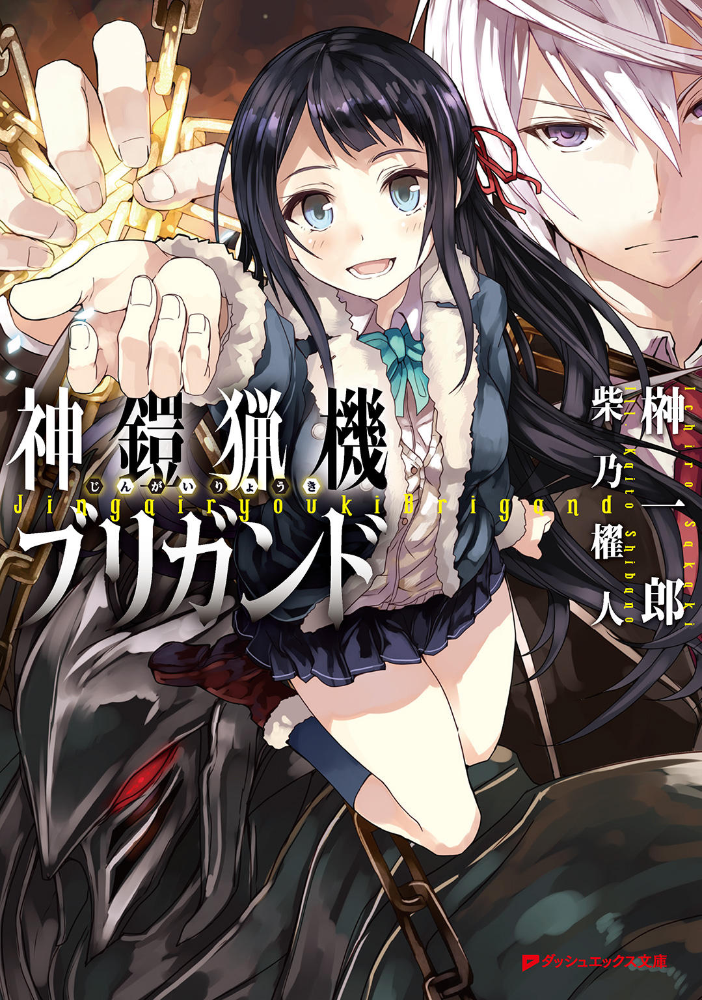
この本は縦書きでレイアウトされています。
また、ご覧になる機種により、表示の差が認められることがあります。
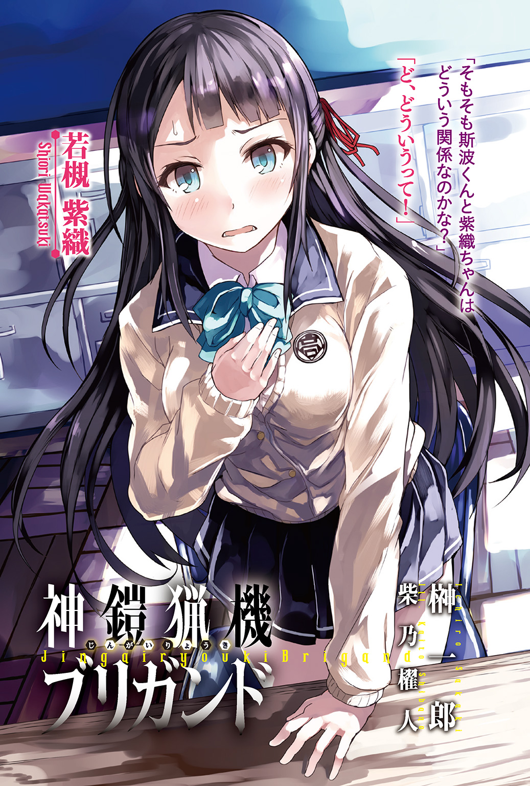
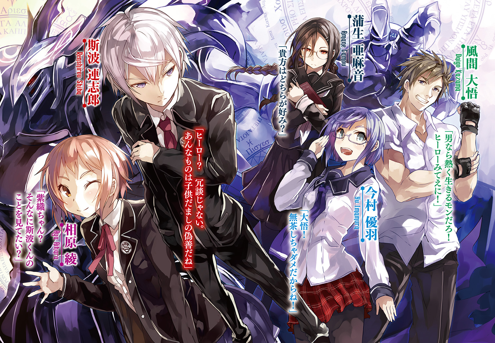
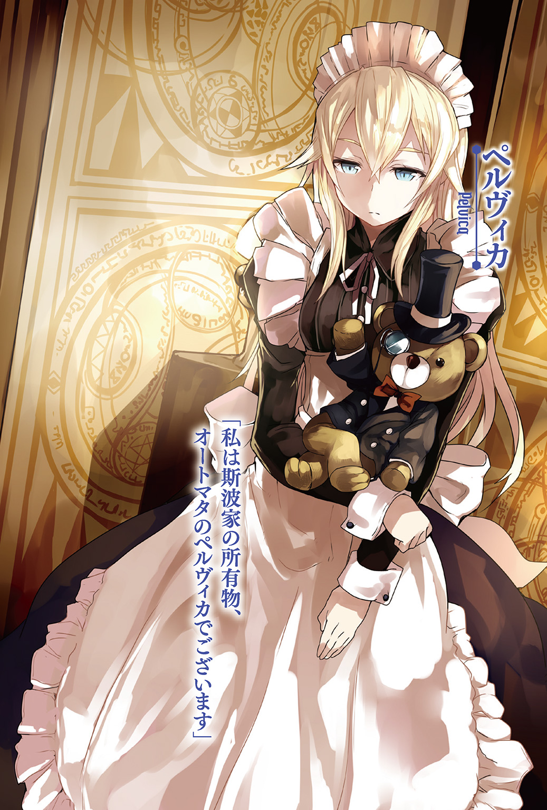
 ダッシュエックス文庫DIGITAL
ダッシュエックス文庫DIGITAL
神鎧猟機ブリガンド
榊 一郎
序章
災厄は、いつも唐突にやってくる。
平穏な日常というものは、脆く、儚く、所詮は砂上の楼閣でしかないという事実――それを忘れ果てた愚か者共に、死の鉄槌を振り下ろす為に。
故にこそ、常に災厄は人々の予想の、裏をかく。
小賢しい人間達の備えをあざ笑うかの様に、思いもしない形で訪れるのだ。
その日、街を襲った災厄もまた、人々が予想だにしなかった類のものだった。
「......何だ......？」
断続的に現場を照らす、回転警戒灯の赤光。
大音量で延々と鳴り続ける、数種の警報音。
時刻は夜の八時――とうに日は沈みきった時間帯であるが、街はむしろ明るかった。
あちらこちらに火の手が上がり、渋滞して立ち往生する自動車の前照灯が幾重にも重なって、闇を押し退けているからだ。
複雑な光と影に隈取られた街の中を、逃げ惑う無数の人々。
「......何だよ......何なんだよ......アレ？」
そんな中――呆然と立ち尽くしながら呟く男を、次の瞬間、吹っ飛んできた瓦礫が直撃した。ひと抱え程もあるコンクリートの塊である。男は疑問を解消する事なく、顔面を大きく陥没させて即死した。
親ですら見分けがつかない様な、凄惨な死に様を晒して地に転がる男を見て――しかし改めて悲鳴を上げる者はいない。悲鳴や怒号など、誰もが上げ続けていたし、今更死体が一つや二つ増えたところで、それに構っている余裕などあろう筈がなかった。
――ずしん。
人々の悲鳴の上に、覆い被さるかの様に響く――地鳴り。
いや。それは地鳴りなどではない。
耳にした者に、例外なく迫りくる圧倒的な力を連想させるそれは......確かに地震や土砂崩れにも似た重々しさを備えてはいたが、ひと連なりのものではなく、断続的だった。
――ずしん。ずしん。ずしん。
歩いている。そう。それは――足音だった。
災厄は歩いてやってきたのだ。
立ち並ぶ集合住宅の狭間、直線道路の果て。
半壊した建築物を回り込む様にして姿を現したのは、巨大な異形だった。
巨人......とでも言うべきか。
断言を憚るのは、それが『人』という単語で示すには、あまりに歪な姿をしていたからである。頭部は一つ、腕も二本、足も二本、これは人間と変わらないが、その身の丈は六メートルにも届く巨体であり、その輪郭はひどく奇怪だ。
獣を思わせる膝の逆関節、直立しながらも地に届く両腕、しかも両肩の間に埋まったかの様な頭部には、二本の角が生え、三つの紅い眼――眼だろう、多分――がぎらぎらと光を放っている。全身は極彩色の模様を描く剛毛に覆われ、不安定そうなその体軀を支える為か、後方には長々と尻尾が伸びていた。
人の様でいて人でなく。獣の様でいて獣でなく。
部分的には似ている生き物はいても、全体は悪夢の産物としか思えない出鱈目さ。
あるいはその姿に......『悪魔』の一語を思い出した者もいたかもしれない。
――ずしん。
それは、ただ歩くだけで、人々の慣れ親しんだ日常風景を壊していった。
一体どれ程の重量を備えているのか......一歩踏み出す度に、舗装道路に亀裂が走り、周辺の建物の硝子が砕け散るのだ。まるで大地震でも訪れたかの様なあり様で――しかしその異形の歩みに沿って、街が壊れていく。
しかも、異形は障害物にひどく無頓着だった。
道路上に散乱する瓦礫を踏み、あるいは蹴り飛ばす。先程の男を殺したのは異形が蹴り飛ばしたものだ。狙って投擲されたものではない。殺意の結果ですらなく、ただの余波で人間の命が奪われる。まさしくそれは災厄そのものだ。
異形は、また足元に停車していた乗用車を一台、蹴り飛ばした。
少なくとも一トンはある筈のそれが、軽々と宙を飛んで数メートル先に転がる。鋼鉄製の車体は紙の様にあっさりとひしゃげ、砕けた硝子が水飛沫の様に飛散した。だが、異形はまるで意に介した様子はなく、歩みを緩めもしない。あるいは――自分が自動車を蹴った事にすら、気付いていないのかもしれない。
「早く――こっちです、早く！」
混沌たるあり様の中で......それでもいまだ理性を保った者の声が、そこかしこで響いていた。
青ざめた顔の警察官達であり、消防士達である。
彼等の表情にもまた恐怖は色濃いが、それでも公務員達は勇敢に己の職務を果たそうとしていた。消防士達は延焼を防ぐべく消火活動を続けていたし、警察官達は警邏車輌を並べて簡易の阻塞線を敷いていた。
ここで、あの異形を食い止めようというのだろう。
「撃て！」
悲鳴じみた声で警察官の一人が命じる。
その声に重なる様にして響く、幾つもの銃声は――しかしこの場においてはひどく乾いて、軽いものの様に聞こえた。火災に熱せられた空気が轟々と唸り、建築物が崩れる音が混じり、更には異形の足音がそこに被っている状態では、わずか数十グラムの火薬が爆ぜる音など、むしろささやかな雑音とさえ言えた。
警察官達の放った銃弾は、全て、迫りくる巨大な怪物に命中していた。
だが三十八口径の弾丸は、あまりにも非力――怪物の歩みを止めるどころか、遅らせる事すら出来ない。剛毛に覆われている為に、命中箇所の状態は判然としないが――出血しているかどうかすら怪しい。そもそもこの怪物に、血が流れているとすればの話だが。
一歩、また一歩。怪物は歩くだけで街を破壊する。
それだけでなく、時折、うるさげに――癇癪を起こしたかの様にその両腕を振り回すと、街路樹をへし折り、建物を崩し、街灯の鉄柱をひん曲げる。もぎ取られた消火栓から水が噴き出し、ひどく局地的な雨を辺りに降らせていた。
「――応援を！」
警察官の一人が無線に向かってそう叫んでいる。
「とにかく早く、早く、何か手を――！」
その頭上が陰ったのは――次の瞬間だった。
警邏車輌を、吹っ飛んできた別の警邏車輌が押し潰す。どちらもが一瞬で潰れて屑鉄と化し、更には漏れた燃料が、電装から出た火花に引火して爆発を生んだ。無線に向けて叫んでいた警察官の姿は、その中に巻き込まれて――消える。
「あああああ!?」
警邏車輌の阻塞線は、あっさりと突破されていた。
辛うじて保たれていた秩序が崩壊する。人々は、蜘蛛の子を散らすかの様に、四方八方へと走り出した。最早、避難誘導の声など誰も聞いてはいない。それどころか、警察官や消防士の中にも、悲鳴を上げて走り出す者が出る始末だった。
一歩でも遠くあの怪物から離れなければ。
誰もがそう思っていただろう。足の遅い年寄りや子供、あるいは焦るあまりに転倒してしまった者達もいたが......彼等に手を差し伸べる者は殆どいなかった。そんな心の余裕など、とっくに消し飛んでしまっていた。
「............」
そんな中――少年は、ただ呆然と眼の前の光景を見つめていた。
瞬きすら忘れたかの様に、開ききったままの両眼に惨劇の現場を映し続けている。
逃げ惑う人々の只中にあって、その場に佇み続ける少年の姿は目立ったが――多くの者は彼の存在に気付く事すらなかった。
ましてや――彼の足元に堆積する瓦礫、その間から見える、小さな白い手など、誰も見てはいなかっただろう。
それは、幼い少女のものだった。
先程まで......本当につい先程まで、微かに震えていた少女の手は、しかし今、力なく垂れ下がって動かない。その指先から血の雫が滴っているだけだ。
死んでいる。脈をとるまでもなく、そう分かる。
「......あ......あ.........ああああ......あ......」
息の仕方を忘れたかの様に――少年の口がぱくぱくと、ぎこちなく動く。
漏れ出る吐息はかすれ、こじれて、声にすらならない。彼の口からこぼれ落ちるのは途切れ途切れの、単なる音だった。
よく見れば、少女の上にのしかかる瓦礫には、紅い指の跡が幾つもついていた。
少年が動かそうと――何とか除けようとした結果なのだろう。彼の両手もまた血にまみれていた。恐らくは彼自身の指先から滲む血で。
「あああ......ああああ......あああああああああ......あああああああああっ......！」
慟哭が少年の内から迸る。
怒りとか。悲しみとか。そんな分かり易くも単純な感情ではなかった。彼の全身から滲み出ているのは、諸々の激情が入り乱れた末に、真っ黒に濁った絶望の色だった。
「ああああああああああああああああああああああああああああああああああッ!!」
吠える。
絶望を身の内から絞り出すかの様に――全身で、少年は哭いていた。
「ああああああぁぁぁぁァァァァアアアアアアアアアアアア――ッ」
揺らめく炎が咆吼する少年の足元に影を刻んでいる。
その形が――歪んだ。
膨れて。折れて。伸びて。縮んで。
まるで主たる少年の束縛から脱しようとするかの如く、影は激しく形を変えながら別のものになりつつあった。
歪で巨大な何かに。
それはまるで――
「アアアアアアアアアアアアアアアアアアアアアアアアッ!!」
藻搔く影を背にした少年は、高々と慟哭しながら――血走ったその両眼で、街を蹂躙し続ける怪物を、睨み続けていた。
第一章
淡い闇の色に満たされた部屋の中で、少女は膝を抱えていた。
天井に近い位置に一つだけ設けられた、小さな鉄格子付きの窓から、白く弱い月光が射し込んでいる。完全に視界を閉ざされる程ではなく、しかし手元に開いた本の字ははっきりと読めず......中途半端な、ただ座っているだけでも、ひたすら気の滅入る暗さだった。
「......四万三千七百二十五......」
少女の――長い黒髪の間から覗く瞳は、虚ろだった。
視線は床の一点に固定されたまま、動かない。そこには何の感情も見えず、瞬きはおろか、呼吸そのものさえ忘れ果てたかの様に――そういう形の石か何かの様に、ただそこにあった。
「......四万三千七百二十六......」
澱んだ空気の中――陰々滅々とした呟きだけが続いている。
一秒に一を数えるとしても、単純に考えて十時間以上。
無意味としか思えない数え上げを、少女は飽きる事なく続けている。
何かを待っている訳でも測っている訳でもない。食事や排泄で中断する以外は、ただ数を数えているだけで......それをどこかに記録するという様子もなかった。もっとも、この部屋の中には記録に使えるようなものは何もなかったが。携帯端末やパソコンは勿論、鉛筆やボールペンの類も、ここには全く見当たらない。
ひどく殺風景な部屋だった。
十代の少女が青春の日々を過ごすには、あまりにも無粋な造りである。
薄闇に眼が慣れれば、その床も壁も天井も、全てがコンクリート剝き出しである事が分かるだろう。そして唯一の出入り口は鉄扉によって――それも二重構造の――閉ざされている。食事は鉄扉に設けられた小さな窓から差し込まれる様になっており、用足しは、部屋の片隅に設けられた真空吸引式の便器で行う様に言われていた。
「......四万三千七百二十七......」
部屋の中には――壮絶な痕跡が、刻まれていた。
乱雑に部屋の内側を走る無数の......溝。
薄闇越しに注意して見れば、少女を中心として壁に、床に、天井に、そして鉄扉にすらも、『爪痕』らしきものが刻まれているのが分かるだろう。
鋭く硬い何かでコンクリートを抉り、鋼鉄を搔いた、その結果だ。
だが一体――何で？ 勿論、部屋の中には、それらしき道具は何もない。
もしバールだのスコップだの......何らかの道具があったとしても、少女の細身で、これ程までに広範囲に、しかも深々と、傷をつけるのは困難だろう。たとえ虎や獅子といった猛獣を閉じ込めたとしても、こうはなるまい。
「......四万三千七百二十八......」
白と黒と灰色と、無数の『爪痕』で構成された閉鎖空間。
監獄の独房ですらも、まだ閉じ込められる者への配慮が見て取れる。内側からは勿論、見えないが――鉄扉の脇には、鑑札代わりとでもいう様に、樹脂製の表札が取り付けられている筈だった。
『若槻紫織』
その四文字と、その下に刻まれたバーコードが、彼女を示す全てだった。
「......四万三千..................」
ふと少女――紫織が数を数えるのをやめた。
遠くから、何かの叫び声が聞こえてきたからだ。
獣の遠吠えを思わせる、低くも鋭い声。およそ理性など欠片も含まない、原始的な感情をそのまま爆発させたかの様な、『音』だった。『声』と呼ぶには、それは、あまりにも非人間的で――誰かに伝えるべき意味を一切含んでいない。
ただ......
「......もうすぐかな......？」
床の一点を見つめたまま紫織が呟く。
「......私ももうすぐ......ああなるのかな......なるんだろうな......悪魔に取り憑かれて......」
まるで他人事の様な口調である。
乾いてかすれたその声には、恐怖の色も悲嘆の色もない。
「......中途半端なまま......何もかも......本物には程遠いまま......死ぬんだろうな......悪魔に取り憑かれて......獣みたいに......あんな声を上げて......」
無論、少女の呟きに答える者は、ここにはいない。
「それも......でも......出来損ないの偽物には......相応しい結末なのかも......ね......？」
代わりに――窓の外から届く遠吠えが僅かだが変化した。
より強く。より高く。何かを期待するかの様に。
「うっ......」
紫織が身を震わせる。
同時に――
ぎ。ぎぎぎ。ぎぎ。ぎぎぎぎぎぎぎぎ。
コンクリートが自ら抉れていく。
何も触れているものがないのに......自ら陥没するかの様に、一筋の『爪痕』が刻まれていくのだ。ぼろぼろとコンクリートの破片がこぼれ落ち、先の『爪痕』と重なって深々と抉られたその傷の向こう側には、鉄板が埋まっているのが見えた。
奇怪な現象である。
だが紫織に......それを恐れる様子はない。
壁を這う『爪痕』がゆっくりと部屋の中を巡り、紫織の方へと近付いてくる。まるで目に見えぬ巨大な怪物の爪が、迫ってくるかの様に。
その様子をぼんやりと眺めながら――
「......痛くないと......いいな......」
仄暗い笑みを浮かべてそう呟く紫織。
今の彼女にとって、それだけが抱く事を許された、望みの全てだった。
●
『収容所』の夜は、暗い。
街から遠く離れた山中にあるという事も理由の一つだが......『患者』達を出来るだけ刺激しない様に、病棟内外の音と光は出来るだけ抑え込まれ、職員達の大半が詰めている管理棟から漏れる分も、極めて限定的にしてあるからだ。故に夜中ともなれば、伸ばした手の先が自分で見えない事も珍しくない。巡回警備には懐中電灯が必須だった。
「静かッスね、先輩」
白い電気の光で闇を押し分けながら――地面に生える雑草を踏みしめて二人の男が歩いていた。今夜は月が出ているのでまだ歩きやすく、その歩調は比較的、軽い。
「いつもこんなもんだがな。......ってか、静かすぎだろ」
男達は、ぼそぼそと抑えた口調で言葉を交わす。
紺と白の制服に身を包んだ彼等は――『収容所』の警備員達だ。もっとも警備員という言葉から、雑居ビル等にいる守衛の類を想像すると、彼等の姿は随分と物々しく見えるに違いない。
何しろ彼等は制服の上から、緩衝材をたっぷり使った防刃防弾ベストを着用し、肘や足にも防具を装着、挙げ句に肩から三点スリングで吊るしているのは自衛隊も採用している八九式自動小銃だからだ。むしろ見た目の印象は軍の特殊部隊員に近い。
「こんな山の中だってのに虫の声すらしねえ」
「そういえば――そうッスね」
「まあ、虫にすら分かるんだろうな」
先輩と呼ばれた男は、忌々しげな口調で、後輩らしき警備員に言った。
これも自衛隊と同様のヘルメットを被っていて、傍目には判別しにくいが――前者が恐らく三十半ば、後者が二十歳そこそこといった年齢だろう。
「ここに詰め込まれてる連中が、どれだけヤバいかを」
「......そッスね」
後輩警備員は首を竦めた。
「でもなんつうか......こんなに静かだと、なんか怖くないッスか。先輩」
「警備する側の人間が何言ってんだ」
後輩警備員の言葉を、先輩警備員は一笑に付した。
「さっきちょっと『患者』が吠えてたけどな。どうせ何も起きやしねぇよ。今日もぶらぶら見回りして、それで終わりだ」
先輩警備員はそう言って肩を竦め――大きく一つ、欠伸をした。
この『収容所』の警備員としての経験は、先輩と後輩で随分と差がついている様だった。先輩警備員の方は、慣れて落ち着いている――というより、緊張感を欠いている印象すらあった。
「それとも何か？ その辺からお化けでも出そうってか？」
彼はふと立ち止まると、懐中電灯で自分の顔を下から照らして、後輩の方に見せつける。
「やめてくださいよ。ただでさえここは――」
後輩警備員が口を濁したのは......この『収容所』の現実を知っているからだ。
国立第二特異能力研究所――通称『収容所』
此処は表向き、非常に特殊な、俗に『超能力』と呼ばれるものを発現した人間の研究を――それも、その『超能力』を制御出来ず、自身の肉体をも傷つけてしまう様な者の治療方法の創出を目的とした施設、という事になっている。
だが定期的に職員達が、手に負えなくなった患者を積極的に『処分』している事は、関係者なら皆が知っていた。既にこの『収容所』が現在の体制で運営されて五年......『処分』されたあと、地下の研究施設で標本扱いを受けている『患者』はそろそろ三桁に達するだろう。
そう。ここは幽霊くらい出てもおかしくはない場所なのだ。
しかし......
「あいつらは死ぬ前からとっくにバケモノさ――得体の知れねぇモンに取っ憑かれた〈悪魔憑き〉さん達はよ。むしろ死んだあとの方が害がねぇ」
病棟の方を振り返りながら先輩警備員は言った。
「『良い〈悪魔憑き〉は死んだ〈悪魔憑き〉だけだ』――ってか？」
「〈悪魔憑き〉――」
自分も気味悪そうに、灰色の病棟を見上げながら、後輩警備員が呟く。
それは『収容所』と同様に、正式な名称ではない。
あくまでネットを中心として広がりつつある俗称である。ただし『突発性特異能力暴走症候群』などという胡散臭い正式名称よりは、遙かに覚えやすく言いやすい為、この『収容所』関係者の間でも問題の病気と、そして『患者』を指し示す言葉として、定着していた。
〈悪魔憑き〉。それは病気であり現象だ。
具体的には、ある日突然――特定個人の身の回りに正体不明の破壊現象が発生する様になる。窓が割れたり、布が燃えたり、壁が崩れたり、様々な形でそれは現れる。
特定個人が眠っている時、あるいはその特定個人が死亡した場合には、破壊現象が止む事から、これは一種の『超能力』ではないかとする意見が大半だ。だがそれは恣意的で制御する事はほぼ不可能で......破壊現象は、次第にその規模を拡大し、その源である筈の特定個人すら殺してしまう場合が、殆どである。
まるで旧い映画に出てくる、文字通りの『悪魔憑き』の様に。
超能力であるとしても、制御不能。当然ながら周囲を激しく巻き込み、死傷者を出し易い。
また映画の『悪魔憑き』と異なり、この〈悪魔憑き〉には聖書も聖水も効かない。
この為――〈悪魔憑き〉達は自存する災厄として、人々から忌み嫌われる事になった。
日本政府は、この事実を公的には認めず、〈悪魔憑き〉達を『新種の病気に罹患した患者である』と規定して、彼等を隔離する方法を採った。同時に各種報道機関には最大限の『協力』が『要請』される事となった。
幸いだったのは、〈悪魔憑き〉の発生がそう頻繁ではなかった事だ。
無視するには多いが、封じ込めて公式上は『なかった事』に出来る程度の、数。
総人口が一億を越える国家において、百人やそこらの患者など、文字通り百万人に一人の稀少例、政治における『誤差』でしかない。勿論、『誤差』として人権を剝奪される当の『患者』達にとってはたまったものではないのだろうが――
「なんか、あれッスよね。〈悪魔憑き〉ってなったら最後、もう治らねぇんスよね？」
「手の施しようがないって話だな。発症したら正気を失って暴れ回って、元に戻っての繰り返し。で......だんだんその間隔が短くなっていくって話だ」
そして最終的には『正気』の時間が......『悪魔』の出ていない時間がなくなる。
先輩警備員は、懐から煙草を一本取り出すと、オイルライターで火を点ける。勤務時間中の喫煙は飲酒共々禁じられているが、後者はともかく、前者は律儀に守る者も少ない。
深々と煙を吸い込んでから、先輩警備員は溜息の様にこれを吐き出して――続けた。
「そうなったら、もう手がつけられねえからな。コンクリートは抉り抜くは、鉄板はぶち抜くは......あんなモンまともに相手してたら命が幾つあっても足りねえよ」
だから、その前に自滅すれば良し――そうでなければ『処分』する。
薬を使うか、銃を使うか、それは管理棟にいる研究者達の判断だ。
「治療法はねぇ。他に入れとく場所もねぇ。どうしようもねぇからここを造って放り込んだんだ。どうせ、もう二度と出られる事はねぇよ、ご愁傷様だな」
二口ばかり吸っただけで先輩は煙草を棄てると、乱暴な仕草で踏みつけて火を消した。
あるいはこの男も、『患者』達の処遇に関しては思うところがあるのかもしれない。だが彼自身が言う様に他に方法はなく、だからこそ殊更に非情を気取って自分自身を誤魔化しているのかもしれなかった。
再び先輩警備員は歩き出し、後輩警備員も二歩ばかり遅れて、そのあとに続く。
やがて――
「......先輩？」
後輩警備員は、不意に立ち止まった先輩警備員の背中を怪訝そうに眺める。
「おい......これ」
先輩警備員が慄然とした口調で言いながら、懐中電灯で照らし出す――先。
そこに視線を向けて、後輩警備員もまた、その場に凍り付いた。
『収容所』敷地の外縁部。
内と外を仕切るそこには、刑務所じみた高い壁が設けられている。高さは五メートル、厚み一メートルの鉄筋コンクリート製で、一定間隔で高感度の赤外線監視カメラも設置されている。勿論これは外部からの侵入を警戒してのものではなく、収容した〈悪魔憑き〉達が外に逃げるのを防ぐ為の施設だった。
だが......その壁が、ない。
正確にはその一部が、ごっそりと抉り取られたかの様に消失しているのだ。幅にして四メートル余り。人間どころか大型トラックでも通り抜けられるだけの隙間だ。
しかも......
「これは......！」
先輩警備員は、壁の消失した部分に駆け寄って――残った壁の断面を見つめる。
そこは滑らかな状態だった。コンクリートでありながら、尖った鉄筋もなければ、ごつごつした破断面も見えない。代わりにそこは、熱した飴細工の様に崩れていた。
抉ったのでも、叩き壊したのでもない。溶かしたのだ。
だが――誰が、一体、どうやって？
「どういう事だ。誰か脱走したのか？」
「いや、これ、外から――」
動揺する警備員二人――その周囲の闇が濃さを増したのは、次の瞬間だった。
何かで月明かりが遮られたのだ。その事実に気付いた警備員達は、恐る恐る自分達の頭上からのしかかる影を......その本体があるであろう場所を振り返った。
「これは......！」
叫ぶ先輩警備員の声は、既に悲鳴に近い。
二人の警備員が、驚愕と恐怖に揺れる視線を向けた、先。
そこには――白い半月を背に、悠然と佇む異形の巨体があった。
●
それは......紫織が『収容所』に入れられてから初めての経験だった。
「............？」
彼女が収容されている部屋が、否、彼女の部屋を含めた第二病棟が、激しく揺れた。
地震ではない。それは直感で分かった。
それを裏打ちするかの様に、強烈な破砕音が、そして更には、けたたましい警報と入り乱れる足音、それに混乱しきった叫び声が続いた。どうやら警備員達が走り回っているらしい。
「なんだあれは!?」
「まさか具現――」
「緊急事態！ 緊急事態！」
「Ｃ棟に人を回せ！ 武器を出すんだ、急げ！」
「患者の様子を調べろ！ 暴れるようなら構わん、撃て！」
「とにかく〈悪魔憑き〉共を外に出すな！」
これまでも何度か、施設内で大きな音が聞こえた事はあった。
関係者が慌ただしく走り回る足音や、罵声や怒声が聞こえてくる事もあった。
だがその全てが、全部まとめて聞こえてきた事はなかったし――何より病棟そのものが大きく揺れる様な事は、今までなかった。
しかも......
「動くなっ！」
叩き付けるかの様な激しい音を立てて、鉄扉が開く。
そこには自動小銃を抱えた若い警備員の姿があった。
「壁際に行って伏せろ、〈悪魔憑き〉！」
血走った眼で紫織を睨みながら、警備員が喚く。
勿論、紫織には警備員の抱える銃がどういう状態なのか......安全装置は掛けられているのか、弾は装塡されているのか、そもそもどれくらいの威力なのか、全く分からない。
だが――
（あ......撃たれる）
紫織は、どこか他人事の様にそう思った。
警備員は明らかに恐慌状態だった。顔は青ざめ、目は見開かれ、手は小刻みに震えている。紫織が動けば、反射的に引き金を引くだろう。動かなくとも、恐怖に駆られた彼はやはり緊張に耐えられなくなって、引き金を引くだろう。説得も恐らくは無駄だ。この警備員にこちらの話に耳を貸す余裕があるとは思えなかった。言葉を発した途端に銃弾が飛んでくるに違いない。まさに一触即発である。
だが――どうして、この警備員はこんなにも怯えているのか。
勿論、紫織は恐れ忌まれるべき〈悪魔憑き〉である訳だが......そんな事はこの警備員もとっくの昔に承知していた筈だ。その為の自動小銃であり、その為の防護ベストであろう。〈悪魔憑き〉の一人や二人、労せずして制圧出来る筈の装備だった。
（じゃあ......何故？）
ひどく冷静な気持ちで紫織は考える。
だが、答えを得るだけの時間は残っていない様に思えた。警備員は今にも発砲しそうに見える。動揺のあまり銃口は紫織から外れてしまっているが、闇雲に乱射されれば、狭い部屋の中では逃げ場がない。紫織など瞬く間に蜂の巣だ。
（......痛くないといいな）
できれば苦痛を感じる間もない程に、一瞬で殺してほしい。
そんな事を頭の片隅で考えた紫織だったが――
「――え？」
その願いが聞き届けられる事は、なかった。
警備員の姿は次の瞬間、消えていたからだ――周囲の壁や床と共に。
「............」
突然の事に――さすがに紫織も呆然と、眼の前の光景を見つめる。
彼女のすぐ眼と鼻の先、距離にすれば五十センチもない辺りから、ごっそりと全てが抉り取られていた。病棟の一郭が、まるでスプーンでアイスクリームをすくい取るかの様に丸く消失している。一体どんな力が働いたのかは分からないが――断面からは何か饐えた様な、鼻を刺激する匂いが漂ってきた。
顔を上げると、天井も――そして上層階も、更には屋根まで、全て一続きになくなっているのが見える。紫織の頭上にはおよそ一年ぶりの夜空と、そこに浮かぶ白い半月があった。
「............」
久々に肉眼で見る月は――美しかった。
こんなにも綺麗なものだったのか、と紫織は思った。当たり前の様に見上げていた頃には考えもしなかった。失ってみて初めてその価値を知る、というのはよくある話だ。
ふと――その月光が、陰る。
何かに遮られたのだ。
「..................騎士......？」
身の丈は、およそ六メートルといったところか。
断絶感を覚える程に巨大ではなく。
侮って見られる程に矮小でもなく。
分かり易く実感を伴う――脅威そのものといった大きさ。二階建ての家屋に等しい高さだが、それが人型をして実際に動くとなると、醸し出される圧迫感は尋常ではない。
その輪郭は、複雑な流線と幾つもの突起によって構成されており、漆黒と白銀の組み合わせに彩られたその姿は、確かに鎧を纏った騎士を連想し易い。少なくとも、その見るからに硬そうな表面の質感は、生物のものとは明らかに異なっていた。背中から腰の辺りにかけて緩やかになびいているマフラーともマントともつかない布の為に、余計にその硬質さが強調されている様な印象だ。
だが同時に、その姿には、騎士の甲冑とは明らかに異なる点もあった。
全身を緩やかに循環する――複雑な紋様。
文字の様な、回路の様な、幾何学的で精緻なそれは、音もなく、装甲の表面を滑っていく。まるでどこからか、投映機で何かの映像を映し出しているかの様な、奇妙な光景だった。
これは一体何なのか。
鋼鉄の巨人――そんな表現で括るのは簡単だが、それでは何の説明にもなっていない。
（......鎧の......騎士......）
ふと――紫織の脳裏を、益体もない想像が過ぎる。
悪い魔法使い。意地悪な悪魔。囚われの姫。駆け付ける騎士。
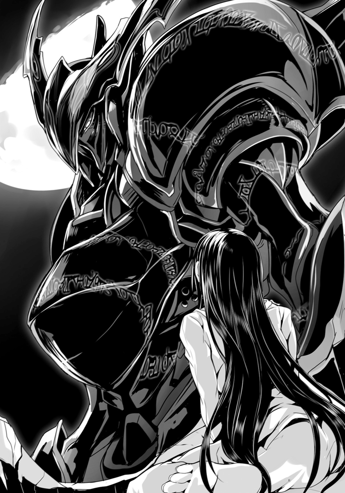
『騎士』の一語が、紫織自身の境遇と結びついて、連想を呼び――手垢の付いた寓話を呼び覚ましていた。誰もが似たような御伽噺を聞いた事があるだろう。だが今更、己を『囚われの姫』になぞらえる様な気持ちが自分にも残っていたという事が......紫織には少し意外だった。
助けてほしい。救われたい。
既にどうしようもないくらいに絶望しきっていた筈なのに――何もかもを諦めていた筈なのに、どこかでまだ自分は、浅ましくもそんな希望を持っていたのだろうか。
「............」
巨体が音もなく動いた。
兜に覆われた頭部が――紫織の存在に気付いたかの様に振り返る。
鋼鉄の仮面の奥、切れ目の様に刻まれた覗き穴の向こうで、血の様に紅い眼球が動き、じろりとこちらに焦点を合わせるのが見えた。
（――あっ）
眼が合った。
そんな風に紫織が思った次の瞬間......巨人が右手をこちらに伸ばしてきた。
殴りつけ、叩き潰す――その意思を真っ直ぐに具現させたかの様な、鋼鉄の手は、ひどく凶悪に見えた。紫織など軽く殴るだけでも――いや、殴るまでもない、ただ摑んで握りしめるだけでも、全身の骨を砕かれてしまうだろう。
「............」
仮面の奥の紅い眼球には、憎悪が滾っていた。
一目見て、紫織にもそれと分かる程に――殺気に満ちていた。
紫織は悟った。これは断じて気高い騎士などではない。理不尽にもこの世の全てに怒り、全てを憎み、触れる者、近付く者、一切の区別なく滅びを振りまく破壊神だ。
（ああ、なんだ......）
一瞬でも、希望の欠片のようなものを感じた事を、紫織は恥じた。
壁の残骸を更に崩し、巨人の手が指を開いてこちらに向かってくる。
緊張感で間延びする時間感覚の中――紫織は静かに眼を閉じた。
（何度も、覚悟してきた事よ......）
改めて紫織は自分に言い聞かせる。
自分は死ぬ。それは確定した未来なのだ。薬殺か。銃殺か。あるいはこの身に取り憑いた『悪魔』に抉り殺されるのか。その過程に多少の変更があるだけで......結末は同じだ。たまたまこの鋼鉄の巨人に握り潰されるという形になっただけで。
「......出来れば......痛くしないで」
そんな願いを巨人が聞いてくれるとも思えなかったが......ただそれだけを呟いて、紫織は己の上に訪れる終わりを、大人しく待った。
●
『撃て！ 撃て撃て撃てッ！』
銃声の合間から半狂乱の叫び声が届く。
分厚い装甲と結界越しなのでくぐもって聞こえるが、それでも警備員達の狼狽振りが如実に伝わってくる声だった。無理もない。彼等にとっては悪夢がそのまま現実に這いだしてきた様にすら見えるだろう。
「――煩わしい」
分厚い装甲の奥で――一人の少年がそう呟いた。
隙の無い端正な顔立ちで、静かで涼しげな無表情がむしろよく似合う。口にした言葉とは裏腹に、切れ長の両眼はむしろ半眼の状態――眠たげにすら見えた。少年と言いつつも、その落ち着き振りは、枯れきった老人のそれに近い。
だが、彼の姿を最も特徴的に見せているのは、目鼻立ちよりも、態度よりも、何よりも、まずその髪の色だろう。
白......いや、どこか硬い印象を含むその色は、銀、と言うべきか。
顔の造りは基本的に日本人の、それも若者のそれだからこそ、余計にその髪との組み合わせが目立つ。彼と出会った人間は大抵、その整った目鼻立ちよりも、老人の如く白いその髪にまず眼を奪われる。
『――連志郎様』
若い娘の高い――しかし落ち着いた声が、少年の耳元でそう呼び掛けた。
彼の右耳に取り付けられた、小型の受信器からのものである。
『お分かりでしょうが、時間があまりございません。〈ブリガンド〉の稼働時間は勿論ですが、連絡を受けた草薙機関の部隊が、現在、そちらに急行中である様です』
「分かっている」
連志郎と呼ばれた少年はそう応じた。
斯波連志郎――それが彼の名だ。
そして彼がその内に座して操る鋼鉄の巨人......その名を〈ブリガンド〉という。
荒神拘束制御用外装骨格〈ブリガンド〉。
一見するとそれは、巨大な人型ロボットの類にも見えるかもしれない。
だが、実際にはそれは、空っぽの『殻』でしかない。分厚い装甲の内側は、駆動系も何もない、がらんどうだ。
装甲の各部から伸びた十数本の光る鎖が、まるで骨格の如くに、あるいは血管の如くに、互いに絡み合い、最終的に胸部にある連志郎の座る『席』へと集まってこれを固定しているが......内部の構造物といえばその程度である。
だがそれも当然といえば当然。
これは本来、外からの攻撃を防ぐ為の鎧ではない。
連志郎の内側から溢れ出しそうになる、不可視の力に形を与え、御する為のものだ。
「蹴散らしても良いのだが」
外部拡張用感覚器――紅水晶の眼を通して、地上を一瞥する。
今の連志郎は、つまりは〈ブリガンド〉は、人間と比して三倍以上の身の丈と、百倍もの膂力を備えた、常識外の怪物である。生身の人間がどれだけ束になろうと、小銃程度の武装ではろくに傷もつけられまい。ただ強引に歩くだけで、文字通り、地を這う連中を蹴散らす事も可能だった。
「どうしたものか」
連志郎は〈ブリガンド〉の右腕で抱え込んでいる少女を意識した。
眼が合った――ただそれだけの事だったのだが、咄嗟に彼はその少女を庇っていた。
あの場にいたという事は、この少女とて〈悪魔憑き〉である筈で、場合によっては――第二段階に成長する事があれば、連志郎の敵になるかもしれないのだ。わざわざ助けてやる義理など、どこにもない。
本当に咄嗟の事で、彼自身にもよく分からないのだが――あるいは、崩れかけた建物の中にいたその少女に、昔日の記憶が刺激されてしまったのかもしれない。
何にしても、余計な荷物だ。
出来れば足元の警備員達に手渡してしまいたい――というより、彼等も少女も早々にこの場から去ってもらいたい。今更、人が死ぬ事にいちいち忌避感など覚える連志郎ではないが、意味のない巻き添えは、彼としても望むものではなかった。
しかし......
「――遅かったか」
連志郎の言葉に応ずる様にして、それは第一病棟の陰から姿を現した。
大きい。〈ブリガンド〉と同等の巨大な人型。
身長六メートル前後というのは多くの〈魔神態〉に共通の上背である。勿論、人型とは到底呼べない様な異形に完成する場合もあるので、全ての〈魔神態〉に共通する特徴という訳でもないのだが。
身の丈は同等でも、その外見から受ける印象は〈ブリガンド〉のそれとは大きく異なる。
簡単に言えば、それは『剛』と『柔』――『鉄』と『肉』の差である。
鎧騎士を連想しがちな外装骨格である〈ブリガンド〉に対し、現れた〈魔神態〉はやたらに生々しい肉体を持っていた。その体表は、月光に照らされてぬめぬめとした――粘液質を思わせる光り方をしている。全身のあちらこちらにだぶついた肉が襞を成し、一歩進む度に、あちこちが泡立つ。
生理的嫌悪感をひたすらに煽るかの様な――醜悪な姿だった。
「〈魔神態〉――」
一度は見失った相手だが――少女を助けていたせいだ――感覚の端ではずっとその存在を捉え続けていた。『敵』が逃げていないのは明白だった。
元々この『収容所』を襲撃したのは、連志郎ではなく、この〈魔神態〉の方である。連志郎はあとからやってきて、何やら破壊活動に勤しんでいた〈魔神態〉に対して襲いかかっただけの事である。
この〈魔神態〉が一度、〈ブリガンド〉の前から姿を消したのは、単に奇襲されて驚いたからだろう。初撃で斃しておかなかったのが悔やまれる。
だが......
「やはり『ハズレ』か」
改めて相手の姿を確認しながら、連志郎は呟く。
「だが見逃す訳にもいかない。貴様等は一匹残らず滅ぼし尽くすと決めているのでな」
『――なんだ!?』
ようやく警備員達も再び姿を現した〈魔神態〉に気付いたらしい。
恐らく彼等は、塀の破壊も、病棟破壊も、〈ブリガンド〉の仕業だと思っていたのだろう。だが、これは誤解も甚だしい。連志郎に建物をいちいち壊して回る趣味はない。『収容所』の敷地内に入りたければ壁を乗り越えるだけだ。
だが〈魔神態〉になった連中は、そうではないらしい。
多くの場合――〈魔神態〉は己の能力に固執する。壁を乗り越えればすむ場合でも、わざわざ〈魔神態〉の能力を使って、これをぶち抜きたがるのだ。
『バケモノが二匹――』
『撃て、撃て、あっちも撃て！』
投光器の光が、慌てた様に〈ブリガンド〉と〈魔神態〉の間を往復する。
だがより生理的嫌悪感を訴える〈魔神態〉の方から、まず最初に排除すべきと考えたのだろう――警備員達は自動小銃を、迫りくる肉塊へと向けて、発砲を開始した。
『こいつはいけるぞ！』
八九式自動小銃の小口径高速弾は、はずれる事なく〈魔神態〉の異形に着弾した。
的が大きい上、元々、反動が小さく制御が楽な八九式自動小銃を用いているので、最低限の訓練しか受けていない様な警備員達でも、命中させる事が出来るのだ。
異形といえども相手は肉......〈ブリガンド〉の様に装甲で銃弾を弾き返される事もない。
しかし――
『おいっ......？』
『効いてな――』
〈ブリガンド〉の時とは種類の異なる新たな狼狽が、警備員達の間に広がっていく。
弾丸は確かに〈魔神態〉に命中していた。その証拠に表面を濡らす粘液が飛沫となって弾け跳ぶのも――焼けた弾丸に熱せられたか、粘液が白い煙を発するのも、見えた。
だが、それだけだ。醜悪な〈魔神態〉は、怯む様子もなく進んでくる。
肉を震わせ、あちらこちらに粘液を滴らせながら歩く様は、やはり醜悪の一語に尽きる。見ているだけで鼻孔の奥に異臭がしてくる――そんな錯覚すら覚える程だ。
『駄目だ、逃げろ！』
警備員達はようやく恐怖が限界に達したか――銃撃をやめて、我先にと逃げ始めた。
「ふむ。敵に感謝する事になるとはね」
より醜悪で恐怖感を煽る〈魔神態〉のお陰で、図らずも、連志郎は足元を気にせず動く事が出来るようになった。もっとも右腕には例の少女を抱えたままだが。彼女は気を失っているのか、暴れたりする様子がないのが、せめてもの救いだった。
少女を降ろしている余裕はない。また気絶した少女をこの場に降ろせば、間違いなく〈ブリガンド〉と〈魔神態〉の戦闘に巻き込まれるだろう。
「仕方ない......」
連志郎は少女の身体を左腕に抱え込み直して、身構える。
今の〈ブリガンド〉はいわば連志郎の第二の身体だ。その操作に関しては――人間の肉体に可能な動作であれば、殊更に何かを意識する必要はない。連志郎が構える事を意識すれば〈ブリガンド〉もまた、その通りの体勢をとる。
「............ん？」
近付いてきた〈魔神態〉が、足を止め、身を屈めるのが見えた。
先に叩き込んだ一撃で、相手もこちらを敵として認識している筈だ。立ち止まる意味も頭を下げる必要もない。その行動の全ては攻撃の為のもの――と考えるべきだ。
「車......か」
〈魔神態〉が持ち上げたそれを見て、連志郎は呟いた。
警備員や職員達が『収容所』内部を移動する際に利用する、電気自動車である。普通の車よりは一回り小さいが、蓄電池を満載している関係で、重量としてはあまり大差ない筈だ。
それを〈魔神態〉はあっさりと持ち上げると、まるで誇るかの様に頭上に掲げてみせた。
次の瞬間――電気自動車の輪郭が緩む。
「ふむ？」
電気自動車の車体が溶けている。
〈魔神態〉の両手が触れた部分から溶解し、そのまま幾つもの色が中途半端に混じり合った粘液となって、地面に垂れていく。
「............液状化した？」
〈魔神態〉が、何か特別な動作をしたようには見えない。
だが小さいとはいえ、車が一台、瞬く間に残骸とすら呼べない様な粘液となって地面に溜まる光景は、ひたすらに異様だった。
「先の――病棟を抉ったのも、これか」
少女と遭遇した際、彼女の収容されていた病棟は大きく壁と床が抉り取られていた。
実際にこの〈魔神態〉が病棟を破壊した際に、何をしていたのかは、連志郎の側からは見えなかったのだが――
「岩も鋼も瞬く間に溶かす――か」
恐らくは、それがこの〈魔神態〉の能力だ――それも力半分程度の。
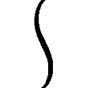ッ！
〈魔神態〉が震えた。
その頭部もまた肉が幾重にも垂れ下がって襞をなしている為、眼も鼻も口も判別がつかず、およそ表情は見えないが――
「............」
笑っている。
電気自動車を溶かしてみせたのは、やはり示威行動か。
見ろ、これだけの事が俺様には出来るんだぜ、怖いだろ――と。
実際、普通の人間ならば、恐怖のあまりその場に立ち竦んでいた事だろう。電気自動車を数秒で溶かしきるなら、人間など一瞬で原型も留めない液体に変えられてしまうに違いない。単に速度という意味なら、濃硫酸よりも遙かに強力な溶解力である。
「やれやれ」
連志郎は溜息をついた。
「〈魔神態〉になる事を覚えた〈悪魔憑き〉共は、どうしてこうも頭が悪いのか――」
〈ブリガンド〉が右手を伸ばした。
崩れかけた病棟の中から、手頃な長さの配管をもぎ取って――握り直す。
「道具を使うから人間なのだ」
呟きと同時に〈ブリガンド〉が地を蹴った。
轟音と共に空気を抉り抜いて突進する巨体。間合いは一瞬にして詰められ、〈ブリガンド〉は右手の配管を剣道の面打ちの如く、〈魔神態〉の頭部へと振り下ろしていた。
〈魔神態〉の防御は間に合わず、鋼鉄の筒はその顔面を直撃。
衝撃で大きく肉がうねり、粘液が飛び散る――が。
「――ふむ？」
手応えがおかしい。
咄嗟に引いたその配管は、半分程度の長さになっていた。
〈魔神態〉の頭部に触れた途端に、溶けてしまったのだ。
連志郎は後方に跳び下がって間合いを広げながら、配管の残った部分を投げつける。だがこれもまた〈魔神態〉の顔面に命中――突き刺さったかと思えたその瞬間、形が崩れて飛び散っていた。
「なるほど？ 液状化は高速、しかも両手でなく全身で可能――か」
身体を覆う粘液が、強酸の類なのか、あるいはもっと別の理由なのか、詳しい事はさすがに分からないが......この〈魔神態〉に触れたものは、片っ端から溶かされてしまうらしい。
恐らくは先程、警備員達の銃弾を浴びても平気だったのは、この能力によるものだ。銃撃を受けて飛び散っていた粘液の中には、銃弾だったものも含まれていたに違いない。
最も恐るべきは、鋼鉄も鉛も溶かしきる溶解力そのものではなく――その速度だ。
一瞬で金属すら液状化させる為、棒で殴ろうが、刃で斬ろうが、破壊力を完全に叩き込む前に武器が溶けて威力が拡散・吸収されてしまう。
「つまり、誰も俺には触れ得ない――と？」
確かに勝ち誇って笑うのも道理。
この〈魔神態〉は、ただ佇んでいるだけで良い。まさに攻防一体、無敵の肉体である。敵は攻撃をすればするだけ勝手に消耗し、迂闊に〈魔神態〉の手の届く範囲に踏み込めば、一瞬で溶かされてしまう。
だが――
「ああ......本当に馬鹿なんだな」
連志郎は、笑った。
〈ブリガンド〉は後方に跳躍――その巨体に似合わぬ軽やかさで、敷地の端へと移動する。
そこは駐車場だった。先程の電気自動車の他に、職員の通勤用や、資材の搬入等に使うらしい車が大小十数台、停車している。連志郎が侵入した際に見たよりも、多少車の数が減っている様に見えるのは、恐らく職員や警備員達が逃げ出すのに使ったのだろう。
〈魔神態〉は悠然と〈ブリガンド〉に追ってくる。殊更にゆっくりとした歩調は、こちらを怖がらせる為のものか。己の能力に対して、連志郎はなす術もない――と思っているのだろう。
その異能を秘めた醜悪な巨体に――
「勿論、触りなどしない。だが――」
――〈ブリガンド〉が投擲した自動車が命中したのは、次の瞬間だった。
一トンを越える重量物が、弾丸の如き速度で衝突する。轟音と共に〈魔神態〉は仰け反るが――しかし所詮その程度だった。自動車は衝突した瞬間から液状化され、自ら衝撃を吸収しながらどろりと〈魔神態〉の足元に流れ落ちる。
だが、自動車だったものが地面に達するその瞬間には、『次』が激突していた。
文字通り手当たり次第――〈ブリガンド〉は片腕で自動車を摑んではこれを投げつけていく。五台。六台。七台。八台。九台。十台。総計十トンを越える鉄の塊が、全て〈魔神態〉の足元で粘液となって堆積していった。
勿論、〈魔神態〉は無傷である。それどころか、連志郎の行動を悪足搔きととったか、再び〈魔神態〉はその巨体を震わせて笑った。更には片腕を手前に伸ばし、膨れあがった指を折り曲げて見せる。招く様な仕草は――『もっと好きなだけ投げてこい』という意味だろう。
しかし......
「貴様――自分の能力の特性や効果範囲を、きちんと把握しているか？」
言いながら連志郎は駐車場に残っていた長い鉄柱を――標識のものだ――強引に引き抜くと、これを〈魔神態〉ではなく、遙か頭上に向けて投げた。
一体何を？ ――と〈魔神態〉は訝しんだ事だろう。
だが思考を許さないとばかりに、最後に投げつけられた大型トラックが、その醜悪な身体を仰け反らせる。それも当然、溶解して〈魔神態〉の足元に堆積して――
「――！」
何かに気付いた様子で〈魔神態〉が愕然と頭上を振り仰いだ。
縦に細長い楕円軌道を描いて、〈ブリガンド〉の投げた標識が、まるで矢の様に落下してくるのに、ようやく〈魔神態〉は気付いたらしい。だが咄嗟に能力を発揮するのが遅れたのか、標識は〈魔神態〉の左肩に命中――そのまま巨体を刺し貫いて、地面に縫い止めていた。
「当たり前の話だが」
連志郎は淡々と、特に勝ち誇るでもなく言った。
「どこでも触れたものは溶解させられるといっても、それは限定的――能力はあくまで意識的なものだ。さもなければ貴様は地面に立つ事すら出来ないからな」
表面の全てに、触れたものを瞬時に溶かす能力が備わっているならば、当然、地面も溶けているだろうし、そもそも電気自動車を摑んで掲げる事すら出来まい。触れた端から液状化して、指の間からこぼれ落ちていくだけだろうからだ。
「それに僕は既に一度、貴様を殴っている」
病棟を溶かしていた〈魔神態〉を背後から襲った時の事である。
その際に〈ブリガンド〉は右の拳を使っているが、そこが液状化した痕跡は――ない。
「貴様は認識し、選択した部分に液状化の能力を付与する事は出来るが......逆に言えば、認識外からの奇襲攻撃に対して、その能力で防御する事は出来ない。またその能力を付与する面積や時間には、限りが有る。だから『常に足の裏以外は全て能力付与』などという事も出来ない訳だ。それが出来るなら、最初からそうしているだろうしな」
そもそも人間の意識は、同時に二つも三つもの事を集中して行える様には出来ていない。
能力を意識的に行使出来るのは、あくまで一方向だけ――それを確かめる為に連志郎は敢えて標識を頭上に投げたのである。正面の〈ブリガンド〉や投擲される自動車に注意を引かれていた〈魔神態〉は、落ちてくる標識にまで対応しきれなかった。
まして――
――ギョオオオオオオオオッ！
苛立たしげな咆吼は、身動きがとれない為か。
身体の『表面』に触れたものを溶かす事は出来ても、内部――身体を貫いている交通標識を溶かす事は出来ないのだろう。しかも、足元に大量にわだかまる、十数トン分の溶解した鋼鉄もまた足枷となって〈魔神態〉の動きを阻害する。足周りの表皮に能力を付与すればまたこれを溶解させて蹴散らせる事は出来るだろうが――そうなれば、今度は地面まで溶かしてしまって、自らが造り出した底無し沼に沈む事になる。
「無駄だ。貴様は既に詰んでいる」
そう宣言すると〈ブリガンド〉内部の連志郎は――生身の彼の肉体は、己が座する席の肘掛けを右の拳で叩いた。
金属音と共に起き上がるのは、航空機のものにも似た操縦桿である。
彼はこれを握り――親指をその尖端のボタンに添えた。
「さあ――地獄に還る時間だぞ」
〈ブリガンド〉が右腕を掲げる。
ぎしりぎしりと装甲各部が軋みながらその形を変え、各部を展開し......まるで右腕だけが一回り膨れ上がったかの様な印象になった。上から相手を殴りつけるかの如き姿勢だが、まるで〈ブリガンド〉自身が、己の右腕を全身で支えている様にも見える。
右の掌が手首の辺りで半回転。
五指を全て揃えて折り曲げた――格闘技で言うところの『掌底打ち』の形をとった。
同時に〈ブリガンド〉の装甲表面を循環し、祈禱車効果を発揮していた制御術式が切り替わり、その右腕に向けて集まっていく。
「............ッ」
短く呻く連志郎。
これを使う時は大抵――意識を持っていかれそうになる。制御術式の大半を偏った形で使う為だ。いっそ気を失ってしまえば楽になるのは分かっていたが、それだけは何があっても絶対に――死んでも、出来ない。
水晶眼の重層視界で照準。対象を固定。
轟ッ！ と地を蹴り風を巻いて、〈ブリガンド〉が飛び出した。
未だ満足に身動きのとれない〈魔神態〉に向けて真っ直ぐに突っ込んでいく。あとは『引き金』操作と発声による二重の意思確認で、抑制術式と安全機構が全て解除される。
「――〈コベット・ファング〉！」
吠えながら連志郎は、操縦桿のボタンを押し込んだ。
〈ブリガンド〉が、己の右腕に巨体を引きずられる様にして突撃。
激突は、轟音と閃光を伴った。
まるで飢えた獣の顎の様に、〈ブリガンド〉の右手は〈魔神態〉の胸部へと食らいつき――回転しながらその内へと潜り込む。全力稼働を始める抑制術式と結界が、周囲の空間を振動させ、これに肉を引き裂き、骨を砕き折る生々しい響きが被った。
「――おおおおおおおッ！」
吠える連志郎。
次の瞬間〈ブリガンド〉の右手は〈魔神態〉の身体を貫き――抜けた。
〈魔神態〉の輪郭が、崩れる。
一瞬にして白く染まった〈魔神態〉は、次の瞬間、砂像が乾いて崩れるかの様に、大量の粒子となって地面にばらまかれていた。
「............」
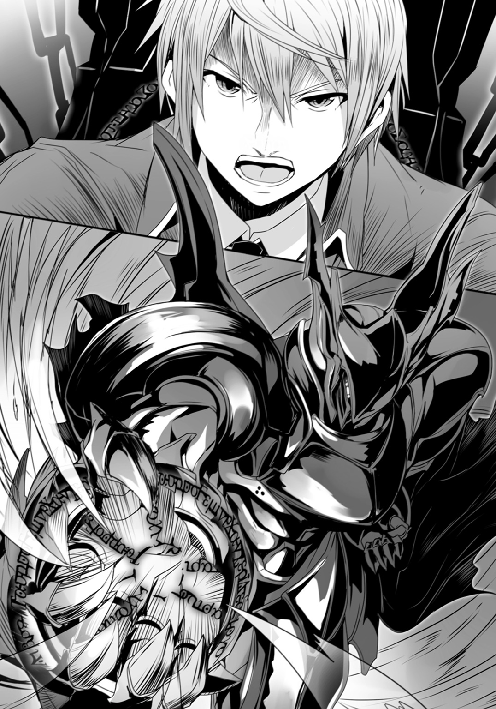
だが〈ブリガンド〉もまた、力尽きたかの様にその場に膝をついていた。
右腕の装甲が再び元の位置に戻り、制御術式の呪紋が全身を循環し始める。それとは別に肩や背の装甲が展開し、蒸気を噴いて放熱を始めた。制御しきれなかった『力』の余剰分を、錬金術系の術式で単純な熱量に変換し、解放しているのだ。
そして――
「......あ......あ............ああ......」
突き出されたままの〈ブリガンド〉の右手......そこには、一人の男が握られていた。
生きている。生きているが、口の端からは涎を垂らし、開かれたままの両眼は虚ろでどこにも焦点が合っていない。糸の切れた操り人形の様に、全身も脱力した状態である。
連志郎の〈ブリガンド〉が備える能力――〈コベット・ファング〉。
悪魔喰らいの顎。〈悪魔憑き〉と――その極致たる〈魔神態〉と戦い、悪魔を葬る、その為の、その為だけの力。だが......これとて万能ではない。
人間の意識の深奥にまで悪魔は根を張る。だからこそ無傷で引きはがす事は出来ない。
「......いつもながら疲れる」
〈ブリガンド〉は指を開き、男を放した。
脱力しきっているせいか、その身体は特に跳ねる事もなく、地面に落ちた。特に怪我をした様子もないが、たとえ骨折していようが、それは連志郎の知った事ではない。
ただ――
「――そういえば」
そこでようやく、連志郎は〈ブリガンド〉の左腕に抱えていた少女の事を思い出した。
生身の人間を抱えたまま〈魔神態〉の〈悪魔憑き〉と戦うなど......よくも無茶をやったものである。勿論、連志郎に怪我の類はないが、少女の方は下手をすると、火傷や骨折の一つや二つ、しているかもしれない。
だが前述の通り――恐らくは、この少女も〈悪魔憑き〉だ。
このまま握り潰そうが、投げ捨てようが、誰からも文句は言われまい。そもそも見ず知らずのこの少女を助けてやらねばならない義理など、連志郎にはない。そんな偽善臭い博愛精神は、連志郎が最も嫌う事の一つだった。
「まあ――いいさ」
少女を――こちらはそっと地面に降ろし、連志郎はそこから数歩下がると、〈ブリガンド〉を解除した。
鋼鉄の騎士が破裂する。
各部の結合が解かれ、装甲を繫ぐ鎖が、音を立てて放射状に伸びてゆき――一旦十数個に分割された部品の状態となる〈ブリガンド〉。次の瞬間、まるでフィルムの巻き戻しを見るかの様に鎖が再び巻き取られ、部品は一箇所にまとめられていた。
結合の金属音が鳴り響く。
だがそこに出現していたのは、既に『騎士』ではない。
個々の部品は同じでも、配置を換えられて組み上げられたそれは、全くの別物――巨大な鋼鉄の『鳥』となっていた。〈ブリガンド〉の高速移動形態である。
「............さて」
連志郎が左手首に塡めた腕時計に触れると、〈ブリガンド〉は風を巻いて舞い上がる。
鋼の怪鳥が夜空の彼方に飛び去るのを見届けてから――連志郎は改めて辺りを見回した。
これから、彼自身は自分の足で歩いてここから逃げなければならない。勿論、〈ブリガンド〉を使えば簡単なのだが、あれは彼自身の消耗が激しく、限界時間を超えれば暴走しかねない諸刃の剣なのである。
急がねば――先に忠告された通り、草薙機関の派遣した〈魔神態〉の制圧部隊がやってくる。必ずしも勝てない相手ではないが、〈悪魔憑き〉以外とやり合う趣味は、連志郎にはない。
連志郎は懐からスマートフォンを取り出し、有能な『家政婦』に電話を掛けた。
「――ペルヴィカ。現場から離脱する。車を回してくれ」
そう告げてから、彼は辺りを見回す。
『収容所』は〈魔神態〉に溶かされた建物や自動車を含め、惨憺たるあり様だが、後始末は無論――少女の事も含めて――草薙機関の連中に任せておけば問題ない筈だった。
「............」
連志郎は惨状に背を向けて走り出した。
今のところ、特に問題はない。探していた相手ではなかったものの、〈魔神態〉の〈悪魔憑き〉を一人斃し、連志郎自身には特に被害はない。戦闘という意味では完勝だ。今まで何度か繰り返してきた戦いと、何ら変わるところはなかった。
悪魔狩り。今夜のそれも、連志郎にとっては『目的』を遂げるまで延々と繰り返される過程の一つにすぎない。日常とまでは言わずとも、既に何度目か意識せねば思い出せない程に『いつもの事』だった。
だから――
『合流場所は候補Ａでよろしいですか？』
「いや――少し疲れた。悪いが候補Ｂで頼む」
『......承知いたしました』
――この時の彼は、今夜の『出会い』が彼の運命において、一つの岐路であったという事など、知る筈もなかった。
●
殺されると思った――あの、漆黒と白銀の巨大な『騎士』に、握り潰されて。
あの『騎士』に摑まれた直後、紫織は気を失った。恐らくは自分で思っている以上に、『収容所』生活で彼女は消耗していたのだろう。
意識が途切れる直前、紫織は思った――この紅い眼に憎悪と憤怒を滾らせる『騎士』に殺されるのならば、自分の最期としては随分とマシな方なのではないかと。『収容所』の職員に薬や銃で殺されたり、〈悪魔憑き〉の破壊現象の煽りを喰って死んだり......そんな、何の感情も介在しない、事故死や家畜の様な死に方より、多少なりとも人間らしいのではないかと。
しかし――
「生きてる......？」
気がつけば、紫織は『収容所』の敷地に倒れていた。
まず呆然と瞬きをして――彼女は、両手を眼の前に持ってきた。
眼が見える。手も動く。頰に触れてみれば柔らかく温かい。生きているのだ。
「......どうして？」
本来ならば、疑問に思う様な事ではない。
だが自分は死ぬと心の底から覚悟していた紫織にとって、この結果は全くの予想外で――むしろあの『騎士』の手で殺されなかった事を、残念にすら思っている自分がいる事に、紫織は気付いた。
「............あ」
少し離れたところに『騎士』が佇んでいるのが見えた。
その姿が、突然、爆発する。
いや。爆音や閃光はない。衝撃もない。単に『騎士』を構成している鎧の部品が内圧によって四方八方に弾け飛んだだけの様だった。
しかもそれらは、次の瞬間、時間が逆転するかの様に一箇所に集まって、全く別の形を造り上げていた。
鋼鉄の怪鳥――とでも言うべきか。
翼と呼ぶにはあまりにも歪なそれを広げると、数秒前まで確かに『騎士』だったその『怪鳥』は、音もなく空中に舞い上がった。羽ばたきすらしないでどうやって揚力を得ているのか、勿論そんな事は紫織には分からない。
そして......
「あれ......は」
『怪鳥』の飛び去ったあとには、一人の少年が立っていた。
こちらには気付いていない様で、視線は懐から取り出したスマートフォンらしきものに注いでいる。紫織の位置からは横顔しか確認出来ないが、中性的で整った――涼しげな雰囲気の顔立ちだという事は、分かった。
切れ長の眼。すっきり伸びた鼻筋。
だがその最大の特徴は髪の色だろう。白銀。やや長めで少しばかり癖のあるその髪は、艶やかながらも、まるで色素が綺麗に抜け落ちたかの様に、白い。それはどこか浮き世離れした雰囲気を彼の姿に与えていた。
貴公子――そんな言葉が、紫織の脳裏を過ぎった。
「あ、あの............！」
身を起こしながら声を掛ける。
だが――その時既に、少年は紫織に背を向けて走り出していた。こちらに一瞥をくれる事もなく。恐らくは紫織の声は彼の耳に届いていなかったのだろう。
「............」
呆然と、紫織は走り去っていく少年の姿を見送る。
あれは一体――何者なのか。
少年の不思議な存在感は、巨大な『騎士』の姿と共に、紫織の胸の内に強く焼き付いていた。未来を諦め、座してただ死を待つだけだった彼女が――興味を覚える程に。
「私......」
「――おい、君！ 異常はないか!?」
「そこを動くな！」
どうやら未だ『収容所』内に留まっていた者もいたらしい。
銃を持った警備員や白衣の職員達が、慌てた様子で駆け寄ってくるのが視界の端に見えた。
だが紫織は彼等の方を振り返りもしない。身体を摑まれ、腕を強く引かれてても同じだった。促されるままに歩き出し――それでも、その両眼はいつまでもある方向を向いたままだった。
少年の消えていった夜の闇を。
「............」
『収容所』を取り囲む闇は深い。
既にその奥に沈んで消えた彼の後ろ姿を――しかし紫織の眼は、ずっと追い続けていた。
第二章
「――以上が管理番号ＮＥ１９３４『若槻紫織』の症例に関する現状報告です」
東城美沙紀は、淡々と報告書を読み上げた。
「............」
綺麗に磨き抜かれた円卓には、周囲の諸々が映る。
美沙紀はその鏡面の中に、己の顔を盗み見た。
フレームレスの眼鏡と、結ってまとめた髪が、いかにも有能そうな印象を醸し出している。美沙紀本来の目鼻立ちよりもまず、大抵の人間はそちらに――分かり易い記号に注意を引かれる。そうして造りあげた『仮面』の中に自分を押し込めて、適合した振りをするのだ。
噓もつき続ければ、いつか本当になる。
そう自分に言い聞かせて、美沙紀はこれまでやってきた。多分これからもそうだろう。
殺風景な部屋だった。
美沙紀を取り囲む様にして、円状に七つの席が設けられ、そこには美沙紀直属の上司を含め、草薙機関の幹部が座っている。眼につく家具といえばただそれだけで、実用性に乏しい装飾品の類は全く――花瓶も絵画も見当たらない。
壁紙や絨毯もなく、コンクリートの地肌が剝き出しなのは、窓がない事と並んで、盗聴対策なのだと聞いていた。盗聴器を隠せる様な場所を可能な限り減らしているのだ。また最近は部屋の外から、窓硝子の微細な振動を計測、中の音を解析して再現出来る、レーザー式盗聴器も存在するという。
「............」
七人の幹部達は無言だった。
読み上げられた報告書の内容にも特に反応を示さない。正直なところ......美沙紀の話を聞いているのかどうかすら怪しかった。
もっとも......彼等のところには、美沙紀からのもの以外にも、複数の経路で情報がもたらされている筈だった。美沙紀の報告は、あくまで確認であり形式上のものだ。
とはいえ――
（......今回は想定外だった筈）
〈悪魔憑き〉に関しては、何もかもが想定外とも言えるが、それでもこの情報化した社会で遭遇回数が増えれば、当然に――迅速に経験則が構築されていく。そもそもこの草薙機関そのものが、そうした経験則の産物である。
だが、今回の報告書に記載された事例は『例外』だ。
経験則そのものを揺さぶる想定外。美沙紀の様な現場の人間としては、これに対して上層部にも柔軟な対応を求めたい。しかし多くの場合に、組織というものは保守的にならざるを得ない。『例外に対して見て見ぬ振りをする』という選択肢も彼等は採り得た。
（............若槻紫織）
反応がない事に倦いて――美沙紀は手元のタブレット端末に眼を落とした。
髪は長く、双眸は大きく、くせのない、可愛らしい顔立ちの......しかしどこか、暗い表情をした少女の顔写真が映し出され、その脇には彼女の簡単な資料情報が列挙されている。下に記載されているのは略歴と――そして現状に対する研究者達の報告だ。
十六歳の高校一年生。成績は比較的優秀。素行にも問題なし。
ただし彼女が高校に通った事はない。
入学式の前日に『発症』したからである。
その後、彼女の『症状』は確実に進行していた。〈悪魔憑き〉特有の破壊現象が彼女の周囲に生じ、その間隔が次第に短くなり、意識が消失する時間も増えていった。両親は早々に見切りをつけて病院と警察に相談――国立第二特異能力研究所への移送が決定された。
当初は比較的症状の軽い者が収容される第一病棟に入れられていた若槻紫織であるが、『症状』の進行が早く、入院して半年で第二病棟へと移され、更にはその三カ月後には第三病棟への移送も検討されていた。
そして第三病棟の先はない。死体すら厳重な管理下に置かれ、研究用に解剖されるまで、第三病棟の地下で冷凍保存される事になる。
若槻紫織もそうなる筈――だった。
だがそこに、降って湧いたかの様に事件が起きた。
国立第二特異能力研究所への襲撃事件。
警備装置の記録を見る限り――まず『肉塊』とも言うべき異形の巨人が敷地内に侵入し、施設に甚大な被害をもたらした。そして次に同規模の、『騎士』を思わせる装甲をまとった巨人が現れ、これに攻撃を加えている。
警備装置は、この両者の戦闘で破壊されてしまい、詳細な顚末は不明だが......現場に残っていた者達の証言から、『騎士』が勝利した事は分かっている。
「〈黒騎士〉が出た時――件の少女は、その傍にいたのだったな？」
ふと思い出したかの様に美沙紀の上司が問うてきた。
「はい。認識番号ＵＡＥ０１３――〈黒騎士〉が彼女を抱えていました」
「その状態でアレは例の力を使ったのか。その影響――と考えるのは早計か？」
「現状では何とも」
美沙紀はそう答えるしかない。
ＵＡＥ０１３――通称〈黒騎士〉が確認されたのは、これが初めてではない。
未確認活動体の語で括られる異形の怪物達、その多くは〈悪魔憑き〉患者のなれの果て、即ち〈具現体〉であると分かっている。だが中にはその正体が未だに確認出来ていない個体も存在する。その典型例が〈黒騎士〉だ。
主に〈具現体〉の出現する現場に現れ、〈具現体〉と敵対する動きを見せている。
この事からＵＡＥ０１３〈黒騎士〉を〈悪魔狩り〉と称する者達もいた。特にインターネットでは〈悪魔狩り〉の語の方がより多く見掛けるくらいだ。
しかも――
「件の少女は人格にも記憶にも欠損がない？」
「調べた限りではそうなります。もっとも記憶の欠損については自己申告ですが」
〈黒騎士〉最大の特異性はその能力にある。
〈悪魔憑き〉の〈具現体〉が〈黒騎士〉と戦って敗北した場合......その異形の巨体は粒子状となって崩壊し、〈悪魔憑き〉本人が残される。彼等は外傷こそ負っていない場合が多いが、記憶の大半を失い、精神的な均衡も失って、廃人同然となっている。
だが特筆すべきはその後、彼等には〈悪魔憑き〉としての症状が出なくなるのだ。
即ち――〈黒騎士〉は、〈悪魔憑き〉の人格や記憶を破壊する代わりに、今まで誰も成功し得なかった『悪魔祓い』を成し遂げている事になる。
この点について例外はない。
いや。なかったのだ。今までは。
「――若槻紫織、か」
そこでようやく上司は、若槻紫織個人を認識した様に、その名を口にする。
「貴重な症例――という事になる。あるいは〈黒騎士〉の素性とその能力について解明する手掛かりになるかも」
〈黒騎士〉の存在が確認されて既に二年になるが、その正体については何も分かっていない。
どこの誰なのか。何の為に戦うのか。
そして何より――どうやって〈悪魔憑き〉から悪魔を『祓う』のか。
その原理だけでも解明されれば、政府の〈悪魔憑き〉対策は大幅に前進する......少なくともそう考えている者は、多い。実際には薬殺や銃殺が、人格破壊に変わるだけでしかないが。
「ＮＥ１９３４、若槻紫織に対し、考えられ得る検査は全て実行されましたが、めぼしい結果は出ておりません」
しかも......
『私は気付いたら、病室から外に連れ出されていました。特別、何かをされたという覚えはありません。それからあの巨人を見た時には、もう去っていくところでした』
紫織から得られた証言は、これ以上でもこれ以下でもない。
本人の記憶にないものを、美沙紀達が知る事は出来ない。催眠療法や薬物刺激を提案する者もいたが......万が一にもその結果として〈悪魔憑き〉の症状が再発しては、貴重な症例を失う事になってしまう。
故に――美沙紀達は、次善策とも言うべき案を上層部に提出する事にした。
「改めまして。若槻紫織の社会生活への復帰プロジェクトを申請します」
今まで〈悪魔憑き〉の患者が、社会復帰を果たした例はない。
いざ発症すればあとは一方通行――患者の症状は着実に進行し、やがて手に負えなくなって処分される。それ以外の道はなかったのだ。
だが、若槻紫織は貴重な『例外』である。唯一の希望と言っても良い。このまま飼い殺しにしておく手はなかった。〈悪魔憑き〉の社会復帰という、草薙機関自体も半ば忘れかけている本来の目的を遂行する上でも、若槻紫織の存在は大きな意義を持っていた。
「懸案事項は山積みだが、現実的な問題もあるな」
幹部の一人が、こめかみを押さえてそう言った。
若槻紫織が収容されていた施設は、今回の騒動で多大な被害が生じた。特に第二病棟は損壊が激しく、事実上、使用不可能な状態である。第三病棟と第一病棟も、第二病棟の〈悪魔憑き〉達を移した結果、ほぼ満杯状態で、端的に言えばこれ以上、患者を受け入れる余裕がない。
当然――事実上『完治した』としか思えない状態の若槻紫織を収容しておく訳にはいかなくなる。彼女よりも遙かに差し迫って危険な状態にある〈悪魔憑き〉の方が多いのだ。
「......いいだろう」
元より上層部に採れる選択肢は、限られている。美沙紀の上司は、同意を確認する様に幹部の顔を見回してから――最後に視線を美沙紀に戻して言った。
「ＮＥ１９３４若槻紫織に関しては、限定的な社会復帰を認める」
「ありがとうございます」
まずは美沙紀達の提案が通ったという事だ。
しかし――
「ただし経過観察は怠らぬ様に。やり方は君に一任するが――」
上司は眼を細め美沙紀の顔を......『仮面』の奥を覗き込む様にして言った。
「もしもの時は、分かっているね？」
上司だけではなく他の幹部達からの視線も、一斉に自分に集中してくるのが分かる。
彼等は値踏みしているのだろう――経過観察、いや、警戒監視を任せるに足るだけの冷静さが、美沙紀にあるかどうかを。
「それは現場の判断でよろしいでしょうか？ 許可申請は」
「緊急を要する事態には、現場対応を優先する。君の判断に任せよう。装備課で丙種装備一式を受け取りなさい」
「そのかわり――いざとなれば、躊躇などせぬように」
別の幹部が釘を刺す様に言った。
「――はい」
とりあえず、躊躇なく頷いてみせる事は出来た。
〈草薙機関〉において丙種装備一式というのは、光学及び電子監視装置、デジタル通信機、大容量記録メディア、そして拳銃を主体とした武装と、各種消耗品を指す。
要するに上層部は『非常時、緊急時には、若槻紫織を射殺しろ』と言っているのである。
「............」
美沙紀は胸の奥で小さく溜息をついた。
〈悪魔憑き〉対策の現場において、人間の命は、軽い。
そうでなければ――軽いと思わなければ、『何の責任もなく厄介な病気に罹っただけ』の、無辜の市民を『収容所』に閉じ込めたり、薬殺、銃殺処分など出来る筈がない。
そして『より多くの国民を護る為』『日本という国家の体制を護る為』には必要であるという大義名分がある以上、その人命軽視の行動にも、正当性が与えられてしまう。国民に対し、要らぬ不安を煽らぬ様に――という名目で関係情報の全てを非公開にしてしまえば、尚更にそうした強引な『対処法』への批判は封殺される。
「以上だな？ では下がってよし」
「失礼します」
一礼して部屋を出る。
背後で分厚い扉が閉まる音を聞いて――美沙紀は初めて、大きく溜息をついた。
●
見慣れた通学路を――斯波連志郎は悠然と歩いていた。
「............」
街路樹の梢から滑り落ちてくる木漏れ日の中、まるで散策するかの様にゆったりと歩いていく彼の姿は、実に様になっている。元々端正な顔立ちの少年だが、朝の白い光は、彼の銀髪を輝かせ、涼しげに整った容貌を、よりくっきりと浮かび上がらせていた。
「おはよう、斯波くん！」
連志郎が校門前にたどり着いたところで、やたらと快活な声が響く。
「............」
どこか眠たげな両眼を、連志郎は声の方へと向けた。
元気一杯の挨拶を投げてきたのは、校門内側に立っている小柄な女生徒だ。
柔らかそうでボリュームこそあるものの、髪はやや短めに整えられており、角度によっては少年の様にも見える。どこか仔猫を思わせる大きな両眼と、きびきびした仕草と相まって、実に活動的な印象だ。
明るい笑顔を浮かべる彼女の腕には『生徒会』と書かれた腕章が巻かれていた。
「おはよう。相原会長」
連志郎は女生徒を見て、そう応じる。
いつもながらその表情は涼しげで小揺るぎもせず、口調も静かで落ち着いたものである。
だが――
「今日も一段と気だるげな顔だな斯波くん」
女生徒は首を傾げると、連志郎の顔を覗き込む様にして言った。
「こんなよく晴れた清々しい朝に、ふさわしくないぞ？ んん？」
十代少女の口調にしては、妙に尊大というか......その抑揚も含め、どこかわざとらしく時代がかった様な物言いだ。しかし中学生、いや小学生並の小柄な体軀と、快活な仕草が実に愛らしく、悪い印象を相殺している。子供が背伸びをしている様で、微笑ましく見えるのだ。
実際――
「会長、おはようございます」
「うん、おはよう、君塚くん！ 今日も可愛いよ！」
「会長も可愛いです！」
「当然だッ！」
連志郎の前に立ちはだかっているその間も、登校してきた他の生徒達とそんな会話を交わしていたりする。ついでに何の合図か、握り拳から親指を立ててみせたりもする。先輩も後輩も同級生も、男女の区別もなく、華やかな笑い声を上げながら、生徒達はその少女に挨拶をして通り過ぎていった。
少女の名は、相原綾という。
驚いた事に、この容姿で高校二年生、即ち連志郎の同級生で――しかも更に驚いた事には生徒会長である。生徒達は苦笑交じりに彼女の事を『学園最少最高権力者』などと呼んでいる。
「おはよう諸君、もうすぐ予鈴が鳴るぞ、急げ急げ！」
そう言って、右手をぐるぐると回す綾。
連志郎もまた、他の生徒達と同様、彼女の脇に回って通り過ぎようと――
「待ちたまえ」
――したところを、襟首を摑まれて仰け反った。
綾が小柄なので――真正面で向き合えば、彼女の背丈は連志郎の胸の辺りまでしかない――首根っこを摑んで引っ張られると、どうしてもそうならざるを得ないのだ。
「何をするんだ、相原会長」
「君が妙に疲れの滲む顔をしていたのでな。上司としては見過ごす訳にはいくまい」
どうだ、図星だろう！ ――と言わんばかりに腕を組んで、綾は言った。
ちなみに綾は何かあるとすぐに腕組みをするが、これは背丈と同様、明らかに高校生の平均値を下回る胸囲を誤魔化す為だ、という説が主流である。
「......単に寝不足なだけだ」
「寝不足か。いかんな。夜は早く寝て朝は早く起きる！ これが健全な高校生の生活というものだ！ 清々しい朝の空気を胸一杯に吸い込んで、一日を始める！ 素晴らしい！」
まるで体育会系の熱血教師じみた事を言う綾。竹刀でも持たせれば似合うかもしれないが、寝不足の人間には、うざったい事この上ない。
「朝の空気が清々しいとか。最初にそんな戯言を言い始めたのが誰なのか......そもそも午前中から叩き起こされ、家を追い出されるなど、人権侵害も甚だしいと思わないか？」
「これっぽっちも」
と綾は端的に否定してくるが――連志郎は構わず続けた。
「そもそもその様な考え方、安直な思想誘導としか思えない。太陽の下で働くのが健康的とか、午前中の空気は身体に良いとか――労働階級をこき使う為に支配階級がまことしやかに流した似非科学だよ」
連志郎は肩を竦めてみせる。
「わざわざ紫外線に身体を晒すなど、正気の沙汰とは思えない。そもそも肌が『焼け』て黒くなるのは紫外線という凶悪な光線に対する人体の防衛効果だ。日焼けが過ぎると皮膚癌になる場合があるというのも、つまりは紫外線が細胞内の遺伝子を傷つけてしまうからだよ。日光浴はビタミンの生成に良いとは言うが、ビタミンなど栄養補助剤で十分に――」
「そういえば昨晩は『魔法少女ミルキィ・マリン』の放送日か」
「しかも作画監督が小堀さんの神回――」
反射的にそこまで言ってから、連志郎は口をつぐんだ。
だが綾はそれ以上突っ込まず、代わりに胸ポケットから取り出した手帳をめくって言った。
「時に斯波くん。今日は生徒会による朝の声掛けを行う日なのだが。キミはたしか生徒会の書記だったと私は記憶している」
「............」
「随分のんびりした登校ではないかな？ んん？」
「............」
連志郎は無表情に綾を見つめている。
綾は得意げな表情を浮かべて連志郎を見返している。
両者はしばし、校門を挟んで――高校の敷地の内と外で、互いに見つめ合っていたが。
「......すみません」
連志郎が先に折れた。
半ば無理矢理に入れられたとはいえ、連志郎が生徒会の役員なのは事実である。
「まぁ、過ぎてしまった事は仕方がない」
綾はあっさりとそう言った。
ただ――
「それこそ魔法少女の魔法でもあるまいし、時間を戻して君を一時間前に登校させるのも無理であるし。だが信賞必罰は組織運営の基本、お咎めなしという訳にもいくまい。そういう訳でこれは貸しにしておこう。ちなみに私は取り立てをし損なった事はないので、そのつもりでいたまえよ？ んん？」
勿論、そう付け加えるのも忘れない。
「分かった。出来れば変な利子がつく前に、完済したいが」
連志郎がそう言った直後――まるで二人の話が終わるのを待っていたかの様に、始業まであと五分を告げる予鈴が鳴った。
●
「えー......今日は皆さんに新しい友達を紹介します」
担任教師の言葉に、教室の空気がざわりと揺れた。
ホームルームの冒頭......ぎりぎりで教室に滑り込んできた連志郎が、一限目の授業で使う鞄の中身を、机の中へと移している最中の事である。
ざわめきは速やかに引いていき――しかし完全に消える事はなかった。
声を潜めて、教室のあちこちで生徒達が会話しているのだ。
「マジだったのかよ」
「ね、言った通りでしょ」
「この時期に編入って事は、やっぱそういう事なのかな」
そんな風に、同級生達の囁き合う声を......連志郎は聞くともなしに聞いていた。
「............」
転校生という言葉にどんな印象を持つのかは、人それぞれだろう。
その言葉自体には是も非もない。学生達にしてみれば、良くも悪くも見知った顔ばかりの退屈な日常に、変化をもたらす者......その程度だろう。
しかし――
（......さすがに熱烈歓迎......とはいかないか）
視線は自分の手元に注いだまま――連志郎は、教室に満ちる空気を感じ取る。
最も色濃いのは困惑だろう。次に不安。そして......嫌悪とも侮蔑ともつかない、しかし明らかに拒否な意味合いを含んだものが少し。
生徒達の多くは緊張していた。本来ならばそれは、迎えられる側の態度である筈なのだが。
「入ってきて」
教師の言葉に続いて――細目に開かれていた教室の扉が、大きく横へと滑る。
入ってきたのは、長い黒髪の少女だった。
かなりの器量好しである。決して派手な顔立ちではなく、むしろどちらかといえば地味めなのだが――前髪を眉の上で切り揃え、一部は後頭部で括ってまとめている為、目許が明るく見えて、清潔感があった。
清楚......とでも言えば良いだろうか。
本来ならば、ここで男子生徒達が歓声を上げていてもおかしくはない。
だが次の瞬間、連志郎の耳に触れたのは――疑惑の響きを含んだ一言だった。
「あれが〈悪魔憑き〉？」
しん――と教室が静まり返る。
不用意な一言を口にした当の女生徒は、自分の声が想像以上に大きく響いた事に焦りを覚えたのだろう――慌てて顔を伏せ、机に突っ伏して、寝た振りを決め込んだ。
――転校生は〈悪魔憑き〉らしい。
既に、そういう噂が学校中に広まっていた。
事情通を自称する生徒が、口の軽い教師辺りから仕入れてきた情報だろう。連志郎も校門から教室へと向かう途中で綾から聞いていた。朝から学校全体がその話題で持ちきりらしい。
〈悪魔憑き〉――正式名称は突発性特異能力暴走症候群。
分かった様な分からない様な、何の説明にもなっていない正式名称からも分かる通り、この『病気』については、何も知られていないに等しい。少なくとも一般の国民はろくに情報を与えられていない。
『この病気に罹れば突然、異常な力を発揮して暴れ出し、周囲の物を壊したり、人を傷つけたりする』――政府はそう発表しているが、それが随分と誤魔化しの入った表現だという事は、多くの人間が知っている。
実際には罹患した本人が暴れるのではない。
患者を中心として、まるで見えない怪物が暴れているかの様な、破壊現象が頻発する様になるのである。これがいわゆる『騒霊現象』......古くから『悪魔に取り憑かれた人間の周囲に発生する』とされる奇現象に似ている事から、患者を〈悪魔憑き〉と俗称する様になった。
家具や小物が壊れるのは序の口だ。症状が進めば破壊力は増し、頻度も増す。患者が自分の住んでいる建物を丸ごと破壊し、建材の下敷きになって自滅――という例もあるという。
だがそれならばまだマシで......最悪の場合には〈悪魔憑き〉患者は肉体を悪魔に乗っ取られ、異形の怪物になってしまうのだとか。この十年間、しばしば目撃されてきた不可解な怪物の存在を、この〈悪魔憑き〉と結び付けて語る者は少なくない。
こうした情報は、ネット上において大量に見つける事が出来る。
政府は情報を制限しようとしているが、既に開放的な形で発達した情報化社会において、それは非常に困難だ。画像。映像。音声。そして文章。それらは公然の秘密として電子情報の海に拡散していた。勿論――日頃からパソコンや携帯端末で、頻繁にネットに繫がる今時の高校生達が、それらを知らない筈がない。
ただ......彼等にとって〈悪魔憑き〉はあくまで表示画面の向こう側にいる存在だった――殺人犯の類が大抵の一般人にとってそうである様に。ネット上の二次情報を介してしか触れる事のないという意味では、物語の登場人物と大差ない。
だからこそ、殆どの生徒が緊張し警戒していたのだ。
話題の〈悪魔憑き〉が自分達の学校にやってくるという――噂の為に。
「こちらが――」
担任教師は、黒板に音を立てて文字を書いていく。
綺麗な板書は普段と変わらない。だがいつもより明らかに速い筆致が、彼女の中の不安と動揺を露呈させていた。彼女もまた〈悪魔憑き〉の噂を耳にして不安を覚えているのだろう。
「若槻紫織さんよ。ご家庭の事情で、この時期の編入になりました」
「若槻紫織です。よろしく」
紹介された少女は、柔らかな笑顔を浮かべてそう言うと、腰を折って大きく御辞儀する。
先程の〈悪魔憑き〉という言葉が聞こえていなかった訳でもないだろうし、教室全体に漂う緊張感に、気付いていない訳でもないだろう。だが、彼女の顔からは怯えも怒りもうかがう事が出来ない。形ばかりの笑顔は取り繕っている様だが――中身がないのは、連志郎の目から見ても明らかだった。
教室内に、再びざわめきが広がっていく。連志郎は無論、それには加わらず......かといって、一限目の用意も終わり、特にする事もないので、紫織の顔を眺めていた。
すると――
「――あ」
目が合った。
紫織の表情が瞬間的に変わる。形ばかりの笑顔から――驚きの表情へ。
「あ......あ......あああああああっ!!」
「――!?」
教室中の視線が、まず紫織に、そして次に連志郎へと集中する。
あまりの紫織の驚愕っぷりに、隣に立っていた教師までもが驚いて、気圧される様に一歩退いているのが見えた。
一体これは何事か？ 皆の視線を浴びながら、連志郎は考える。
あの様子からして、紫織は連志郎の事を知っているかの様だが――どこかで会った事があるのだろうか。自慢ではないが、人付き合いは良い方ではない。知り合いも限られているので、見覚えのある顔ならば、すぐに思い出せる筈なのだが。ついでに言えば若槻紫織という名前にも心当たりはない。
「若槻さん――お知り合いなの？ 斯波くんと？」
「あ......い、いえ！ 違います！ 人違いです！」
教師に問われて、紫織は慌て気味に首を振る。
だがその様子は、益々周囲の疑念を強める事になった。
「斯波と転校生が......？」
自慢ではないが、連志郎は学級の中でも目立つというか、変わり者として知られている。
そんな人物と〈悪魔憑き〉の疑いのある転校生が知り合い――だとすると、周囲が興味を引かれない筈がない。
「......あ」
しばらく記憶を探って......ようやく連志郎は思い出した。
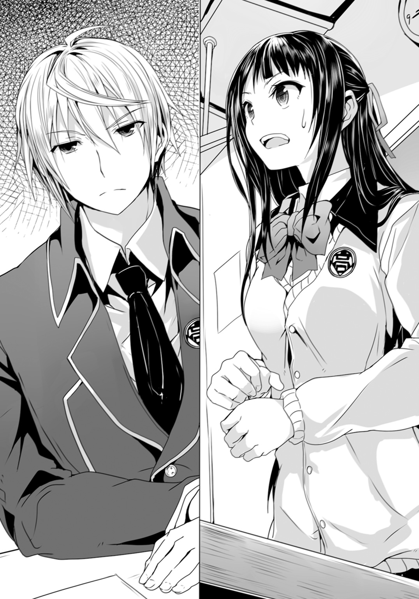
確かに彼は、紫織と会った事がある。一週間ばかり前に『収容所』でだ。
あの時とは随分と雰囲気が違っているので――恐らくは服装と髪型のせいだ――記憶の中の紫織と、今の紫織が合致していなかったのだ。
だが連志郎の側はともかく、どうして紫織が彼の顔を知っているのか？
〈ブリガンド〉の中にいる限り、連志郎が顔を見られる事はない筈だった。
となると――
（あの時――意識が戻っていたのか？）
連志郎は紫織の前で〈ブリガンド〉を解除している。
迂闊だった。気絶したままだと思っていたのだが――
「............」
改めて眼を向けると――紫織は、まだ連志郎の方を見ていた。
視線が合った事で、連志郎の側も紫織を覚えている事が――思い出した事が、伝わってしまったのだろう。彼女は口を引き結び、表情を強張らせていた。いっそ知らない振りをしていれば、紫織も勘違いだったかと、勝手に思い直してくれたかもしれないが......もう遅い。
（やはり、あの時、手を出したのが間違いだった――）
勿論、連志郎が〈ブリガンド〉を使って〈悪魔狩り〉をしているのは秘密だ。
紫織が喋れば色々と面倒な事になるが――恐らく彼女は黙っているだろう。連志郎と出会った時の事を語るなら、自分が〈悪魔憑き〉である事も認めねばならない。
どうして一度あの『収容所』に入った人間が、外の世界に出てこれたのかは分からないが、わざわざ自分は危険人物です――と周囲に主張する程、彼女も馬鹿ではあるまい。
（ともかく、今は知らぬ存ぜぬで通すのが無難か）
まだざわついている同級生達を無視して、連志郎は目を閉じる。
紫織は――やはり何も言ってこなかった。
ただ、促されるままに教室後方の空席に向かって歩いて座っただけだ。
ちなみにその席は、連志郎の右斜め後ろに位置する。
「............」
その後、担任教師が、幾つかの連絡事項を生徒達に伝えて、それで朝のホームルームは終了し――入れ替わる様にして一限目の教科を担当する教師が入ってくると、教室のざわめきも自然に収まっていった。
だが――
「............」
その後もしばらく、連志郎は自分の背中に注がれる紫織の視線を、感じ続けていた。
●
一限。二限。三限。四限。
どこか教室内の空気にぎこちないものを残しつつも、目立った問題もなく、午前中の授業を消化して――昼休み。
チャイムが鳴ると同時に、椅子を鳴らして立ち上がる音が聞こえた。振り返って見なくても分かる。音の方向からして間違いなく紫織だ。
何か話し掛けてくるだろうか？ 無視するか。知らぬ存ぜぬでかわすか。あるいは速攻で教室から逃げ出すか。どう対応したものか――と考えた連志郎だったが。
「若槻さん」
まるで機先を制するかの様に、紫織に声を掛けた者がいる。
綾である。
連志郎から見ると二列ばかり前の席に座っていた彼女は、連志郎の横を通り過ぎ、紫織の方へと近付いていく。その際に――連志郎の方を、綾は意味ありげに一瞥していた。
（また何か企んでいるのか......？）
さすがに無視する訳にもいかず、連志郎は綾と、そして紫織の方を振り返る。
綾は屈託のない笑顔を浮かべて、紫織に話し掛けているところだった。
「初めまして。私は相原綾。それから」
いきなり綾は連志郎の方を指差して言った。
「こっちは斯波連志郎くん」
「............」
連志郎が黙っていると――咄嗟に反応出来なかっただけだが――綾は数歩戻ってきて、彼の腕をとり、紫織の前に引っ張っていく。ここで無理に抵抗してもそれはそれで不自然なので、仕方なく、連志郎は彼女にされるがままになっていた。
「あの......」
紫織が、戸惑いの表情を浮かべている。
だが綾はむしろ相手のそんな反応を喜ぶかの様に、笑顔で首を傾げた。
「んん？ なに？」
「その......どうして、彼まで？」
「ああ。熱心に彼の事を見ていたから、気になっているのかと思ったのだよ？」
「あ、いや、その、それは......」
困った様子で眼を伏せる紫織。
「善は急げというし、紹介するなら早い方が良いだろう」
だが綾は、まるで気にした様子を見せず――恐らくは、敢えて、紫織の反応は無視して――言った。この学園最少最高権力者は、決して鈍感ではなく、むしろかなり観察眼は鋭い方だが......その上で敢えて、気付いていない振りをする事も多い。
「クラスメイトの顔と名前を知って損をする事はないよ。――ああ、斯波くん。可愛い子とお近付きになれる好機だぞ？ 逃げないように」
「馬鹿な。三次元になど興味はない」
眉を顰めて連志郎は言った。
「いつもながら堂々と言い切るな、君は」
少し呆れの滲む口調でそう言いつつも、綾は連志郎の腕に自分の腕を絡め、そこにぶら下がるような体勢で、彼の逃亡を封じている。
「私はこう見えても生徒会長なんだ。ついでにクラス委員も兼ねている。先生から直々に『事情のある子』の面倒を見るように言われていてね」
紫織の方を振り返って綾はそう言った。
「相原会長」
「なんだね斯波くん？」
「そういう事を言っても良いのか？」
前述の通り、紫織が〈悪魔憑き〉ではないか、という噂が学級中に――いや学校中に広まっているのは、綾も知っている。だからこそ昼休みまで、誰もが遠巻きにして、紫織に話し掛ける者はいなかった。皆――紫織にどう対するべきか、距離を測りかねている印象である。
そんな状況で『事情のある子の面倒を見てくれ』と『教師から言われた』などと口にするのは――さすがに無分別に過ぎるのではないか、と連志郎は思ったのである。
だが綾は、むしろ小首を傾げて連志郎を見上げる。
「隠し立てするよりよくないかい？」
「............」
「親しくしているように見せて、裏では猜疑心を抱いているなど気持ちの良い事ではないよ。お互いにね。若槻さん――私が君の世話をするのは理由があるからだ。それは最初に明かしておくよ。その上で、これから理由など必要のない友人関係になれれば幸いだし、その時は今の発言を謝罪しよう。友人に言う事ではないから」
はきはきと......いや、聞きようによってはずけずけと、遠慮のない言葉を綾は並べる。
いくら同級生とはいえ、初対面の相手にここまで踏み込んだ事を言って良いのか――周囲で先程から聞き耳を立てている生徒達は、そう思ったに違いない。本当に紫織が〈悪魔憑き〉だった場合、その逆鱗に触れて、破壊現象を誘発させかねない――そんな心配もあっただろう。
だが......
「......ありがとう」
意外にも紫織の反応は、綾の接し方に肯定的だった。
「そうやってはっきり言ってもらえた方が気楽。どんな話がされてるか分からないけど、私、入院してたの。それは本当だから、『事情』っていうのはそれの事かな」
紫織は再び、柔らかい笑顔を浮かべて、そう言った。
先程まで浮かべていた狼狽の色は、既にない。感情の切り替えが早いというより......表情を取り繕ったり、ある種の演技をする事に慣れている様な印象を、連志郎は受けた。
（随分と印象が違うな。当然と言えば当然だが）
連志郎は脳裏でそんな事を考える。
『収容所』で見た時の紫織とは、殆ど別人の様に見える。
だがあんな劣悪な環境下で普段通りに振る舞える人間などまずいない。あの時、どこか虚ろで疲れた表情を浮かべていた紫織と、現在、人懐っこい笑顔を浮かべている紫織と、どちらが本来の彼女であるのかまでは――それともどちらも本来の彼女とは違うのか――さすがに分からなかったが。
「ふむ。それは難儀な事だね。けれど、こうして復学出来たのなら、おめでとう。歓迎するよ。ようこそ、我が校へ」
「............」
綾が差し出した右手を、束の間、不思議そうに眺め――そして紫織は、改めて笑顔を見せながらこれを握った。
「ありがとう」
「どういたしまして。こう言ってはなんだが、私はそこそこ人望がある方だ。私が親しくなれば、みんなもじきに壁をなくすと思うよ。味方につけるなら私をお勧めするな」
これまた際どい物言いをする綾だが、やはり紫織は笑顔のまま頷いた。
「そうだね。味方になって、それから本当に友達になってくれると、嬉しいな」
「おっと。これは上手く返されてしまったか」
肩を竦める綾。
こういうやりとりは――いつの間にか相手を自分のペースに引きずり込んで親しくなるのは綾の得意技である。時に際どい発言をするのも、相手の意表を突く事で、まず警戒心を解くのが狙いなのかもしれない。通り一遍の綺麗事しか言わない人間に、胸襟を開く人間はいない。
そんな事を、連志郎が傍観者の立ち位置から考えていると――
「えっと、斯波くん？ 初めまして」
そう言いながら、紫織は連志郎に眼を向けてきた。
「......ああ」
一瞬、返事に迷ったが――連志郎はとりあえず曖昧に頷いてみせる。
だがその様子に何を見いだしたのか、綾が眼を興味深げに瞬かせながら、連志郎と紫織の顔を交互に覗き込んだ。
「やはり彼が気になるかな？」
「え？ あ......ど、どうかな」
さすがに、少し困った様な表情を浮かべる紫織。
「彼は賢い人だよ。この通り、見てくれも良い。中身はちょっと残念だが」
「失礼な」
と連志郎は抗議するが、綾は構わず笑いながら続けた。
「一言で言えば『駄目オタ』だな」
「だ、駄目オタ？」
「うん。ダメなオタクな事。先程の発言にもあっただろう？ 三次元に興味がないとか何とか。彼はアニメの世界にご執心なのさ。困ったものだよ」
「はぁ......」
紫織が眼を瞬かせて連志郎を見る。
「勿論、良いところもあるよ。駄目が十割ではないところが余計に惜しい。頭のてっぺんから爪先まで駄目人間の見本であれば、まだ諦めもつくというものだが――」
「随分な言われようだ」
「周囲からは『あれさえなければ』と嘆く声がよく聞かれる。主に女子生徒から」
連志郎の抗議の言葉を、またも無視して綾は続けた。
「見た目はむしろ私などよりも遙かに『切れ者生徒会長』といった感じなのだがね。実体は『切れ者生徒会長のパチモン』なんだと。まったくもって乙女心とは容赦ないものだね」
まるで、自分は乙女ではないとでも言うかの様な物言いである。
「一番容赦ないのは相原会長、君だと思うが」
「そうかな？」
と小首を傾げる綾。
言いたい放題の彼女だが――連志郎は別に腹を立ててはいない。
元々自分が周囲からどういう風に見られているかについては、自覚があったし、綾が連志郎を馬鹿にしている訳ではないのは分かっているからだ。もっとも、面と向かって罵倒され、侮辱されたとしても、連志郎は眉一つ動かさないだろうが。
「ついでに言えば、彼は生徒会書記でもある」
改めて連志郎を指差しながら綾は言った。
「なので、学校に慣れるまでは、私か斯波くんを頼るといいよ」
「待ってくれ相原会長。僕が何故――」
「斯波くんは、編入したてで心細い美少女に頼られるのが不服だと？」
「............」
連志郎は言葉に詰まった。
『収容所』での事を――特に〈ブリガンド〉の事を訊ねられると、色々面倒な事になる。出来れば紫織とは距離を置いておきたいところだ。まさか紫織が自分の事を〈悪魔憑き〉だと公表する事はないと思うが、失言してしまう事はあり得る。そこから芋づる式に〈ブリガンド〉の話が出てくると、連志郎としては困るのだ。
「そういえばキミは今朝、随分と重役めいた、優雅な登校だったね。んん？」
連志郎が黙っていると、駄目を押すかの様に綾は言ってきた。
どうやら彼女は早速、今朝手に入れた手札を使う事にしたらしい。
「私としては、ここでささやかな贖罪を期待してしまうのだが？」
「――分かった」
こうなっては連志郎の負けだ。それに〈ブリガンド〉の情報を秘匿する、という意味では紫織の傍にいた方が監視もし易いかもしれない。
「ありがとう、相原さん」
「綾で結構。私も紫織ちゃんと呼びたい。斯波くんの事は好きに呼びたまえ」
勝手にそんな事を許可している綾。
「いつもながら、何様かと思う事があるな。相原会長」
「無論、生徒会長様で、君の上司様だが？」
「............」
連志郎が憮然として黙り込むと――くすくすと紫織が笑った。
「それじゃ、綾。ありがとう。斯波くんも色々、よろしく」
「――よろしく」
仕方なく連志郎はそう社交辞令を返す。
ただ――
（......さて。どうしたものか）
笑顔の中にも、物問いたげな紫織の眼差しを受けながら――連志郎は脳裏で一番無難と思われる今後の対応を模索していた。
●
たとえ燦然と太陽の輝く真昼の街中にも、光の届かない場所はある。
たとえ喧噪溢れる都会の只中であろうとも、静寂の凝る場所はある。
車の通れぬ狭い路地裏であったり、不況で畳まれた店の中であったり、遮光硝子を締め切った車内であったり......人々のすぐ傍らにありながら、その眼が届く事のない、意識の空隙である。
その店も、そうした場所の一つだった。
汚れに曇った硝子越しに、陽光が遠慮がちに射し込むダーツ・バーの店内。既に営業を停止して久しいのか、ダーツ・マシンの多くは埃を被っており、棚にあるのは空き瓶ばかり、床には幾つかのスツールが転がったままだ。
なのに......そこには幾つもの人影があった。
何の集まりなのかは、一見しただけでは分からないだろう。
年齢も性別も――人種すらもまるで統一感がない。白人や黒人はごく少数、大半が黄色人種に見えるが、これは日本国内なので当然の偏りだろう。しかも彼等は三々五々と店内にたむろしているだけで、互いに親しく言葉を交わしたり、肩を抱き合って酒を酌み交わす、といった様子はない。別々に店を訪れた単独の客ばかり、といった雰囲気だ。
勿論――彼等に注文を聞いて回る店員の姿も、ない。
「〈佇む過剰〉が喰われた」
誰かが――ふと思い出したかの様に言う。
数人が顔を上げて、店の入り口の方へと視線を向ける。
そこに――入り口脇の壁に背中を預ける様にして、一人の男が立っていた。
長身瘦軀に、くたびれた印象の黒い外套を羽織っている。頰はこけており、眼元は落ち窪んでいて、まるで病人の様な顔立ちだが......何故か弱々しい印象はない。むしろその眼光は異様に精気を孕んで鋭く、見る者を心胆寒からしめる剣呑さを含んでいた。
死神――という言葉が最も端的に、その男の容姿を顕す言葉であろう。
だが店にいる者達は、その男に対して怯える様子はない。誰もが平然としていて――そもそも男の言葉を、自分には関係ないとばかりに、完全に無視したままの者もいる。カウンターにもたれて煙草をふかしていたり、ソファの上でスナック菓子を貪り喰っていたり、あるいは床に座って延々とトランプを並べていたり。
「喰われた？ 誰が？ 誰だ？」
「〈佇む過剰〉だってよ」
「誰が喰うんだよ、あんなゲテモン」
「た、頼まれたって、ゴ、ゴメン、だな」
「そお？ 意外にどっかの美食家かも～？ ぎゃははははは！」
少女のけたたましい笑い声が、店内で幾重にも反響する。
底抜けに明るく、不安や恐怖を微塵も含まない――だがどこか空疎で不自然な笑い方だった。
「こらこら。大きな声を出すんじゃないの。行儀悪いわよ」
店の奥から――この場においてはひどく今更というか、的外れな事を言う声が響いた。
こちらを発したのも少女だ。軽く涼やかな声音である。
勿論、恫喝や威嚇の響きなど微塵もない。
なのに――先の少女の笑い声はぴたりと止んだ。そればかりか気怠げに弛緩していた店内の空気が一瞬にして変質している。誰もが姿勢や行動はそのままだが、僅かに身構えたかの様な......そんな微かな緊張、いや警戒の気配が生まれていた。
奥のスツールに腰掛けているのは、制服姿の女子学生だった。
場違いな事、甚だしい――そんな印象である。
眼鏡を掛け、髪を三つ編みにし、制服も特に弄った様子はなく、装身具の類も皆無......今時の高校生にしては恐ろしく地味な装いである。手にしているのは詩集という事もあって、文学少女然とした雰囲気だ。こんな廃店舗よりも、図書館や、木漏れ日の降り注ぐ公園のベンチの方が遙かによく似合うだろう。
ただ――
「喰われたって言うと......相手は例の〈悪魔狩り〉？」
眼鏡の奥から、入り口の男に向けるその眼。
炯々と力強く光るその双眸は――どこか異様だった。儚げな少女の顔に、まるで猛獣の眼球をはめ込んだかの様な、不自然さである。眼鏡のお陰で、一見すると分かりづらいのだが。
「〈佇む過剰〉は〈悪魔狩り〉を探っていた」
男は頷きながら言った。
「勘づかれたのかもしれん。さすがにここの事までは知られていないだろうが」
「けっ――」
男の台詞に被せる様にして、硝子の砕ける音が弾けた。
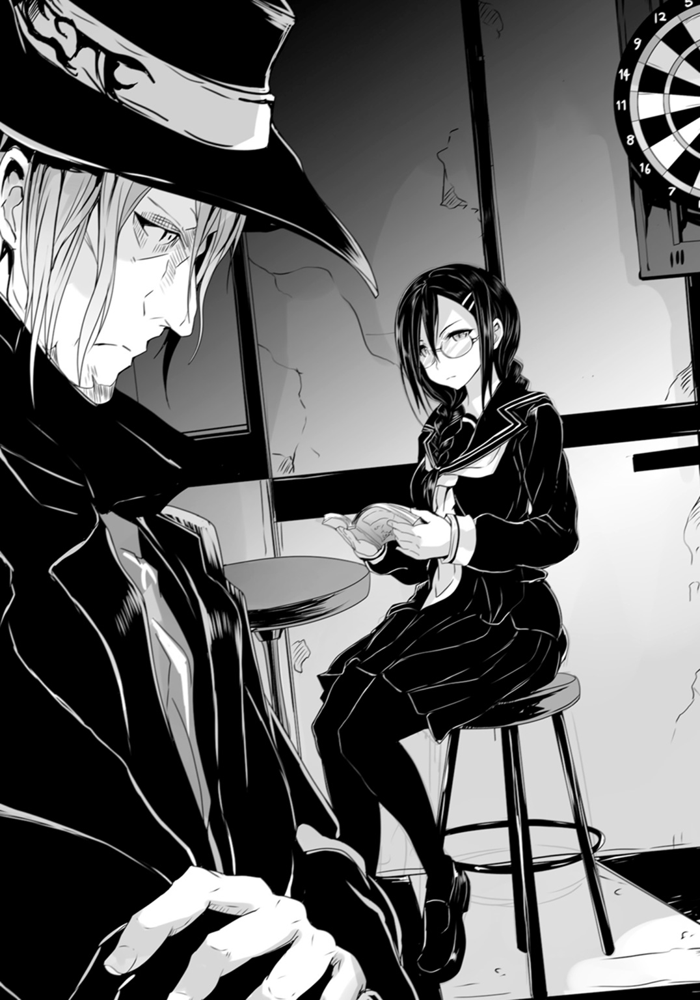
「くだらねえ、くだらねえ、まったくもってくだらねえ！ なぁにが『悪魔喰い』だか。ちょっとお行儀の悪いお仲間だろうによ。放っとけ、くだらねえ！」
カウンターにもたれかかって酒か何かを呑んでいた青年が言った。
同時に――
......みしり。り。り。
彼が身体を預けているカウンターが、啼いた。
まるで何か強大な力を、ゆっくりと掛けられているかの様に。いや。様にではなく実際にそこには尋常でない荷重が生じている様だった。青年を中心に細かな亀裂がカウンター全体に広がっていくのだ。
一体どんな体重の掛け方をすれば、こんな現象が生じるのか？
いや。そもそもそれは体重を掛けた結果か？ 見た限り青年は中肉中背で何百キロも体重がある様には見えない。だとすれば亀裂を生む力は一体どこから来ている？
「そういう訳にもいかない」
犬歯を剝き出しにして吠える青年を――外套の男は、昏い眼差しで見つめる。
「そろそろ無視出来なくなりつつある。少なくとも結果だけを見るならば、アレは俺達の同類などではない。天敵だ」
「むしろ共食いなんじゃね？」
先程、笑い声を上げていた少女が言った。
こちらは眼鏡の女子学生と見るからに対照的――露出度の高い私服姿な上に、髪は金に染めており、左右の手首にも耳にも、そして波打つ髪にも安物の装身具が大量につけられている。
「で、出会ったら、こ、殺す。そ、それで、じゅ、十分、だな」
ソファの上からくぐもった声で言うのは――スナック菓子を食べ続けていた男だ。
肥満というのもおこがましい程の、膨れきった身体なのだが、これでもまだ足りないとばかりにポテトチップスを口に放り込んでは、ペットボトルの炭酸飲料でこれを延々と流し込んでいる。飽食が趣味なのかもしれないが、とても味わっている様には見えず、むしろ何かの苦行をしているかの様にすら見えた。
「そだね？ 殺せば同じだよ？ どうして〈佇む過剰〉はそうしなかったんだか？」
と言うのは、床にトランプを並べ続けている少年だ。
彼の傍らにはランドセルがあった。小学生なのだろう。だが先程から顔も上げず、視線はトランプに向いたままである。自分よりも年上ばかりがいるこの場にあっても、まるで臆した様子がないのだ。勿論、話題の〈悪魔狩り〉に怯える様子もない。
いや。少年だけではない。
この場にいる他の者達も――誰一人として『悪魔喰い』を恐れてなどいなかった。
自分が次の犠牲者になるなどとは欠片も思っていないのか。あるいはそもそも『喰われる』事に対して恐怖を覚えないのか。それとも、もっと特殊な――常人には理解し難い、異常な心理の顕れなのか。
「そういえばさ？ 〈佇む過剰〉とつるんでいたのがいた様に思ったけど？」
少年がトランプをめくりながら言った。
「〈切り裂く無貌〉ね。いたいた、そういえばそんなのも」
「彼女はどうしたの？」
眼鏡の少女に問われて外套の男は首を振った。
「知らない。興味もない」
「い、いつも、みたいに、け、喧嘩別れ、したと思う、た、多分」
「......かもね」
眼鏡の少女もトランプの少年も、さして興味があった訳ではないらしい。それ以上は二人とも〈切り裂く無貌〉について訊ねる事はなかった。
「とりあえず情報交換としてはこんなところ？」
まとめる様に眼鏡の少女は一同を見回して尋ねる。
だが答える声はなく、頷いた者も数名だ。多くの者はそもそも会話に参加する事すらなく、聞いているのかいないのかすら、分からない。
「いつもながら、まとまりのあるお仲間で嬉しいわ」
苦笑を浮かべて眼鏡の少女が言う。
「前から思ってたんだけどね？ もっと格好いい名前にした方が良いんじゃないかな？ 〈フォスファー〉ってちょっと意味分かんないし？」
「『明けの明星』って意味よ。辞書くらい調べなさい、ちびっ子」
「小学生の科目に英語は無いんだよ？ 蒲生亜麻音サン？ いや――僕等の首領サマ？」
「本名で呼ぶのは、規則違反よ」
「僕も通名は『ちびっ子』じゃないけどね？」
「くだらねえ」
眼鏡の少女と小学生のやりとりを、カウンターの青年がそう評して吐き捨てる。
特に眼鏡の少女――蒲生亜麻音は気分を害した様子もなく、静かに微笑みながら再び手元の詩集に眼を落とす。それがこの『集会』終了の合図だったのか、店内にたむろしていた者達は、一人、また一人と立ち去っていく。
そんな中――
「〈悪魔狩り〉......」
詩集の文字を眼で追いながら亜麻音は呟いた。
「さて、次に狩られるのは、誰なのかしらね」
●
放課後――生徒会室。
連志郎は割り当てられた自分の席で淡々と頁をめくっていた。
文面を追う視線は冷徹ともいうべき鋭さで......その横顔は、智の探求に勤しむ研究者か、さもなくば生真面目に理想を追う求道者を思わせる。元々整っている顔立ちであるだけに、そうした姿は実に絵になった。
だが――
「あの......斯波くん」
躊躇いがちに声を掛けてきたのは、対面に座っている紫織だった。
連志郎が文面から眼を上げると、彼女は遠慮がちに彼の手元を指差してきた。
「いいの？」
「何が？」
「何がって............それって......どうなの？」
紫織が指差したのは、連志郎が眼を通していた雑誌である。
開かれた頁にはサーフボードに乗ってポーズを決める少女の絵が、見開きで描かれていた。『魔法少女ミルキィ・マリン』。誌面の上の彼女は、読者に輝かしい笑顔を向けていた。
要するに、月刊のアニメ雑誌である。
「どうとは？ 実に良い版権絵だと思う」
連志郎は至極真面目にそう答えた。
ちなみに、アニメ雑誌に掲載される、アニメスタジオから正式に提供されるイラストを版権絵と呼んだりする訳だが......それはさておき。
「いや。そうじゃなくて......」
「面白い組み合わせだろう？」
『生徒会長』という札を立てた席で、楽しげに笑うのは綾である。
だが連志郎は気にせず、再び、頁をめくり、誌面に眼を通し始めた。
「相原さん――」
「綾だ」
「ごめん、綾。でも良いの？ いくら書記だからって......」
そんな連志郎の頭越しに言葉を投げ合う感じで会話する紫織と綾。
「基本......書記の仕事は議事録のまとめくらいのものだし。会議に入らなければそれもない。仕事中以外は好きにして良い、という約束だからね」
「......そ、そうなの？」
「本来は没収対象なのだがね、どうせ没収したものはこの部屋に集まるだけだし」
「はぁ......」
「『Ｚ美形』だの『パチモン生徒会長』だの、よく言ったものじゃないかな。黙っていれば女子の方から寄ってきそうなものなのに」
「――相原会長」
連志郎は誌面から顔を上げて言った。
「あまりその様に侮蔑的な綽名を繰り返すのは人権侵害だと思うが」
「ちなみに『Ｚ美形』のＺは『残念』の略だそうだよ」
綾はさらっと連志郎の抗議を無視して言った。
「皆、略すのが好きだな。かくいうこの私もそのうち略称になるのかもしれない。セイトカイチョウだから、Ｓ長？ 据わりが悪いな。妙な趣味がある様に聞こえるのも良くない」
どうも本気で略称を考えるつもりなのか、綾は立ち上がると、ホワイトボードに『Ｓ長』と書いて首を傾げている。紫織の方はといえば、綾のペースに巻き込まれて圧倒されているのか、曖昧な笑顔を浮かべているだけだった。
紫織がこの場にいるのは、綾が誘ったからだ。
編入してきたばかりの紫織は、当然ながら未だ部活にも委員会にも所属していない。放課後は完全に自由時間だ。普通に帰宅しようとしていた彼女に綾が『色々と案内するから』と声を掛けたのである。
「............」
紫織は、何か言いたげな様子で連志郎を見つめている。
とりあえず気付かない振りをしている連志郎だが、いつまでもこのままという訳にもいかないだろう。彼女が迂闊な事を口走る可能性もある。
（適当な機会を見つけて言い含めるか？ しかし......）
その為には、二人だけにならねばなるまい。
そんな事を連志郎が考えていると――
「そもそも斯波くんと紫織ちゃんはどういう関係なのかな？」
綾が、いきなり話の矛先を変えてきた。
「そんなに熱っぽく見つめ合っちゃうのを見ると、ただならぬ関係なのではないかと邪推したくなるのだが――んん？」
『――――!?』
ざわり――と生徒会室の空気が粟立った。
それぞれの場所でそれぞれの仕事をしていた役員達が、一斉に動きを止めて連志郎達の方へ視線を送ってくる。生徒会きっての変人が、話題の転校生と『ただならぬ関係』かもしれない――そんな風に言われれば、確かに気にもなるだろう。
連志郎は全く平気だったが、もう一人の当事者である紫織は、そうではなかったらしく。
「ど、どういうって！」
一瞬、呆気に取られた彼女は、しかしすぐさま真っ赤になって声を上ずらせる。
「紫織ちゃんが斯波くんを見る目には並々ならぬものを感じるんだよね。転校生と在校生にしてはおかしくないかな？」
「いや......それは......」
「少なくとも初対面ではなさそうだ。教室でも大きな声を上げたよね？」
「そう......だけど......」
「あれは、知っている顔を見た時の反応だと思うなー」
動揺してろくに言葉が継げない紫織を、綾は飄々とした口調で追い詰めていく。
生徒会室の各所で役員達も耳をそばだてている様で、多くの者はそれぞれの作業を再開していたが、ちらりちらりと――紫織の方に興味ありげな視線を送っているのが見えた。
「だからそれは......」
紫織は額に汗を浮かべて視線を右往左往させている。『図星をつかれて動揺していますよ』と言わんばかりだった。色々とまずい。このままでは余計な事を口走りかねない。
連志郎は小さく溜息をつき、顔を上げた。
「この間、ちょっと」
部屋中の視線が――紫織のものも含めて――連志郎に集中する。
だが彼は、臆せず予め考えておいた『シナリオ』を、すらすらと口にしていた。
「彼女が道に迷っていたので、案内をした。引っ越してきたばかりの様だったから、ね」
最後の部分で、同意を求める様に力を込めて言い――連志郎は紫織の眼を見る。
余程に察しが悪い相手でもない限り、これで話を合わせてくる筈だ。
「ふぅ～ん？ そうなのかい？」
「当人がそうだと言ってる。彼女にも確認してみればいい」
顔を覗き込んでくる綾を、真正面から見返して連志郎は言った。
「あ......ええ、そう、そうなの」
紫織は頷きながらそう言った。まだ動揺しているせいか、微妙に白々しくは見えたが、それ以上をこの場で紫織に望むのも、無理というものだろう。
「んん～？」
綾が、探る様な視線を連志郎と紫織の間で往復させる。だが、これ以上ここで問い詰めても得られるものはないと判断したのか、肩を竦めて席に座り直した。
「そうか。まぁ、今はそれで納得しておこう」
綾が引いた為に、この話題は終わり、と判断したのか他の役員達も再び自分の仕事を始めている。それでも紫織は、まだ居心地悪そうにしていたが――
「――ふむ」
丁度、良いところで下校時刻を告げる鐘の音が鳴ってくれた。
「今日はこれまでだね、諸君。名残惜しいがまた明日、元気な顔を見せてくれ。紫織ちゃんと斯波くんは、明日までにもう少しマシな言い訳を考えてくるように」
「う、うん。......ふぇっ!?」
「では、解散！ 今日は生活指導の小俣先生が、駅前を中心に見回りをするという情報もある――寄り道はほどほどにして帰るように！」
綾の号令と共に、役員達は仕事の手を止めて帰り支度に入る。
彼等を横目に、連志郎は広げていたアニメ雑誌を閉じて鞄に滑り込ませると――
「では――お先に」
そのまま軽く挨拶をして、真っ先に生徒会室を出た。
●
独り下校中の路上で――紫織は溜息をついた。
「............疲れた......」
それなりの覚悟はして臨んだ編入初日であったが、予想外の方向にバタバタと振り回された一日になってしまった。
自分が〈悪魔憑き〉だったという噂が流れている事は想像出来たので、いわゆる『ぼっち』の状態になる事を予想していたのだが......斯波連志郎と相原綾のお陰で、他の者の視線を気にする余裕すら、なかった。
特に相原綾は、噂を知った上で積極的に紫織に近付いてきた。
彼女は――善人なのだろう、多分。
「かなり強烈だったけども......」
綾の顔を思い出して呟く紫織。
勿論、綾が紫織に声を掛けてきたのは、学級委員かつ生徒会会長という肩書き故の事だったのかもしれないが、それを加味しても、世話を焼いてくれた事には感謝してしかるべきだろう。
社交辞令や職務の故ではなく、本当に友達になれたら良いな――と素直に思える。なれたらなれたで振り回されそうだが、それもまた楽しいだろう。少なくとも紫織は明日も学校に通おうという気になった。
「......本当、私には分不相応かもしれないけれど」
ふと表情を自嘲の形に歪めて紫織は言った。
そして――
「......斯波......連志郎......」
綾曰く――『駄目オタ』であり、他の生徒から『Ｚ美形』だとか『パチモン生徒会長』などと評されているという少年。生徒会書記でありながら、今日は何の仕事をするでもなく、放課後はただひたすらアニメ雑誌を読みふけっていた。
確かに端正な顔立ちをしているが、その言動には愛想が欠けていて、常に仏頂面――どうにもその感情が読みづらい。紫織は彼の笑顔というものが想像出来なかった。
要するに変人の類だ。
そして――あの夜、鋼鉄の巨人騎士に乗っていた少年。
同一人物という確証はないが、背格好はそっくりだし、横顔も記憶を思い返す限り、全く同じだ。これで別人であったりしたら、生き別れの双子の存在を疑わねばならない程に。
「............」
彼と再会したのは単なる偶然か。それとも誰かの意図した事なのか。
細かく問い詰めようとも思ったのだが――そうなると紫織の〈悪魔憑き〉としての経歴をも口に出さねばならない事になる。連志郎と二人だけの時以外には、それは難しいだろう。噂で流れている程度の話と、本人が自ら認めた話とでは、周囲への影響がまるで違う。
そんな事を考えていると――
「......斯波くん？」
ふと、紫織は交差点の向こうに、見覚えのある人物を見つけた。
連志郎だ。右手に鞄を提げ、左手に本屋の袋を抱えて歩いていくのが見えた。
「......あっちは......」
ふと――紫織は脳裏に今朝方、登校前に見た、この付近の地図を思い出す。
連志郎が向かっているのは、最寄りの駅や商店街とは逆の方向だ。住宅街からも外れて、人通りの少ない山の手の方へと向かっている。
「............」
どうせ一人暮らしである。帰りが遅くなっても文句を言う者はいない。
「綾も『寄り道はほどほどに』って言っていたし」
逆に言えば......ほどほどならば良い、という事だ。
そんな言い訳を自分の中ででっち上げると――紫織は連志郎のあとを追い始めた。
●
風景というものは、気が付くと一変している事が多い。
何の変哲もない街中であれば、尚更だ。同じ様な景色に飽いて注意を怠ると、緩やかな変化の累積に気付かなくなる。電車や自動車に乗っている場合が顕著だが――徒歩でも、しばしばこういう事は起こる。
例えば、誰かの背中を注視して追い続けている場合などは。
「............！」
木々の間に響く鴉の鳴き声で、紫織は我に返った。
風を受けて、がさがさと密に生えた枝葉の鳴る音も聞こえてくる。代わりに道を行き交う自動車の音は、すっかり聞こえなくなっていた。
紫織は足を止めて、眼の前の建物を見上げた。
いや。正しくは建物ではない。彼女の視界の殆どを占めているのは、左右に広がる壁と、その真ん中に設けられた鉄柵状の門扉である。その隙間からじっと眼を凝らすと、生え並ぶ木々の向こう側に、古めかしい造りの洋館が建っているのが見えた。
夕暮れ時の――逢魔が刻の、気怠い光を背に受けて浮かび上がるその輪郭は、そのままホラー映画か推理ドラマの舞台になっていてもおかしくない様な、独特の荘厳さを漂わせていた。
「ここが......斯波くんの家？」
改めて見ても、既に連志郎の姿はない。
少し眼を離して周囲を眺めていた隙に、見失ってしまった。
とはいえ、周囲には他に建物は見当たらないし、彼が入っていったのはほぼ間違いあるまい。
いや......そもそもこの高台全体が、洋館の敷地になっている様にしか見えない。あるいは先程から紫織が歩いてきた道も、舗装こそされているが、法的には私道なのかもしれなかった。
「............」
門柱に表札は出ていない。だが、インターホンは取り付けられていた。
門の造りからすれば、そこだけ浮いているというか、半端なく後付け感が漂っていて、ボタンを押すのも躊躇われる程である。いざ押してみて何かの勘違いだった――連志郎の家ではなかった、となると、途方もなく気まずい。いや。そもそも連志郎が出てきたとしても、一体、自分は何と言えば良いのか。
転校初日で同級生のあとをつけて家まで来てしまうなど、普通ではないだろう。
「............」
紫織は改めて周囲を見回した。
出来れば周辺の住人にでも訊ねて、事前情報を仕入れておくべきだろう。
とはいえ、周囲に他に民家の類は見えない。ここは一度、来た道を戻るべきか――そう紫織が考えていると、道を一人の女性がこっちに向かって歩いてくるのが見えた。服装は買い物帰りの主婦といった様子で、実に平凡な印象だ。
丁度良い。紫織はこの洋館の事を訊ねてみる事にした。
「あの......すみませ......」
声を掛けようとしたところで、紫織は――ふと違和感を覚えた。
女性は、俯き加減で歩いている為、その顔立ちも、表情も、よくは見えない。格好は前述の通り特別なものではないが......その歩き方が、妙だった。ふらりふらりと酔っ払っているかの様に右へ左へと蛇行している。
紫織の頭の中で、けたたましく警鐘が鳴った。
思わずあとずさる紫織。女性は変わらずふらふらと歩いてくる。
そして――
「............う」
短くその口から漏れたのは、呻きか喘ぎか。
同時に女性の肩が跳ねる。何かの発作の様にそれはがくがくと痙攣に繫がっていき、女性は激しく身体を震わせながら――しかし、紫織に向かって歩いてくるのをやめない。
「う......うあ......あ......ああ......」
女性が手提げ袋に右手を入れて――一本の包丁を取り出した。
珍しくも何ともない、今時、百円ショップにさえ売っている様な......凶器。
「......!?」
反射的に身構える紫織。
だが女性は別に紫織の方を見るでもなく、激しく痙攣しつつも、どこか慣れを感じさせる素早い――何の躊躇も示さない仕草で、自分の左手首に包丁を突き刺した。
左右に包丁をこじると、手首からだらだらと尋常でない量の血がこぼれ落ち、その足元に血溜まりを作っていく。夕暮れの朱い光が地面に刻む彼女自身の影に、血が注ぎ込まれ、泥の様に湿った地面が、ぶくりぶくりと泡立つのを呆然と見つめながら、紫織は――
（――泡立つ？）
いくら何でもそんな量が、数秒で出血するだろうか？
いや。そもそも何故泡立つ？ 加熱したり化学反応したりするものなど、何も......
「あああああああいいいいいいいいいいえええええええええええええ」
女性が――吼える。
次の瞬間、彼女の足元から噴き上がった『影』が――まるで獲物に食らい付く獣の如く、己の主を呑み込んだ。
「............」
紫織は思わず更に数歩あとずさり、そこで平衡を崩して転倒した。
尻を強く舗装道路に打ち付けたが、今は痛がっている場合ではなく、そもそも痛みも殆ど感じなかった。恐らくは、危機的状況に際して大量に分泌されているアドレナリンのせいなのだろう――どこか心の片隅で、紫織は他人事の様にそんな事を思った。
脈拍と血圧が上がっているのが自分でも分かる。
自分の心臓の音が無意味に大きく聞こえた。
これは、アレ、だ。本能的な感覚で紫織はそう悟っていた。
「............〈悪魔憑き〉の......」
黒い影は、瞬く間に異形の巨人へと変化していた。
ついさっきまでは確かに女性の足元に刻まれた平面でしかなかったそれは、しかし、今や三次元的な厚みを得て、質量を伴う存在感と共に、紫織の眼の前に立ちはだかっている。
身の丈は六メートル......あるいはもっとか。
細身だが、妙な重量感を伴うのは、胴体部分と腕の部分の不均衡さ故か。
まるで子供の身体に肩から先だけ屈強な男の腕を取り付けたかの様で、上半身がやたら重そうに見える。肩は膨れあがり、腕は太く、五指に生えた長い爪は、直立した状態でも地面に触れていた。
痙攣していた女性の姿はもうその内に埋没しきって見えない。
「......これが」
白い画用紙に墨汁を垂らし続ければ、いつか全てが黒に染まる。
悪魔に取り憑かれた者は、いずれ身も心も悪魔になるという。
それは、具体的にどういう事なのか？ ――その答えが、今、紫織の眼の前にあった。
――しゃり。しゃり。しゃり。
異次元の空気に満たされた黄昏の風景の中――場違いな程に涼やかな音が響く。
それは異形の怪物が、指先を擦り合わせている音だった。長く伸びた爪は、それらが全て刃物そのものだ。指を擦り合わせれば刃と刃が擦れ合って音を立てる。そのまま何かを握れば、それだけで対象を幾つもの細片に切り刻んでしまいそうだった。
いや――実際にそれは、そうする為のものなのだろう。
五指を開いた右の掌が、地面にへたり込んでいる紫織に向けて近付いてくる。
立たねば。逃げねば。
そう思うが、膝にも腰にも力が入らない。
『収容所』では恐ろしくも何ともなかった『死』そのものが近付いてくるのを見て、紫織は自分が恐怖に総毛立っているのに気付いた。
何を今更。死んで誰かが悲しむ命でもないだろうに。
心の片隅で自分が自分をあざ笑っている。
だが――
「あ......」
怪物の手が迫るのを呆然と見つめる紫織。
そんな彼女を、開閉する五本の刃物が、容赦なく六つの肉片へと切断する――
不協和音。
――事はなかった。
軽やかに、刃の触れ合う音を立てていた怪物の手が、止まる。
獲物を前にした昆虫の顎の様に、しゃりしゃりと、忙しなく開閉する音を立てながら......しかしその爪の尖端は、紫織に届く直前で止まっていた。
「............！」
洋館とその敷地を囲む塀――その向こう側から伸びてきた鋼鉄の腕が、怪物の手首を横から摑んで止めていたからだった。
●
実のところ――それは初めての経験だった。
大抵の場合、連志郎は〈ブリガンド〉を現場で装着する。
その使用時間には限界があり、暴走の危険をはらむ為、最初からあの『悪魔の殻』を着て出る様な真似はしない。だからこそ、何かあった場合、迅速に現場に〈ブリガンド〉を届ける為に、それ自身にも高速移動用の『飛行形態』が設定されているのだ。転送機構も用意されているが、仕様には星辰だの地脈だの、諸々の条件が影響する為、『扉から扉へ』という訳にはいかない。
だが、今回は特別だ。まさか自分の屋敷のすぐ前で〈悪魔憑き〉と戦う事になろうとは。
「――ひょっとしてつけられたか？」
自分を追尾してくる視線には、気付いていた。
だがてっきり連志郎はそれが紫織のものだと思っていたのだ。まさかつけてくる相手が二人――二組、それも別口で存在するとは考えていなかった。
「もしくは、あの『収容所』の夜から......？」
怪物の――〈魔神態〉の手首を摑みながら連志郎は相手を見据える。
あの夜、『収容所』から脱走した患者か。あるいは、あの連志郎が斃した〈悪魔憑き〉の仲間で――あの日から連志郎を追い掛けていたのか。
いずれにせよ......
「のこのこ僕の前に出てきた以上――もう還れないと思え」
装甲越しに伝わるとも思えないが、連志郎はそう告げた。
「僕の視界に入った悪魔共は鏖殺だ。例外はない。喰われる恐怖に、啼くがいい」
言葉とは裏腹にひどく淡々と――表情すら微塵も揺らがさずに連志郎はそう言った。
●
轟音が、黄昏の風景を揺るがした。
薙ぎ倒された怪物――〈悪魔憑き〉の変化した巨人が、舗装道路を深々と抉っていた。腕を摑まれた怪物は、動く左手で巨人騎士を攻撃しようとしたのだが――先手を打った巨人騎士に、投げ飛ばされたのである。
「......ッ！」
紫織は転がりながら、二体の巨人が争う場から離れた。
怖い。まだ膝も腰も力が入らずに立てない。だがそれでも身体は動いた。
（私は......死ぬ事を恐れてる？）
あるいはそれは、あの漆黒と白銀の巨人騎士を見たからか。
あの日――あの『収容所』の檻から紫織を連れ出してくれた『彼』を。
その姿はやはり異形とはいえ、紫織の中に、絶望を砕く象徴として焼き付いているのかもしれなかった。希望、と端的に呼び表すには、あまりに攻撃的で禍々しい姿であったが。
「............」
塀に身を寄せながら紫織は喘ぐ。
巨人騎士は塀を越えて道路に降り立った。対して地にめり込んでいた怪物は、巨体とは思えない程の軽やかさで跳ね起きると、巨人騎士に襲いかかる。
巨人騎士に迫る刃の五指。
勿論、相手も鋼の装甲、ただの刃で斬れる道理はない――のだが。
鋼鉄の爪が、鋼鉄の甲冑をこすって火花を上げる。
「――！」
鎧騎士の手甲に深々と疵痕が刻まれているのを見て、紫織は悲鳴を上げそうになった。
違う。あれは単に鋼鉄と鋼鉄のぶつかり合いではない。
どういう理屈か分からないが、あの爪は、鋼鉄をも切り裂けるのだ。さすがに一撃でという訳にはいかない様だが――少なくとも巨人騎士の装甲は、絶対の防御ではない。
恐らく二度か三度、同じ箇所に斬り付ければ爪は『中身』に届く。
中にいるであろう――あの少年に。
（斯波くん......！）
いても立ってもいられない気持ちになる紫織。
彼女は背中で塀をこする様にして何とか立ち上がった。
そして――
「――失礼」
そんな一言と共に腕を摑まれて凍り付く紫織。
「......!?」
いつの間にそこに来ていたのか。
紫織の腕を摑んだまま、彼女の前に回り込んできたのは......エプロンドレスに身を包んだ長身の少女だった。濃紺のワンピースに、フリル付きの白いエプロン、金髪に包まれた頭部にもまたフリル付きの白い髪留め。それはいわゆる――
「メイドさん......？」
――の格好だった。
あまりにも非日常的なその衣装は、果たしてこの場に相応しいのか否か。立て続けに予想もしていなかった事が起きて、見た事もない相手と出会って、紫織の理解力は既に限界だ。
そして次の瞬間――
「申し訳ございませんが、これも主の言いつけですので」
白い手袋に包まれた少女の拳が、鳩尾に食い込む。
一瞬で、紫織は意識を刈り取られていた。
●
幾筋もの傷を刻みつけられ、〈ブリガンド〉の装甲が鋼の悲鳴を上げていた。
「......ふむ」
〈ブリガンド〉の防御は見た目通りのものではない。装甲表面を循環する呪紋が祈禱車効果によって多重の結界を張っている。物質的な防御力とは別に、この結界が熱や衝撃といった様々な威力を拡散させる為、たとえ二十ミリ機関砲の徹甲用弾でも〈ブリガンド〉の装甲を傷つける事は出来ない。
なのに、あの〈魔神態〉の爪は確実に装甲を削ってくる。
つまりそれは、結界を相殺し得るだけの何かを、あの爪は備えているという事だ。
「――まずいな」
連志郎は呟いた。
何度目か――拳と爪のやりとりを経て、連志郎は〈魔神態〉との距離をとる。
〈魔神態〉は追ってこなかった。接近戦における自分の有利を未だ理解していないのか、あるいは別の理由があるのか。
「......やっと行ってくれたか」
水晶眼の拡張視界で背後を確認する連志郎。
気を失った紫織を抱えて屋敷に戻るメイド娘の姿が見えた。
生身の少女に足元をうろちょろされては気が散る。逆に言えば、これで連志郎は心置きなく戦えるという事である。
背後に注意を向けたのは、わずかに一瞬。彼はすぐに意識を〈魔神態〉に戻した。
「――!?」
〈魔神態〉の体勢がそれまでと一変していた。
右腕を真っ直ぐに伸ばし、左腕でこれを支えている。
それはまるで連志郎自身が――〈ブリガンド〉が使う〈コベット・ファング〉にも似た構えである。少なくとも相手を摑む、あるいは相手に斬り付ける、その為の構えではない。
次の瞬間――
ヒアアアッ!!
それは咆吼か。
〈魔神態〉から甲高い声が迸る。同時に何かを摘まむかの様にすぼめられた右手が――集められた五本の爪が〈魔神態〉から撃ち出されていた。
「――！」
撃ち出された爪は、それぞれ螺旋を描きながら――つまりは五本一組で穿孔機の様な動きを示しながら〈ブリガンド〉に向けて飛んでくる。咄嗟にこれをかわそうとした連志郎だが、次の瞬間、五本の爪は多弾頭ミサイルの如く分離して、〈ブリガンド〉を囲む様な軌道をとっていた。
上下左右どちらに逃げても、最低一本は突き刺さる。
連志郎はむしろ前に出て――〈ブリガンド〉の拳でこれを迎撃していた。
射出された爪を、空中にて叩く、鋼鉄の拳。
「――！」
弾かれた数本は空中で回転......しかし急に軌道を変えて〈ブリガンド〉に斬り付けていた。
持ち手のいない刃物など、突き刺さる事はあっても、まず斬れる事はない。ない筈なのだが......二本の爪が〈ブリガンド〉の腕を、斬り落としていた。
がらん――と音を立てて、鋼鉄の左腕が地面に転がる。
見れば五本の爪は、いきなり軌道を変更、時間を巻き戻すかの様に後進し、本体へと戻っていくのが見えた。同時に――その指と爪を繫ぐ、細い糸の様な何かも。
「......なるほど」
細かい理屈は分からないが、〈魔神態〉はあの糸で爪を操っているのだ。
刃物は押し込むか、引き込むかで、対象を切断するが......要するに爪が触れた瞬間に、高速であの糸を振動させながら巻き取るのだろう。その結果、引き切るのと同時に、刃の上に高周波ナイフの様な効果を発生させているのである。
「切れ味は大したものだ」
装甲の断面に意識を向けながら連志郎は呟く。
〈ブリガンド〉の結界の防御力を――処理能力を大幅に超えた切断能力を、あの〈魔神態〉は発揮している。先程、直接斬り付けてきていた時よりも切れ味が上がっている事を思えば、これは全身の動きを止めて集中する事で発揮される、いわば『切り札』か。
ヒアアアッ!!
再び上げたそれは勝利の宣言か。
だが――
「こうかな？」
次の瞬間、〈ブリガンド〉の左腕が突如として浮き上がり、大きく弧を描いて〈魔神態〉を横から殴打していた。
恐らく〈魔神態〉は〈ブリガンド〉に意識を集中するあまりに見ていなかったのだろう――斬り飛ばされた左腕が本体と、光る鎖で繫がっている事を。
斬り捨てた腕などに注意する必要はないと思っていたのだろうが――それはしかし、身体を旋回させる〈ブリガンド〉の動きによって、真横から襲いかかる一撃に変化していた。
「切ってお終い――と考えるから、周囲への警戒がおろそかになる」
今の一撃は咄嗟に相手の技を真似た様なものである。威力は不十分でも相手の意表は突けた様だった。
〈魔神態〉は大きく姿勢を崩している。その隙を見逃さずに〈ブリガンド〉は地を蹴った。
鋼鉄の巨体が、空気を抉り抜く勢いで突進。
最後の一歩で殊更に強く地を踏み――跳躍。一個の砲弾と化した〈ブリガンド〉は膝蹴りの体勢で〈魔神態〉に激突し、轟音と共にこれを地に這わせていた。
再び舗装道路にめり込む〈魔神態〉。
間髪容れずに連志郎は〈魔神態〉の両腕を、両足で踏んで固定する。
〈ブリガンド〉の右手が掌底打ちの形をとり、足元に向けられた右腕の装甲が大きく展開したのは次の瞬間だった。
悪魔喰らいの一撃――〈コベット・ファング〉の零距離射撃。
地に倒れた〈魔神態〉を見下ろしながら、連志郎は肘掛けから起き上がってきた操縦桿を握る。制御術式が右手に集まっていき、連志郎の意識が暴走する『力』に揺らぎ始めるが、彼は歯を食いしばってこれに耐えた。
そして――
ヒアアッ!!
次の瞬間、〈魔神態〉の胸元からいきなり飛び出す巨大な――『剣』。
それは逃げる間も許さず〈ブリガンド〉の胸を刺し貫いていた。恐らくは奥の手の更に奥、最後の切り札として隠していたのだろう。予想外の攻撃で、しかも超近接状態――咄嗟に逃れられないのは〈ブリガンド〉も同じだった、という事だ。
「............」
ぐらりと上半身を傾ける〈ブリガンド〉。
だが......鋼鉄の騎士は倒れる事なく踏みとどまっていた。
「......惜しかったな」
〈ブリガンド〉の胸部装甲殻の中で連志郎は言った。
〈魔神態〉の刃は〈ブリガンド〉を貫通して背後まで抜けている。確かに切れ味は大したものである。〈コベット・ファング〉の為に制御術式が偏り、結界の防御効果が半減していた事を加味しても――だ。
しかし相手に触れねば、刃は意味がない。低い音を立てて振動する巨大な刃は、わずかに頭を傾けた連志郎の首筋に、浅い切り傷を創るだけに留まっていた。
「あと、五センチ右なら僕の延髄を貫けていた――いや僕の首を刎ねられたものを」
音を立てて鎖が巻き取られ、左腕が胴体に接合すると、次の瞬間には斬り落とされていた事など忘れ果てたかの様に、その鋼鉄の指が胴体を貫く〈魔神態〉の刃を摑んだ。
「さあ――地獄に還る時間だぞ」
〈ブリガンド〉の各部が展開し、伸びた右腕が〈魔神態〉の顔面を摑む。
もう今度こそ〈魔神態〉は身動き一つ出来ない状態だ。
そして――
「〈コベット・ファング〉」
むしろ囁きにも近い静かな口調で、連志郎はそう宣言した。
彼の言葉と同時に――詠唱と同時に術式が発動。
轟音と閃光を伴い放たれた『力』が接触状態から〈魔神態〉の上半身を吹き飛ばす。
ごそりと身体を抉られた〈悪魔憑き〉のなれの果ては、大きく痙攣し――次の瞬間、数万年の歳月に晒されたかの如く、砕け、砕けて、遂には白い粒となって地面に流れ落ちていった。
足元を見れば――白い砂の山に埋もれる様にして、涙と涎を垂らす中年女性の姿が見えた。
憑いていた悪魔をもぎ取られた今、彼女もまた戦闘能力は皆無の状態になっている筈だ。
「さて――それよりも問題は」
〈ブリガンド〉を解除しながら連志郎は屋敷の方を振り返る。
若槻紫織。
単に『斃せば終わり』の〈悪魔憑き〉共と異なり、彼女の存在の方が、今の連志郎には遙かに頭の痛い問題だった。
第三章
靴箱で下履きと上履きを履き替えていると、つい欠伸が漏れた。
「............」
途中で強引にこれを嚙み殺して、下履きを靴箱に入れると、再び欠伸が出ない様に顎の辺りを引き締めながら、教室へと向かう。
考えてみれば、欠伸など久し振りだ。
『入院』中は朝も昼も関係ない様な――時間感覚に乏しい生活をしていたし、睡眠不足にもなりようがなかった。むしろ紫織の中の『悪魔』が暴れ出す度に、鎮静効果のある瓦斯を部屋に注入されていた為、寝ている時間の方が多かったくらいである。
「やあ、おはよう。紫織ちゃん」
机の上に鞄を置いた紫織に――真っ先にそう声を掛けてきたのは綾だった。
彼女の席は前の方なのだが、わざわざ近寄ってきてくれた。
他の生徒達の間には、いまだ若干、紫織を敬遠するかの様な空気が漂っているが......初日よりは少し薄れている様に思えるのは、紫織の単なる思い込みか、それとも、こうやって積極的に関わってきてくれる綾のお陰か。
「今日も可愛いね」
「......そうかな」
苦笑を浮かべて紫織は言う。
自分が綺麗だとか可愛いだとか思った事はない。
どれだけ色が薄かろうとも、純白の横に置かれた灰色が『白い』と評される事はなかろう。物心ついた頃からやたらに出来の良い――全方位に死角や欠点というもののない姉と比較されてきた紫織は、自分の事を肯定的に評価する事が苦手だった。
「おはよう。相原さ――もとい、綾」
「よろしい」
綾は腕を組み得意げな顔で頷いた。
「ついでに『綾こそ今日も可愛いよ』と添えれば挨拶としては完璧だな」
ひょっとして、会う相手全員にそう挨拶する事を求めているのだろうか、この生徒会長は。
「んん？ 随分と寝ぼけ眼だな」
綾は小首を傾げて、紫織の顔を覗き込んできた。
「夜更かしはお肌によくないぞ？ 何か気になる深夜番組でもあったかな？ 誰かさんの様に深夜アニメ鑑賞に勤しんでいたとか？ 文明の利器があるのだから録画をしなさい、録画を」
「あはは......」
とりあえず紫織は笑ってみせた。
眠気のせいで思考の回転が鈍りがちな紫織と違って、綾は今日も朝から全力運転中だ。決して早口という訳ではないのだが、ぽんぽんと、呆れる程の軽快さで言葉が飛び出してくる。
（アニメといえば......）
ふと顔を上げると、連志郎と眼が合った。
彼は、どうやら綾の『誰かさんの様に深夜アニメ鑑賞云々』という言葉に反応して、こちらを振り返ってきたらしい。ここで何も言わないのも不自然だろう。
「えっと......おはよう。斯波くん」
「......ああ。おはよう」
何となくぎこちない挨拶になってしまうのは仕方あるまい。
彼の顔がどうにも見づらくて、思わず紫織は眼を伏せた......のだが。
「んん～？」
綾が身体を折り曲げる様にして、また顔を覗き込んでくる。
悪戯な猫を思わせる両眼が――きらきらと期待に輝きながら、紫織を見つめていた。
「な......なに？ どうしたの、あいは......じゃなくて綾？」
「いや。なんというか空気がね？」
と綾は愉しげに言った。
「目と目で通じ合うとでもいうのかね？」
「......な......何の話？」
努めて平静を装って応じる紫織だが、上手くいったかどうかの自信はない。
対して連志郎は平然としていた。むしろ挨拶が終わってもう用は済んだとばかりに再び彼は前を向いて机の上に広げた何かを読み始めていた。多分、アニメ雑誌だろう。
「まあ、それはそれとして......」
綾は視線を紫織の顔から外して言った。
追及の眼差しから逃れられた、とこっそり安堵の息を吐いた――その瞬間。
「実にお洒落な腕時計だね？」
「......ッ！」
思わず紫織は右手で手首を押さえていた。
だがそんな事をすれば『この腕時計について隠すべき何かがありますよ』と言わんばかりである。紫織が己の失敗を悟って表情を引き攣らせたその瞬間――対する綾の顔には満足げで悪戯っぽい笑顔が浮かんでいた。
「隠す事ないではないか、紫織ちゃん」
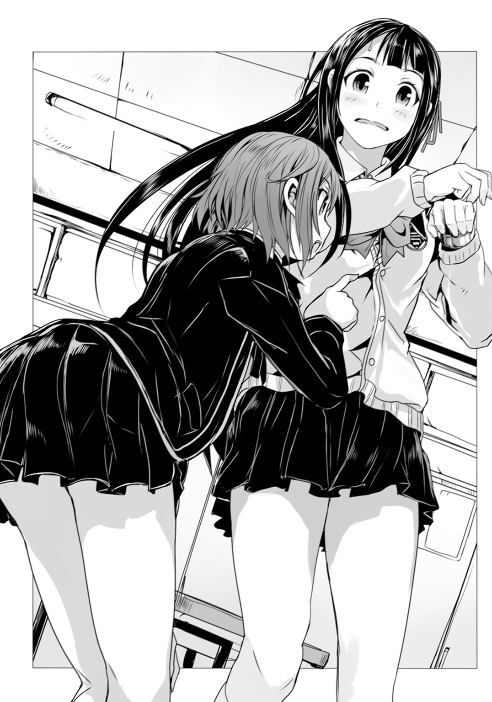
「えっとこれはね――」
「まさか四六時中、そうやって手首を摑んでいる訳にもいかないだろう？」
「そ、そうかも、それは、そうだけど」
「そ・れ・と・もぉ？」
視線を抉り込ませてくるかの様に、更に首を傾げて紫織の顔を覗き込みながら、綾は殊更に大きく抑揚をつけた口調で言った。
「斯波くんとお揃いなのが、そんなに恥ずかしいのかなぁ!?」
『えええええええっ!?』
教室のあちこちから驚愕の声が上がった。
どうやらいつの間にか、教室の生徒達は皆、紫織と綾の会話に耳をそばだてていたらしい。
「なに、なに、それどういう事!?」
好奇心を抑えきれなくなったのか、女子の数名が席を立ってこちらに近寄ってくる。何となくだが――その様子から紫織は、哀れな獲物ににじり寄って包囲する狼や山犬を想像した。さすがに舌舐めずりする様な女生徒はいなかったが。
「いわゆる一つのペアルックというやつかな？」
と綾に言われ――紫織は仕方なく手首を隠していた左手を降ろした。
女生徒達の視線が、揃って彼女の手首に巻かれた腕時計に注がれる。
確かにそれは――どこからどう見ても、連志郎のしているものと同じ品だった。彼のしているものの『予備』なのだから当然である。
「お揃いの腕時計って」
「なんかちょっと変わったチョイスだけど」
「斯波くんだしねぇ」
「アニメのグッズか何かだったりするの、これ？」
女生徒達は口々にそう評してくる。
確かにその腕時計は少し変わっていた。少年の手首に巻かれていればまだしも、少女の手首では少々ゴツすぎる印象だ。ベルトまで含め全て金属製、腕輪の様な円環に時計部分が埋め込まれている形状で、直線を多用しており、簡素なのだが......よく見ると、細かい模様がびっしりと刻み込まれていて、どこか威圧的かつ宗教的な――いわゆるゴシックな雰囲気がある。
まるで......手枷の様な。
「っていうか、初対面じゃないの？ 若槻さんと斯波くん」
「何言ってるの。若槻さん、知ってる感じだったじゃん」
「そうそう。生徒会室でもじーっと見てたみたいよ。工藤が言ってた」
その工藤というのは生徒会役員の一人だろうか。
「なんだよ斯波の奴。アニオタじゃなかったのかよ？」
「いや、アニオタだって彼女くらいいていいだろ」
「三次元に興味ないとか言ってなかったか、あいつ？」
男子生徒の声まで加わって――教室の中をざわめきが広がっていく。
昨日会ったばかりの転校生と、クラスでも有名なアニメオタクが、同じ腕時計を着けて登校してきた――思春期真っ盛り、恋だの何だのにはひときわ敏感な高校生が、こんな興味深い詮索対象を放置してくれる筈がない。
「つまり、二人は――付き合ってるって事？」
女生徒の一人が漏らしたその『結論』に、いきなり教室中が沈黙する。
幾つもの視線が集中する中で、紫織は居心地の悪さに首を竦める。〈悪魔憑き〉の『前歴』から、教室の中で浮いてしまう事は覚悟していたのだが――こういう注目のされ方をするとは思ってもみなかったのだ。
「紫織ちゃん」
「......あ、はい」
沈黙の中で声を掛けてきてくれた綾に――縋る様にして応じる紫織。
生徒会長は、今更、驚いたかの様に眼を瞬かせて言った。
「まさかとは思うが。寝不足というのは」
「......え？」
「斯波くんが寝かせてくれなかったとかそんな？」
「――ッ!?」
いきなり教室中で驚きの声が上がった。いや、声だけではない。中には慌てた様子でバタバタと両足を動かしたり、悔しげに机を叩いたりしている者もいる。
「ち、ちち、違――」
沸き起こる喧噪の中で、紫織は慌てて言い繕う。
「そんなんじゃないって......！」
「そんなんとはどんな？」
と――一同を代表して問い詰めてくるのは、綾である。
「言ってもらわないと分かんないにゃー？」
「噓、分かってるくせに！」
明らかに悪のりしている綾に、悲鳴じみた声で紫織は言った。
「いやいや。たとえ分かっていたとしてもだね？ ここはやはり恥ずかしがる紫織ちゃんの口から聞いてみたい――というのが、人情というものだよ。んん～？」
「変態オヤジみたいな事言わないで！」
弁解しようにも、もう教室は『若槻紫織と斯波連志郎は付き合っている』という情報が既成事実化しつつある。生徒達はこぞって証拠固めを始めていた。
「ねぇねぇ！ 斯波くん、どうなの？」
実際、女生徒が二人ばかり連志郎のところに詰め寄っている。
「どうとは？」
「若槻さんの事！ 付き合ってるの？」
「というか昨日、若槻さんって斯波くんの家に泊まったの？」
まるで他人事の様に――今初めて教室の様子に気付いた、といった様子で顔を上げる連志郎に、女生徒達は遠慮なくそう問いかけていた。他の生徒達も連志郎の方に視線を向けて、耳をそばだてている。焦りのあまり、一言でも失言しようものなら、それを突破口として強引に全てを暴き出してやろう――そんな空気であった。
「ノーコメント」
無表情に連志郎はそう言った。
彼としては――あるいはそれは沈静化を図る為の一言だったのかもしれない。
だがそれはもう十分に暖まっていた教室を、刺激しただけだった。
『ッ!!』
教室中が改めて興奮に沸き上がる。
「......馬鹿」
紫織は呻く様に呟いた。
既に同級生達は連志郎と紫織の関係を誤解しきっているので、どう答えようが結果は同じだったろうが......それでも『ノーコメント』などという言葉を使えば『その通りだが堂々とは認められない』と言っている様なものである。
しかも――
「......おのれ、斯波！」
「イケメンでもオタクだし、非モテの世界の住人だと思っていたのに！」
「転校生を一日でゲットでお泊まりとか......どんだけ手が早いんだよ」
「やはりイケメンには人生にプラス修正があるのか！」
「許すまじ、許すまじぃ！」
男子生徒は男子生徒で妙に盛り上がっている。
「ああ、もう！ とにかく違うの！」
やけくそ気味に叫ぶ紫織だが――もう遅すぎる。何を言っても燃料になるだけだ。
「これは大変な事になったね」
と無責任に笑う綾。
「誰のせいだと――」
と怒りに任せて彼女に詰め寄りかけて。
（......まさか）
ふと、紫織は気付いた。
綾はこうなると分かって皆を焚き付けたのではないのか？
二人の交際疑惑に盛り上がる教室内では、既に、紫織に対する警戒の空気は吹き飛んでいた。紫織が自分達の『側』いるのだと――紫織もまた、色恋沙汰に興味津々の思春期真っ盛りであり、自分達の『日常』という『領域』の住人なのだと、認識したからだろう。
これを狙ってやったのだとすれば、相当なものだ。
「綾......これって、わざと......？」
「――ノーコメント」
綾はそう言ってただ笑っているだけである。
結局――
『斯波連志郎と若槻紫織はただならぬ関係である』
綾の思惑はさておき......始業の鐘の音が鳴る頃には、そういう一方的な認識が学級内では既成事実として共有されてしまっていた。
●
保健室とは特殊な場所だ。
学校という、教育という目的の下で完結した空間の中にあって、一つだけ、その存在理由が他と異なる部屋である。
理科室。音楽室。職員室。視聴覚室。体育館。各種倉庫。用務員室。
それらは全て恒常的に――あるいは積極的に使われる事を想定した施設だ。直接授業で使う事がなくとも、授業環境を整える為に、常に使われ、機能し続けている。
使われるのが普通なのだ。
だが保健室は違う。保健体育の授業で、別室に養護教諭が呼び出される事はあっても、保健室に授業として生徒達が訪れる事はまずない。それは本来、医療施設であり、つまりは怪我をしたり体調を崩した者が来るべき場所であり――理想を言えば『使われずに済むのならば、それに越した事がない』場所だ。
勿論、現実には怪我や病気が一切発生しない学校生活というものはあり得ないし、そうでなくとも生理が重い、などの理由で女生徒が休みに来る事もある。
だが何にしても......保健室とは学校の『日常』における『非日常』であり、どちらかといえば生徒の姿がない事の方が普通で、それが望ましい部屋だ。
実際――
「――はい」
今その保健室に学生の姿はない。
いるのは、スマートフォンで電話中の常駐の養護教諭のみだった。
「一時的に衛星監視、発信器による監視、携帯電話のＧＰＳ信号を含め、あらゆる方面で彼女をロストしていました。申し訳ありません。付近で心神喪失状態の女性が一人発見されていますが......因果関係を含めて細かい事は調査中です」
草薙機関の職員――東城美沙紀である。
彼女は養護教諭としてこの学園に赴任していた。
勿論、これは表向きの事である。身分証や履歴書は全て草薙機関が超法規的に用意したもので――それらに記されているのは偽名だ。『東条美咲』......同じ発音の名前に違う漢字を当ててあるのは、咄嗟に名前を呼ばれた時に反応し易い様にという用心である。
美沙紀の任務は、若槻紫織の監視だった。観察と言い換えても良いだろう。
任務遂行の為に、草薙機関はこの学園に出入りする造園業者に接触し、校舎内の各所に超小型の盗聴器と監視カメラを設置している。これらは全て美沙紀が持ち込んだノートパソコンで集中制御出来、専用の衛星回線を通じて、本部にも得られた情報が逐次転送される仕掛けになっていた。
当然――こうした監視装置の類は、紫織の通学路や下宿にも設置されている。
だからこそ昨日、彼女を見失ったのは痛恨の失敗だった。
草薙機関はあくまで〈悪魔憑き〉対策を研究する為の組織であり、警察でも諜報機関でもなく、監視任務もまた美沙紀の専門ではないのだが――そんなものは言い訳にもなるまい。
「――はい。そちらは問題なく。若槻紫織は今日も登校しております。昨夜、自宅付近で再捕捉してから特に変わった点は見られません。現在も教室で受講中です」
紫織が通学路から外れ、郊外に向かったところまでは記録が残っているのだが、その直後に万全であった筈の監視体制が、彼女を見失った。
「いえ。さすがにそれは――」
上層部からは紫織の体内に発信器を埋め込む案も検討されていたが、これは美沙紀が現場担当者としての権限で異を唱えてやめさせた。
過去に〈悪魔憑き〉患者全員にそうした装置を埋め込む事が検討され――試験的に、十数人にこれが実施された事がある。だが、それらの装置は早くて即日に、遅くとも一週間程度で使えなくなった。〈悪魔憑き〉の破壊現象が体内にも及び、異物を壊してしまうのである。
もし紫織の〈悪魔憑き〉が本当に完治しているのなら良いが――何らかの理由で症状が潜伏しているだけの場合、そうした異物の埋め込みが再発の引き金になる可能性があるし、何より、紫織の警戒心を無意味に高めるだけだ。結果、観察が困難になってしまえば本末転倒である。
ともあれ――真夜中に紫織が、再び監視装置に存在を確認された時は、心底から美沙紀は安堵した。
しかし......
「え？ 増員――ですか？」
その言葉に美沙紀は僅かに緊張した。
こうした監視任務が、美沙紀の専門外である事に加えて......人手不足なのは否めない。美沙紀にこれを拒否するだけの正当な理由はないだろう。だがその増員の人選によっては、草薙機官が人道無視の強引な方法を採る可能性もあった。
「勿論、現場としては有り難いですが............え？」
増員として挙げられた数名の名前に、美沙紀は聞き覚えがあった。
「彼等が――ですか？」
美沙紀以上に専門外の者達だ。
そもそも同じ草薙機関に属してはいるが――部署が全く違う。
（それって、確か......最重要機密扱いじゃ......？）
草薙機関の中でも特に厳重に、その活動内容が秘匿されている部署が幾つかあり――美沙紀もその概要や責任者こそ知っているものの、詳細な部分は知らされていない。
聞くところによれば、彼等は〈悪魔憑き〉対策の『切り札』なのだとか。
つまり――何らかの実効力を持っている？
「現場の指揮はこのまま私でよろしいのですか？ ......はい、現体制を維持します。必要に応じて彼等の支援。基本的にはお互いの任務に不干渉――了解です」
監視任務については現状を維持。そのまま美沙紀が担当するという事らしい。
とりあえず安堵したが――その一方で、では『彼等』は何をしに派遣されてくるのか、という疑問が残る。『彼等』は独自の判断で動き、美沙紀の任務には不干渉――増員といいつつ、実際には、部外者が割り込んできたのと変わらない。
「第三研究局――か」
通信を切って、美沙紀は椅子に背を預ける。
漠然たる不安が覆い被さってくるのを、彼女は感じていた。
●
若槻紫織は困っていた。
一年近くの『入院生活』の為、彼女は学業にかなりの遅れが生じている。一般の高校に編入した以上は、その遅れを少しでも早く取り戻す必要がある。ただ――幸い、紫織は勉強は嫌いな方ではなかったので、その点については多少楽観視していたところがあった。
なのに――
「............」
教壇の上で教師が喋っている言葉が、まるで頭に入ってこない。
理由は――携帯電話だった。さっきから何度も何度も震えてメールの着信を告げてくるのである。当然、授業中は使用禁止と言われているのだが、律儀に守っている生徒は殆どいない様で......紫織も電源を切るのを忘れていた。とりあえずマナーモードにはしたが。
『斯波くんってプレゼントとかするんだ。意外ー』
『でもオタクって逆に浮気しないとか言うよね？』
『二次元にしか興味ないからでしょ？』
『そうそう。浮気しても二次元浮気（笑）』
『そう考えると顔はイケメンだし、もしかして狙い目!?』
メッセージは全て同級生の女子からのものだった。
やはり綾の目論見は当たっていた様で......朝の騒動のあと、同級生の女生徒達との距離は大幅に縮まっていた。具体的にはメール・アドレスやメッセンジャーのＩＤを数名の女子に請われて交換する事になったのである。
それそのものは、良い事だと紫織も思う。
だが――その結果、授業中でも関係なく質問責めに遭っている状態だ。
『斯波くんのどこがいいの？』
（どこも良くないわよ......）
紫織は、口の端から漏れそうになる溜息を呑み込んだ。
連志郎の顔は、確かによく整っている。長身瘦軀で姿勢も良い。なんだかんだといって女生徒達が連志郎の事を気にしているのは、この辺りが理由だろう。
だが――ここで『顔』などと答えるのも、どうかと紫織は思う。
容姿は良くても、彼の場合、性格に問題があるからだ。
言動は基本的に無愛想で、興味のない事にはまるで無関心――というか彼が興味を持っている趣味嗜好の分野といえばアニメだけの様だ。本気で三次元の――生身で現実の女には興味がないのかも。まさしく綾の言う『駄目オタ』そのものだ。
あまり褒められたものではない、と紫織は思う。
とはいえ――『あんなのどこも良くない』と答えてしまうと、それはそれでまたややこしい事になりそうだった。もう完全に紫織と連志郎は彼氏彼女の関係なのだと周囲には認識されてしまっている。
なので――
『優しいところ』
とりあえず当たり障りのないようにそう答えておく。
するとまるでその答えを予想していたかの様に、速攻でメッセージが飛んできた。
『どんなふうに優しいの？』
（私が聞きたい......）
特に優しくされた覚えはないので、紫織としても返事がしにくい。
まさか『〈悪魔憑き〉に襲われたところを助けてくれた』とは言えないだろう。
ただ――
「............」
囚われの姫と――これを救い出す騎士の寓話。
絶望の最中に連志郎を――正しくは彼の操る巨人装甲〈ブリガンド〉を見た時、胸の奥に覚えた感情が何なのか、紫織ははっきりした認識を持てないでいた。
本当に......あれは何だったのだろうか。
元よりまともな精神状態ではなかった。恐怖を妙な形に歪んで捉えていただけなのかもしれない。極限状況下の興奮を愛や恋と勘違いするのと同じく。
あるいは――
『斯波くんって、今まで若槻さんの他に、付き合った子とかいるの？』
返答に窮していると次の質問が来た。
（知らないわよ、そんなの......）
紫織が連志郎と話したのは昨日が初めてだ。つまりは初対面に等しい。
しかも昨晩は、そんな個人的な話をする余裕などなかったし――そもそも紫織は会って間もない異性に、恋愛事情を根掘り葉掘り尋ねられる程、図々しくはなれない。連志郎に関しては、尋ねてきている生徒達の方が詳しいくらいだろう。
『知らない。いないんじゃないかな』
やはり適当にそう返す。
『結局、昨日は彼の家に泊まったの？』
（いやまあ......確かに彼の家には行ったけど......）
家の中にも上げてもらったし、食事もご馳走になった。
しかも下宿に戻ったのは日が変わってからだ。泊まったというか、朝帰りしたというか――夜中の三時半を朝と言えるかどうかだが。
（メイドさんに当て身喰らわされて、連れ込まれて、だけどね）
およそ浪漫の欠片もない自宅訪問である。
いい加減、うんざりして紫織がこっそり溜息をついていると――更にメッセージが一つ着信。
『エッチの時とか、どんな感じ？ やっぱアニメのコスプレとかすんの？』
「――知る訳ないでしょそんなのっ!?」
動揺のあまり思わずそう紫織は口走っていた。
「――あ」
教室が痛いほどの静寂に包まれる。
紫織は顔から血の気が引いてゆくのを自覚した。教壇では教科書を片手に、初老の数学教師が硬直している。どうやら生徒に質問を振った直後だったらしく、そこに紫織が運悪く――勝手に答える様な形になってしまった様だ。
「......紫織ちゃん」
綾が席を立ってこちらに歩いてきた。
「悪いけど見逃せなくなったね。携帯、没収」
「あー......はい」
「放課後、生徒会室へどうぞ」
「はい............」
教師に謝罪し、紫織は綾に携帯を差し出した。
周囲を見回すと、数名の女生徒が慌てて顔を背けるのが見えた。
（何なの......）
自分はもっと冷静な......いや、喜怒哀楽の薄い人間だと思っていたのだが。
どうもこの学園に来てからは調子が狂う。
それは綾のせいなのか。それとも――
「............」
ふと連志郎の背中に眼を向ける。
〈悪魔狩り〉の少年は――紫織の事などまるで興味がない、といった体で真っ直ぐ前を向いたままだった。
●
昼休み――紫織はそそくさと教室をあとにした。
誰かに名前を呼ばれた気がしたが、振り切って小走りに中庭に出る。
「はぁ......」
編入二日目にして色々振り回されっぱなしだ。
せめて昼食ぐらいは静かなところで、落ち着いてとりたかったのである。
「......ええと......」
中庭は学生に開放されているとの事で、そこかしこに生徒達の姿が見られる。
ベンチや腰を掛けるのに丁度良い大きさの置石などは、既に埋まっていた。芝生にもちらほらと微妙な距離で生徒の姿があって......独り静かに食事が出来る、という雰囲気ではない様だ。
仕方なく校舎を回り込んで、紫織は他の場所を探す事にした。
人目を避ける様にして歩いていると――やがて彼女は、校舎裏に辿り着いた。
高くそびえる校舎の壁と、同じく高めの塀の間に出来た、隙間の様な場所である。
どこか路地裏を思わせて寂しい場所だ。
「......ぼっち飯......には相応しいかな」
苦笑交じりにそう呟くと、改装工事か何かの余りなのか、丁度良いくらいの高さに積まれていたコンクリート・ブロックに腰を下ろす。軽く手を合わせて『いただきます』と唱えてから紫織は昨晩のうちにコンビニで買っておいたパンの袋を開いた。
メロンパン。
そんな名前がついてはいるが、実際にはメロンの果汁すら入っていない商品も多いという。表面がわざとひび割れる様に焼いてメロンに似た雰囲気を出してはいるが、ほんの少し雰囲気を真似ただけの、別物だ。
偽物ですら――ない。
「............」
しばらく物憂げな眼差しでメロンパンを眺めてから、おもむろに紫織はこれを囓り始める。
機械の様に一定の調子で、淡々と。
食事の内容にはあまりこだわらない方である。むしろ、紫織にとってそれは単なる栄養補給であり、ただ生きているというだけでこなさなければならない作業でしかない。簡単であればそれに越した事はないのだ。
そうして黙々とメロンパンを頰張っていると――
「――若槻」
いきなり、声をかけられた。
思わずメロンパンを喉に詰まらせた紫織は――慌てて手元に置いていた牛乳のパックを探るが、生憎とまだストローを挿していなかった。咄嗟に飲める状態ではない。
「............！」
顔を真っ赤にして苦しんでいると、横から伸びてきた手がひょいと牛乳パックを取り上げ、ストローを挿して、差し出してくれた。
「............」
瞬く間に中身を空にする程の勢いで牛乳を飲む紫織。
詰まっていたメロンパンを喉の奥へと流し込み、そこで彼女はようやく一息ついた。
「食事はよく嚙んだ方が良いな」
「......誰の所為だと思って......」
「うん？ 何が？」
やはり無表情に首を傾げるのは、言うまでもなく、連志郎だ。
メロンパンを紫織が喉に詰まらせたのは、自分がいきなり声をかけたからだ――という事を分かっていないらしい。まあそれを差し引いても、苦しんでいる女の子を見ても『大丈夫か』の一言すらかけてこないのだから、やはりこの少年は変だ。
「何か用......？」
「一言、言っておこうかと思ってね。......あまり目立たれると困る」
涙目で睨み上げる紫織に、やはり顔色一つ変えず連志郎は言った。
どうやら教室での事を言っている様なのだが――
「悪かったわ。でも、私だって好きで目立ってる訳じゃない」
「分かっている。もう少しだけ注意してくれ、というお願いだ」
そう言って、連志郎は紫織の隣に腰を下ろす。
そのまま彼が左手に提げていた包みを開くと――中から出てきたのは弁当箱だった。蓋を開けるとその中に詰まっているのは、綺麗に切り揃えられたサンドイッチである。
「......欲しいのか？」
紫織の視線を勘違いしたのか、連志郎がそう訊ねてくる。
「いらない」
「そうか」
それ以上は勧める様子もなく、連志郎は黙々とサンドイッチを食べ始めた。
その様子は――自分の食べ方と似ている、と紫織は思った。
黙々と、淡々と、機械が稼働するかの様に実行される、作業。
他人がそうして食べている様子を見ると、何かやけに侘びしい気がした。
「それってペルヴィカさんが作ってるの？」
ふと気になって紫織は訊ねる。
「いや。これは自分で作った」
顔も上げずに連志郎はそう答えてきた。
「そうなの？ 料理が趣味とか？」
「いや。ツナサンドは『魔法少女ミルキィ・マリン』の主人公、マリンの大好物で、作中にも頻出する定番アイテムなのだ。なので僕も作ってみた」
「そうですか」
心底どうでもいい情報だった。
「しかも、アマザキ・パンは春のパンフェアをしていて、シールを十点分集めると、マリンの絵皿が貰えるのだ。だが菓子パンはどうしても割高なので、手っ取り早くシールを集められる食パンを狙い――」
「聞いてない」
「そうか」
気を悪くした様子もなく頷いて、黙々とサンドイッチを食べる作業を再開する連志郎。
「............」
ふと――風が吹く。
彼のさらさらの銀髪がなびき、校舎の端からこぼれ落ちてくる陽の光で、緩やかにその濃淡が変化する。彫りの深い、端正な顔立ちと相まって、その姿は絵画の一枚の様に美しく......しかしどこか現実感に乏しい。
奇妙な距離感がそこにはあった。
触れられそうで触れられない。十分に近い筈なのに体臭や体温を感じない。
（ひょっとして......わざと？）
奇妙に冷静な、感情を感じさせない言動も、あるいはこうした部分の延長なのか。
連志郎はこうやって、わざと他人との距離を一定に保っている様にも見えた。
それは紫織自身が似た様な事をしていた経験があるからこそ、分かる事だ。
連志郎がアニメ好きなのは本当なのだろうが、これもまた、周囲との距離を一定に保つ形で作用している。『変人』だの『駄目オタ』というレッテルを貼られる事によって、多少の奇行も周りは気にしなくなる。踏み込んで細かく彼を知ろうとはしなくなる。
紫織の様に、特殊な事情でもなければ。
（本当......何なのこの人？）
連志郎の屋敷で交わした会話を思い出しながら――紫織は溜息をついた。
●
（――さむい）
無意識に熱を求めて震える身体。
それを切っ掛けに――紫織は覚醒した。
微睡みの感覚はなかった。元々眠くて寝ていた訳ではない。無理矢理途切れさせられた意識は、すぐに『今』と繫がって肉体の隅々にまで行き渡る。
「............」
瞼を開くと――見た事もない天井が広がっているのが見えた。
木造の様だが妙に古びた印象で、くすんだ色で複雑な紋様が描かれている。仏教でいうところの『曼荼羅』に似ているが......そのものではない様だ。紋様の端々に文字らしきものが書き込まれているのだが、どことなくそれが西洋風なのである。
「......魔法......陣......？」
漫画や映画で、そんな意匠を見た事がある様な気がする。
いずれにせよ、紫織の暮らすワンルーム・マンションの天井ではない。
「.........ここは？」
状況を理解しようと身を起こす。
そこでようやく彼女は肌寒さの理由を理解した。
「――!?」
一糸纏わぬ全裸――生まれたままの姿で、紫織は寝台の上に寝かされていたのだ。
思わず声にならない悲鳴が口から漏れる。殆ど反射的に紫織は自分の体をかき抱いた。
シーツか、せめてタオルでもないか――そう思って周囲を見回したが、それらしきものは何もない。胸元を覆い隠す事が出来るのは自分の細腕だけだった。
見れば家具らしきものは紫織の横たわっていた寝台だけで、他には壁際にランプと思しき照明器具が幾つか取り付けられている程度。だが天井は勿論、壁にも床にも例の紋様が描かれており、殺風景という感じはしない。
そんな事を考えていると――
「――検査は終わったんだな？」
「異常ありませんでした」
人の声が聞こえた。
驚いて紫織が凍り付いていると――部屋の扉が開く。
鍵は掛かっていないらしい。話をしながら二つの人影が部屋の中に入ってきた。
「では叔父さんを交えて説明を――......」
「............」
「............」
三組の視線が絡み合い――奇妙に乾いた沈黙がわだかまる。
入ってきたのは連志郎と、そして紫織に当て身を喰らわせたあのメイドだった。二人は顔を見合わせる。どうやら紫織が起きているとは思っていなかったらしい。
「――斯波くん」
右腕で胸元を、左腕で股間を隠し、たっぷりと軽蔑の響きを載せて紫織は言った。
「こういう事する人だったのね」
「......こういう事？」
眉を顰める連志郎。
数秒、何事か考えてから――彼は慌てず騒がず、平然と頷いた。
「ああ。なるほど。そういう事か。安心していい。僕は三次元の女に興味はない」
「人を裸に剝いておいて、言う事はそれ？」
二次元コンプレックスだか何だか知らないが、そんな戯言、信じられる筈がない。
いつの間にか涙ぐんでいる自分に紫織は気付いた。
眠っている間に何か性的な事をされたのではないか――という恐怖からではなかった。
良くも悪くも紫織は自分というものの価値をあまり高く見積もっていない。貞操にしろ生命にしろ、必死になって守る程のものではない......紫織はそんな風にすら自分の事を考えていた。
だからこれは、穢された事に対する悲しみではない。
失望した。自分に。そして連志郎に。知らず知らずのうちに、妙な期待を相手に掛けていた自分に気付いた――ただそれだけの事だった。
「念の為に言っておくが、君の服を脱がせたのは僕じゃない」
「じゃあ誰なの」
「私です」
そう言いながら前に出たのは、あの、紫織に当て身を喰らわせたメイドだった。
綺麗な少女だ。だが分かる事といえばそれだけである。
その顔立ちが整いすぎていて――偏りがまるでない。完成されすぎているとでも言おうか。若い娘という事は見た瞬間に分かるが、では何歳なのかと問われると答えられない、そんな容姿である。そういう姿で生まれて、死ぬまでそのままであるかの様な......幼い姿や老いた姿がまるで想像がつかない。
「......とりあえず、これを」
メイドが、左手に掛けていた布を紫織に手渡してくる。
ひったくる様にして受け取ってみると、それはメイドが着ているのと同じもの、つまりはメイド服だった。これをきつく胸に抱いて前を隠しながら、紫織はメイドの方を睨んで問いかけた。
「なんで、私、裸なの......？」
「身体検査をさせていただきました」
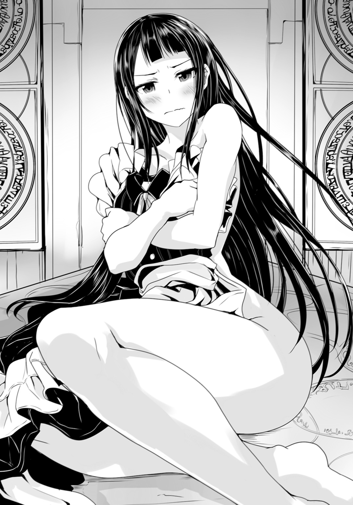
「......あなたが？」
「はい。連志郎様にしていただく訳にも参りませんので」
メイドは当然といった口調でそう言った。
「元々着ておられた御衣装ですが――差し出がましいとは存じましたが、少し汚れておりましたので、現在、急ぎで洗浄をしております。じきに終わりますのでお待ちください」
「......貴女は、一体、誰？」
「申し遅れました」
メイドはワンピースのスカート部分を両手で摘まんで優雅に一礼する。
「私は斯波家の所有物、オートマタのペルヴィカでございます」
「所有物......？ オート......何？」
怪訝の表情を浮かべて訊ねる紫織。
その物腰や行動から判じる限り、見た目通りの家政婦らしいのだが......自己紹介に奇妙な単語が混じる。所有物などという表現は、まるで自分が人間ではないかの様だった。
「ペルヴィカさん、でいいの？」
「ペルヴィカで結構です。若槻紫織様。連志郎様は壁を向いて円周率を最後まで暗誦していてくださいませ」
「分かった」
素直に『さんてんいちよんいちご......』などと、壁に向かって呟き始める連志郎。
一方、今一つどう着ていいか分からず、メイド服を抱き締めたままでいると――ペルヴィカが背後に回って紫織の両肩を摑んだ。そのまま二人して踊る様に一回転。ペルヴィカが己の身体で紫織を隠す形になった。
「それじゃ――ペルヴィカ。一つ訊いて良い？」
「何なりと」
「斯波くんを連れてくる前に服を持ってくる、という発想はなかったの？」
そもそも下着もなしにメイド服を着ろという事なのだろうか。
「............」
紫織から見て背中の側にいるので、ペルヴィカの表情は勿論――見えない。
ただ、何か黙考する様な時間をおいてから、斯波家のメイドらしき娘は言った。
「なるほど。そういう考え方もありますね」
「ありますねって......」
着替えを提供する気遣いがあるなら、まず、裸体を異性の眼に晒さずに済む様に考えるものだと思うのだが。連志郎もどこか言動がずれているところがあるが、このペルヴィカという娘も何かおかしい。
「9628292540......ペルヴィカは普通ではないからな」
円周率を唱える合間から、異常の典型が、自分の事を棚上げしてそう言った。
「若い女性の羞恥心というものを未だ理解出来ていないのだ......9171536436」
「別に見られて何か消耗するというものでもありませんし」
紫織がメイド服を身に着けるのを手伝いながら、ペルヴィカが言った。結局、下着はなしだが、裸のままでいるよりはマシだろう――というか、この言動からして、ひょっとするとペルヴィカ自身が、下着を着けるという習慣がないのではないか？
「消耗するのよ。主に心が」
「申し訳ございません。私にはその部品が存在しませんので理解は難しいかと」
益々、自分をモノか何かの様に言うペルヴィカ。
彼女の手伝いもあって、紫織は問題なくメイド服を着る事が出来た。布地の柔らかさのせいか、着心地は良く......下着なしでもあまり気にならない。スカートがめくれれば大変な状態になるが、丈は十分に長いし、そうそう妙な事にはなるまい。
「こっち向いて良いわよ、斯波くん」
一つ二つ、深呼吸してから紫織は連志郎に声をかける。
「1907021798......待ってくれ。今盛り上がっているところだ」
壁を向いて、尚も円周率を唱えながら連志郎は言った。
「いいからこっち向いて」
「......仕方あるまい」
何故か妙に恩着せがましく聞こえる台詞を吐いて、連志郎はこちらに向き直った。
「説明してもらえるのよね、どうしてこんな扱いを私が受けているのかを」
気を引き締めて紫織は問うた。
「検査とか言ってた様に思うけど」
「そう。検査だ――ペルヴィカ」
連志郎は頷いてメイドの方に視線を向ける。
「ここに」
そう言ってペルヴィカが差し出したのは、何かの資料らしき数枚の紙だった。
それを一瞥してから連志郎は小さく頷く。
「結論から言おう。若槻紫織。君は〈悪魔憑き〉だ」
「――！」
唐突にそう断定されて紫織は息を呑んだ。隠してはいたのだが、噂にはなっていた様だし、どこかから情報が漏れたのだとしたら、連志郎が知っていてもおかしくはない。
だが......
「そうね。〈悪魔憑き〉だった」
溜息を一つついて紫織は認めた。
「『入院』してたのもそのせい。でも治ったから『退院』させてもらえた。初の――」
「君の認識には一つ誤りがある」
連志郎は冷淡な口調でそう断じてくる。
「繰り返すが君は〈悪魔憑き〉だ。現在進行形で、過去形ではない」
〈悪魔憑き〉は治らない。紫織はそう『収容所』に入る際に聞かされた。
根治療法どころか対処法すら確立されていないのだ。症状は悪化する一方で、改善される事はない。だから可能な限り『患者』の中の『悪魔』が暴れないように気を配り、泥縄的に色々な方法を試しながら、せめて病状の進行を遅らせるしかない。そして手に負えなくなったら『まだ人間でいられるうちに』殺す事になるのだと――それがむしろ慈悲なのだと『収容所』の者達は言っていた。
つまり『退院』の実例などなかったのだ。今までは。
では紫織は本当に治ったのか？
〈悪魔憑き〉という病における唯一の症状――破壊現象の発作がなくなった、というだけで、他に何が変わった訳でもないのだ。だが外部から確認出来る症状がそれだけなので、他に完治を判断出来る要素がない。
そう。やはり治ってなどいなかった。
その不安はずっと紫織の中にわだかまっていた。
だが......
「どうやって調べたの？ そもそも〈悪魔憑き〉って何なの？ 斯波くんは何を知っているの？ 大体――」
どうして連志郎は異能を発揮する〈悪魔憑き〉と対等に戦える？
対処法すら存在していないからこそ、『患者』は殺されてきたのではなかったか？
「細かい事を説明するのは、僕では難しい。僕は専門家ではないからね」
「じゃあ専門家がいるの？」
あの『収容所』の職員達ですらろくに分かっていなかった〈悪魔憑き〉について詳細に説明出来る様な人間が、本当にいるのだろうか。
「もうすぐ来ると思うんだが。妙に手間取っているな。何かあったのか」
そう言って連志郎が部屋の扉を開く。
その時――
「......遅くなりました」
部屋にペルヴィカが入ってきた。
「――え？」
思わず紫織は、自分の脇に立っているペルヴィカと、部屋に入ってきたペルヴィカを見比べてしまう。双子かと思うくらいに――いやむしろ鏡像か何かのトリックを疑ってしまうくらいに、二人はそっくり同じだった。背格好は勿論だが、細かな物腰、立ち方すらも全く同じなのである。違う点と言えば――
「ああ。私の端末です。お気になさらず」
「端末？」
またしても意味不明な言葉で説明されて眉を顰める紫織。
だがそれよりも何よりも訳が分からないのは......
「叔父さん。遅いよ」
「いやぁ悪ぃ悪ぃ。準備に手間取っちまってよ。ほれ、なにせ若い女の子と会うのなんざ久し振りだからな――俺の葬式の時以来か？ だもんでな、ついついおめかしにも力が入るってもんよ、な？」
連志郎と喋っている、その相手だった。
新たに入ってきた方のペルヴィカが抱えているソレ。
何故かフロックコートを着て、山高帽を被って、片眼鏡まで掛けた――
「縫いぐるみ？」
それは呆然と紫織が漏らした言葉通り......どこからどう見てもデフォルメされた熊の縫いぐるみだった。それ以外の何物でもなかった。
なのにそれは動いていた。動いて、しかも、喋っていた。
「......腹話術？」
思わずそれを抱えているペルヴィカにそう訊ねるが、彼女は首を振った。
熊の縫いぐるみは、彼女によって紫織の寝ていた寝台の上に置かれる。
すると布と綿の塊にしか見えないそれは、すっくと立ち上がって、寝台の傍に立っていた紫織に歩み寄り――挙げ句、馴れ馴れしげに、その肉球付きの前足で紫織の腰を叩いてきたのである。
「や――嬢ちゃん。はじめまして。俺ぁ斯波和晃ってんだ。連志郎のオジサマってやつだな。野郎にオジサマなんて呼ばれても嬉しかねえんだが。そうだ、嬢ちゃん、俺の事は和晃のオジサマって呼んでくんない？」
縫いぐるみはそうまくし立てる。
「............何これ」
紫織は縫いぐるみの首根っこを摑むと、持ち上げてみる。
軽い。少なくとも中に機械の類が入っている訳ではなさそうだ。試しに両手で揉んでみたが、骨格が入っている様子すらない。触った限りでは、見た目通りの縫いぐるみだ。
「自己紹介していただろう。僕の叔父の斯波和晃だ」
平然と連志郎は言った。
「メイド姿の女子高生に揉み揉みしてもらえるとは、こりゃ至福、至福。ああ、そこそこ、そこもうちょっと揉んでくんない？」
などと喜んでいる、のだろう、多分。
「縫いぐるみが叔父さん......じゃあ斯波くんも縫いぐるみなの？」
紫織は激しく混乱したまま――連志郎の方を見て問いかけた。
「残念ながら違う」
何がどう残念なのかはよく分からないが、連志郎はあっさり紫織の妄言を否定した。
同時に紫織に抱き上げられたままの縫いぐるみが、両手足を振り回しながら爆笑する。
「ひゃっはっは！ や、実に斬新、斬新な解釈だな――そう思わねぇかペルヴィカ？」
「確かに、他に類例を見ない発言です」
「いいな。実にいい。前例の否定、可能性の開拓......常人を縛る思考の軛から解放された者が、常に道を切り開いてきた。嬢ちゃんにゃその才能があるのかもな」
これは褒めているのだろうか。
尚も混乱している頭でそう考える紫織に、しかし連志郎が少し首を傾げて問いかけてきた。
「君、意外にバカなのか？」
「馬鹿なのは認めるけれど、これは単純に混乱しているのよ」
喘ぐ様に紫織は言って――熊の縫いぐるみを寝台の上に戻す。
「ま、そりゃしょうがねえな」
熊の縫いぐるみ――いや和晃は言った。
「俺ぁちと変わり者でな。世間一般の勉学とはちと違う方面の研究をしてたのさ。お陰で親戚や知人友人からつけられた綽名は『魔法使い』――まあ概ね正しい認識だぁな。この屋敷も御近所からは『化け物屋敷』とか言われてたもんだがよ。よくこんなところまでのこのこやってきたな、嬢ちゃんも」
「魔法......使い......」
悪魔がいるのならば魔法があってもおかしくはないのか。
「まあ......そういうもんだと思ってくれ」
和晃は気安い口調でそう言った。
「それよりも彼女の身体を調べた結果について説明を」
「そうだったそうだった」
連志郎に促され、寝台の上を歩き回りながら和晃は頷く。
「紫織ちゃんつったか。嬢ちゃんは確かに〈悪魔憑き〉だ。治ってねえ。治った様に見えたのは、単に嬢ちゃんの中の『悪魔』が休眠状態に入ってるだけだ」
「休眠状態......」
「仮死状態つっても良いけどな。機能発動の引き金となる内分泌物質のバランスが変化して――いや、まあこの辺はどうでもいい。とにかく嬢ちゃんの中の『悪魔』は寝てる訳だ。だから〈悪魔憑き〉特有の症状が出ない」
どこからか取り出した杖をぐるぐると振り回しながら、和晃は続ける。
「こりゃ非常に珍しい状態だろうな。多分、前例はない。今のところ、原因は断定出来ねぇが、まあ、分かっている事から強引にでも、それらしいものを探し出すなら――俺の甥っ子のせいなんだろうな、これは」
「......斯波くんの？」
「連志郎の中にいる『悪魔』は『共食い』趣味だからな。嬢ちゃんの中にいるお仲間に嚙み付いちまったんだろう――半殺しになるくらいに、がっぷり、ってな」
恐ろしくいい加減な説明の中に混ぜて――さらりと和晃は核心に触れる事を口にした。
「それって――つまり」
「なんだ、まだ聞いてなかったのか？」
首を傾げる熊の縫いぐるみ。
ボタンで出来たその両眼が、壁際に立ったままの連志郎の方を向いて言った。
「世間でも色々噂になってるみてぇだがな。政府が〈悪魔憑き〉関連は情報統制しているから、あくまで噂でしかねえが。噂の〈悪魔狩り〉――ありゃ、連志郎のこったよ」
杖の尖端が容赦なく連志郎を指す。
そして本人は――
「............」
いつもの無表情で、小さく肩を竦めただけだった。
●
「――どうぞ」
差し出された白磁のティーカップから、ふわりと甘い香りが立ち昇る。
卓の上に置かれる際にもそれは......かちりとも音を立てなかった。勿論、中身がこぼれる様な事もない。まるで最初からずっとそこに置かれていたかの様に、ティーカップの中身は完全に平らな水面を維持していた。
「ありがとう」
ペルヴィカを振り返って、そう礼を言う。
自称・斯波家の所有物たるメイド娘は、無言で一礼すると壁際に退いた。
紫織達が今いるのは、斯波家の居間である。
屋敷の外観そのままの――どこか古めかしい印象の洋間だ。
骨董品としても通用しそうな、重厚さを備えた諸々の家具と、ペルシャ織りらしき絨毯が、独特の――ゆったりと重みのある空間を作り出している。金細工や銀細工の類は殆どなく、彩りとしてはむしろ地味目なのだが、安物や歴史の浅い大量生産品では醸し出せない何かがここには漂っていた。
紫織が腰掛けているソファも、恐らくは相当に値の張る代物なのだろう。庶民の家庭に育った感覚からすると、圧倒されるというか......むしろ場違いな気がして落ち着かない。
「............」
対面で静かに紅茶を飲んでいるのは、連志郎だ。
こちらは――まあ自分の家なのだから当然と言えば当然だが――小憎らしいくらいにこの場に馴染んでいた。『黙っていれば美形なのに』と綾が言っていたが......実際、こうやって荘厳な雰囲気の部屋で、優雅に紅茶を嗜んでいるその姿は、貴公子そのものだ。
ただし、端正な顔に浮かぶのは、いつもと同じ――冷静さがそのまま形を得て仮面と化したかの様な無表情だ。そこには揺らぎも、歪みも、偏りもない。
一体、何を考えているのか。
ふと、紫織は思いっきり彼をぶん殴って、その表情を歪ませてみたいとも思った。
「さて、どこら辺まで話したっけか？」
卓の横に置かれた椅子から、和晃の声がする。
紫織がそちらに視線を向けると――椅子に沈み込む様に深く腰掛けた熊の縫いぐるみがいた。英国紳士の誇張画みたいな格好をしたその姿は、ただ眺めるだけならば可愛らしいが――それが実際に動いて喋るとなると、ちょっとしたホラーだ。
もっとも本人は、そんな事などまるで気にした様子もないが。
「斯波くんが、〈悪魔狩り〉であると......彼の中にも『悪魔がいる』と」
「そうそう、そうだっけか。いや、一旦死んでからは忘れっぽくてな。物理的に脳がねぇんだから当然なんだがよ？」
ひどく気楽な口調で和晃はそう言った。
この縫いぐるみ――いわゆる『魔法使い』、つまりは魔術と呼ばれる特異技術体系に通じた存在であるらしいのだが。世間一般に思い描かれる『魔法使い』、即ち、童話や神話の領域でしばしば語られる存在とは、随分と印象が異なる。
恐ろしく俗っぽいというか、安っぽいというか......喋っているのは熊の縫いぐるみなのだが、その背後に、軽薄そうな笑みを浮かべる中年男の姿が見えるかの様だった。
「まあ、細かい話をする前にな。そっちの事情も聞いておきてぇんだわ」
和晃は肉球付きの右手で紫織を指してそう言った。
「陳腐な言い方で申し訳ねぇんだがよ。世の中にゃ、知らない方がいい、関わり合いにならねえ方がいい、って話も山程あってな。正直――俺等の事情に深入りするのは、あんまりお勧めしねえ」
「深入りも何も......私は」
「分かってる。もう巻き込まれてんだよな。だが、だからこそ、嬢ちゃんの立ち位置ってもんを知っておかねぇとな。どこまで話すべきか、判断しにくいんだよ」
「............」
紫織は束の間――頭の中で幾つかの事柄を整理する。
言うべき事。言わなくても良い事。〈悪魔憑き〉に関係する事としない事。
それらを簡単により分けてから、彼女は口を開いた。
「私は一年くらい前、〈悪魔憑き〉と診断されて入院しました。それから一度も病院の外に出た事はありません。その間、だんだん症状が進行していったみたいです。けど、あの夜――私のいた『収容所』で騒ぎがありました。どこからか現れた大きな怪物が、『収容所』の敷地で暴れ回り、建物を壊したんです。私のいた建物もその際に壊されました。そしてそこに続けて現れたのが、斯波くんの乗っていたあの――大きな騎士で」
「『騎士』ね――さしずめ〈ブリガンド〉は囚われのお姫様を救いに現れた白馬の王子様に見えた訳だ？」
「............」
まるで内心を見透かされたかの様で、紫織は言葉に詰まり――話題を変えたくて、ふと気付いたその名を口にしていた。
「あれは――〈ブリガンド〉って言うんですか？」
「おう。神鎧〈ブリガンド〉さ。かっちょいいだろ？」
愉しげに笑う和晃。
「ジンガイ、は神の鎧と書く。まあ『人外魔境』のジンガイでもいいんだけどよ。ブリガンドってのは元々英語で、『略奪者』とか『野武士』って意味な。イタリア語じゃまた少し意味が変わってくるが――ま、〈悪魔憑き〉共と戦う為の兵器、いや、神器だよ」
「じんぎ......」
「神の器と書いて神器と読む。元々は祭祀用の道具、神という概念の物質的象徴、まあそういったもんな訳だがよ。神様なんてのはどこにでもいるもんでな」
和晃は短い腕で己の胸を叩いてみせた。
「荒御霊と和御霊って分かるか？ 神様ってのは本来、善にも悪にもなるんだよ。放っておくと災い起こしたり祟ったりするから、祭祀儀式で宥め賺してお鎮まりいただく――余計な事しないで、私達の都合の良い存在でいてくださいってな。で――神器ってのはその道具な訳だから、神様を――神の威光を納めてく為の器、なんだな」
「はぁ......」
何やら話がややこしいところに及んでいる様だが、紫織としてはただ聞くしかない。
「ここでいう神ってのはまあ、人間の精神が生み出した比類ない力、その具現、程度に考えておきゃいい。普通は何百人、いや、何千何万って人間の、それも祈りとかそういう形で方向性を揃えられた意識が『力』となり、神となったりする訳だが。ごくたまに個人で神を生み出しちまえる奴がいる。そういう奴は大抵――奇跡を起こしてみせて宗教の教祖になるか、さもないと自分の中の神様に振り回されて自滅する。割と早い段階でな」
「......それって」
神と悪魔の違いがあるだけで、まるでそれは〈悪魔憑き〉だ。いや......そもそも神も悪魔も――善も悪も表裏一体、その様な事を先程、和晃は言っていなかったか？
「おう。その通り。最近は何故か、そういう奴がいきなり増えてな。そうさ。それが〈悪魔憑き〉だよ。鎮める司祭もいない、神器もない、荒ぶる神様って訳。で――〈ブリガンド〉はその神様に予め形を与えて、扱い易くする為の道具さ」
「............」
紫織は連志郎の方に視線を向ける。
だが彼は興味なさげに紅茶をすするばかりで、会話に加わる様子がない。
「勿論、〈ブリガンド〉もあくまで対症療法っつーか......〈悪魔憑き〉そのものを根治する事は、今のところ、俺にも出来ない。それも連志郎専用だ」
和晃は縫いぐるみの短い腕を組んでそう言った。
「便宜的に『悪魔』なんて言ってるが、アレの正体がなんなのかは未だに分かってねぇんだよ。ただ、連志郎に幾つか泥縄な感じで施してみた方法で効果があったものは分かってる。その一つが連志郎が塡めてる腕時計でな」
「え？ あ――」
言われてみれば、連志郎は少し変わった形の時計を左手に塡めている。
「あれもその一つだ。最近は電子ペーパーなんて便利なもんが出来てるんでな、状況に合わせて変化する呪符――魔法の御札、なんてのも作れちまう。あの時計の表示は『悪魔』抑制の術式になってて、一定時間毎に変化して、効果を維持する訳だ」
「......良く分からないですけど、ひょっとして」
あの腕時計を塡めれば......病としての〈悪魔憑き〉を治す事は出来なくとも、事実上、その症状が表面化しない様に抑え込む事が出来る、という事か。
「誰にでも効果がある訳じゃねえのが、これまた問題でな。元々魔法ってのはそういうもんだから、科学に比べてニッチなんだが......ソレに加えて、どうやら『悪魔』にも個性っつーもんがあって、同じ術式を突っ込んでも、効果が違うらしいんだわ。で――先に言ったろ？ 連志郎に対して泥縄で色々試して作ったってな。いわばありゃ、連志郎の『悪魔』専用の抑制術式なのさ」
「私の『悪魔』には効果がない......という事ですか？」
若干の落胆を覚えながら問う紫織。
だが和晃は縫いぐるみの右手を振ってみせた。
「いやいやいや。話は最後まで聞こうや、嬢ちゃん。嬢ちゃんは特殊な事例だ。連志郎の『悪魔』の特殊能力――悪魔喰らいの顎〈コベット・ファング〉が間近で発動したせいで、嬢ちゃんの中の『悪魔』が影響を受けて休眠状態に入ってる。しかも連志郎の『悪魔』に半殺しっつーか、半喰いされたせいなのか......影響を受けたのか、連志郎のそれと同様の抑制術式でも一定の効果が確認出来た。より深い眠りに落とし込めるってーか、まあ、そんな感じだ」
どうやらその辺りの事を、紫織が眠っている間に、ペルヴィカや和晃が調べていたらしい。あの最初の――紫織が目覚めた部屋に、所狭しと刻まれていた紋様は、かつて、連志郎の『悪魔』を封じ込める為に色々と抑制の術式を試していた名残であるのだとか。
「じゃあ――」
「着けてりゃ、より確実に『悪魔』を眠らせておける筈だ。連志郎用に作ったものなんで、女の子の手にはゴツめに見えるかもしれねえけどな、予備で良けりゃ進呈しよう。甥っ子が迷惑をかけた詫びって事で」
「ありがとうございます」
素直に紫織は頭を下げた。
完治は出来なくとも、ずっと自分の内の『悪魔』を眠らせておけるなら、普通の人間と同様の生活を送る事が出来る筈だ。自分にしか効果がないというのは多少後ろめたいが、他の〈悪魔憑き〉患者を気遣ってやる余裕は、さすがに紫織にもない。
「まあ俺からはこんなところか。で――連志郎？」
縫いぐるみの熊は、我関せずといった様子で膝の上にアニメ雑誌を広げて読み始めていた連志郎に声をかけた。
「お前の口から彼女に説明すべき事とかはねえのか？」
「............それは」
珍しく躊躇するかの様に連志郎が言い淀む。
「ちなみに、放っとくと俺はいつまでも喋るぞ。現役女子高生とお喋りする機会なんざ滅多にねえからな」
「............分かった」
連志郎はアニメ雑誌を閉じて姿勢を正すと――紫織の方に真っ直ぐ視線を送ってきた。
「今までの話から分かったと思うが、僕も〈悪魔憑き〉だ。それも割と筋金入りの」
「筋金入りって――」
「僕が発病したのは十年前だ」
「............！」
息を呑む紫織。
それは確かに筋金入り――というか、発病していながら、十年間も連志郎はそれを周囲に知られる事なく、暮らしてきたという事か。
確か『収容所』の職員達の話によれば、一旦発病してしまえば、早ければ半年、長くとも二年で『どうしようもない』状態に陥るらしい。それから考えれば連志郎の十年という数字は、和晃の『抑制術式』に確固たる効能があるのだという事が、分かる。
「これも先に叔父さんが言った通り、僕は〈悪魔憑き〉――というより〈悪魔〉を狩って回っている。君のいた『収容所』に行ったのもその一環だ」
「じゃあやっぱりあの怪物も――」
「人間、いや〈悪魔憑き〉だ」
何の躊躇もなく連志郎は言い直した。
まるで〈悪魔憑き〉など人間ではないとでも言うかの様に。
「世の中には幾つかの偶然が重なって、発見されないまま、行き着くところまで行き着いてしまった〈悪魔憑き〉が――『なれの果て』がいる。彼等の『悪魔』は具体的な形を得て、より意識的な操作が可能になるらしい。それが君も見たあの怪物の正体だ。僕等はアレを〈魔神態〉と呼んでいる」
「......〈魔神態〉......」
「同時に大抵の〈魔神態〉は固有の特殊な能力を備えている。あの病院にいた個体は触れたものを溶解させ、液状化する能力だった。屋敷の前で戦った個体は切断の能力だったのだろう。能力の形態や強さは千差万別だ」
そこまで言ってから――連志郎は何かを確認するかの様に、和晃の方を一瞥した。
「さて......ここからが問題なのだが。僕の〈悪魔狩り〉は世間には秘密だ。そもそも〈悪魔憑き〉と知られれば僕も君達と同様にあの種の病院に閉じ込められる事になる。多分、一生出られないだろう。さすがにそれは御免こうむりたい。自由にアニメも見られないなんて、生きている意味がない」
「......そこまで？」
どれだけアニメが好きなのか。
それともこれは、ある種の冗談か。連志郎の表情も口調も変わらないので、その辺の判断がとてもつきにくいのである。
そもそも......行為の結果だけ見ていれば連志郎の〈悪魔狩り〉は正義の味方、それこそアニメ等に出てくる『ヒーロー』そのものである。もっと得意げな顔をしていても良さそうなものだが、連志郎の表情はいつもと同じ......いやそれどころか、自分の行動をひどく醒めた眼で見ているかの様だった。
「とにかく、当然、君が僕の事を誰か他人に喋ったりすると困る。最も確実なのは君の記憶をあの日のものも含め、消してしまう事だが......そうした意識への干渉は、君の中の『悪魔』を目覚めさせてしまう可能性もある」
「......選択肢なんてないじゃない」
「そう見えるのならそうなのだろう」
ひどく突き放した様な言い方を、連志郎はする。
「いずれにせよ、巻き込んでしまったのは悪いと思うが、本来、僕の目的は〈悪魔狩り〉であって、それ以上でもそれ以下でもない。君の『悪魔』が休眠状態になったのも単なる偶然だし、僕は別に君を助けた訳ではない」
「............」
「僕は誰も助けない。慈善事業をしている訳ではないのでね」
「......そう......ね」
話を聞いた限りではそういう事なのだろう。
見ず知らずの人間を――しかも〈悪魔憑き〉を助ける理由は連志郎にはない。
しかし――
「そうでしょうね......」
自分は何を落胆しているのだろう――と紫織は思った。
囚われの姫と、これを救い出す騎士の物語。
だが紫織の前にやってきたのは、騎士ではなかった。たまたま敵と戦っていたら、ものの弾みで紫織に良い影響が出た――という程度の事で、本人は紫織を助けようという意思すらもなかったのだ。勿論、連志郎は紫織の淡い期待を叩き潰してみせるのが目的なのではなく、『だから恩に着る必要はない』という意味で言っているのだろう。
だが――それでも。
「おいおい連志郎。ものには言い方ってもんがあるだろうがよ」
紫織が落胆しているのを察したか和晃が取りなす様に言ってきた。
「嬢ちゃんががっくりきてるぞ」
「......？ 何故だ？」
怪訝そうな表情を浮かべる連志郎。
「ああ......俺の甥は本当に唐変木だな」
額に肉球をあてて嘆いてみせる和晃。
「まあいいや。それよりもう結構な時間だな。食事でもして帰るか？」
言われて紫織は携帯電話を取りだして時刻を確認する。
既に夜中の一時だ。どうやらかなり長い時間、眠らされていたらしい。
「その前に家に電話をすべきだろう。もう遅いかもしれないが」
と連志郎。
「......大丈夫。独り暮らしだから、別に夜中に戻っても文句を言う人はいません」
微苦笑を浮かべて紫織は言った。
「親はどうした？」
無遠慮にそう訊ねてくる和晃。
「両親共に健在で隣の県に住んでますけど――多分、もう私の事は死んだものだと思っているんじゃないですか？」
努めて明るい声を――自嘲の響きを含まない声を出したつもりだが、上手くやれたかどうか、自信はなかった。
姉と比べてあらゆる面で出来の悪い――劣化コピーの様な妹。
しかもあろう事か〈悪魔憑き〉だ。『収容所』に入る事になっても、両親は特に何も言わなかった。姉が死んでからはそもそもまともな会話を交わしていない。そこにきて〈悪魔憑き〉と判断されたのだ。むしろ両親は厄介払いが出来たと喜んだかもしれなかった。
「そうかい」
和晃は短くそう言っただけで、それ以上は追及しなかった。
連志郎もペルヴィカも同様だ。色々な面で非常識な者達ではあったが......少なくとも彼等は、他人の傷を面白半分にいじり回す様な残酷さは持ち合わせていないらしい。それだけでも紫織は彼等に感謝して良いと思った。
「では夕食――いえ、お夜食の準備をして参ります」
話はこれで終わり、とでも言うかの様にそう告げて、ペルヴィカが一礼した。
●
「――という訳で」
放課後の生徒会室。
綾は、携帯電話を引き取りにやってきた紫織の顔を覗き込みながら言った。
「生徒会公式の学則としては『授業中の携帯の使用は禁止』って事になっている」
「......うん」
「これは、生徒会が仕切って取り締まるのは、学生側に自治能力がある事を示し、せめて学校へ持ち込む権利だけは確保しよう――という考えからだ。今時、携帯もスマートフォンも持たない、では成り立たない私生活を送っている生徒も少なくない」
「......うん」
「放っておけば、学校側が携帯もスマートフォンも全面禁止に踏み切るのは明らかだったからね。勿論、これは私の代ではなく、三代ばかり前の生徒会の功績で、以来、伝統的に受け継がれてきている」
「......うん」
「紫織ちゃん？」
首を傾げて、綾は眼を細める。
「私の話――聞いてる？」
「......え？ あ――ああ、うん。聞いてる、聞いてた、聞いてたよ」
慌てて頷く紫織。
実際には昨日の事を思い出していて、殆ど綾の話は耳に入っていなかったが。
「本当にちゃんと聞いてた？」
「すっごく聞いてました」
「どの辺まで覚えてる？ 斯波くんと私が以前、男女交際をしていた話は？」
「うん、もちろ――......はあっ!?」
さらりと綾の漏らしたとんでもない話に思わず紫織は眼を丸くしていた。
「実は斯波くんと私は親が決めた許嫁同士で」
「え？ え？」
「既に私のお腹には、彼の赤ちゃんが」
「なに？ それ本当!? なんでそんな――」
「そんな訳ないでしょ」
あっさり綾は否定して両手を腰に当てた。
「やっぱり聞いてなかったのだね？ んん？」
「あー......ごめんなさい」
とりあえず紫織は項垂れてみせた。
正直......携帯電話など返してもらわなくても別に問題はなかった。以前の友達とは〈悪魔憑き〉になって以来、全員没交渉。親や親戚からすら、一度として電話が掛かってきた事はないし、紫織から掛けた事もない。
携帯電話の中に入っている連絡先は、今日、同級生達と交換した分を除けば、実家の番号だけだ。定期的に連絡をとらねばならない様な知り合いもいない。
いや。いなかった。少なくとも昨日までは。
「反省が見えないのは感心しないな」
どうやら形だけの謝罪は、綾に見抜かれたらしい。
「反省文など百枚ばかり書いてもらって自覚を促すという手が――」
「それは勘弁して......」
「では一つ貸しにしておくよ」
にんまりと猫の様に笑って綾が言った。
一方――
「斯波先輩、全然動じませんね」
「何？ ひょっとして余裕？」
少し離れたところで、ひそひそと、生徒会の役員達が言葉を交わしている。
「俺には心に決めた人がいるから、会長の言う事なんて関係ないぜ！ みたいな？」
「あ。なんか格好いい。斯波くんじゃないみたい」
「若槻さんって愛されてるなー」
（聞こえてるわよ......）
紫織は溜息をついた。
学級内では紫織と連志郎の『関係』についてはもう既成事実の様に囁かれている様だが、それがもう生徒会にまで伝播しているらしい。この様子だと一週間も経たないうちに学校全体の知るところとなるだろう。
面倒臭い事この上ない。
今既にこの状態なのに――生徒会を手伝うとなると、連志郎と一緒にいる時間が自動的に増える。勝手に交際をでっち上げられた経緯から察するに......ただ『一緒にいる場面が増える』だけで噂は更に膨れあがっていくだろう。
学校では、出来るだけ連志郎と一緒にいない方が良いのではないか。
そんな風にも思うのだが......
「............」
当の連志郎はというと、周りでひそひそと囁かれる声などまるで聞こえていないかの様で――昨日と同じくアニメ雑誌を読んでいる。まるで参考書を開いているかの様な、緩みのない、生真面目な顔をしているが......彼の視線の先には巫女服なんだかメイド服なんだかよく分からない衣装を着た少女の絵が、見開きで描かれていた。新番組らしい。
（......本当になんなの、この人）
昨日の彼とは――あの〈悪魔憑き〉の変身した怪物と戦い、それを斃した人と同じ人物とはとても思えない。
だが確かに今も彼の左腕には、紫織が塡めているのと同じ『封印具』がある。それが昨日の事が夢でも何でもない、事実なのだと教えてくれる。
彼もまた〈悪魔憑き〉で、同時に――〈悪魔狩り〉。
だがそれを知っているのは、この場では紫織だけで。
「紫織ちゃん？」
再び顔を覗き込む様にして綾が声をかけてきた。
「私の用はもう済んだのだけど。なに？ そんなに斯波くんの事を見てたい？」
「――え」
「しょうがないな。では特等席をどうぞ。菅原くん――どいてあげて？」
そう言って綾が示すのは、連志郎の隣の席だ。綾の言葉でそこで作業をしていた男子生徒が、慌てて手元の書類をまとめて立ち上がる。
「だから違うって言ってるでしょ！ そこの、ええと菅原くんも真に受けないで！」
「でもずっと斯波くんの事見てたよね？」
「だからそれは――」
紫織は言葉に詰まり――結局、上手い言い訳が見つからなかったので誤魔化す事にした。
「とにかく違うから。もう帰ります」
「はい。気をつけて。また明日」
にこやかに手を振ってくる綾。
生徒会室を出る直前――紫織は連志郎の方を振り向いたが、彼はやはりアニメ雑誌の頁に視線を注ぐばかりで、こちらの様子を窺う素振りも見せない。勿論、動揺の色など、その横顔には微塵も浮かんでいなかった。
「............」
何か――自分でも良く分からないが――面白くない。
紫織は若干、乱暴に生徒会室の扉を閉めると、足早に校舎玄関の方へと向かった。
第四章
校門前に、一組の男女が立っていた。
既に時刻は十時過ぎ――授業は始まっている時間帯で、辺りは閑散としている。新興住宅街の更に片隅で、ビジネス街からも商店街からも遠い為......この辺りは日中、通りを歩く人の姿は激減する。車もたまに通り過ぎる程度だ。
だからこそ......その二人の姿は妙に目立った。見咎める者も周囲にはいなかったが。
「ええと。住所確認。校名確認。ここみたい」
「うっし！ 到着だな！」
男女は、どちらも制服を着た学生だ。
女子生徒の方は小柄で――きっちり着こなした制服や、綺麗に切り揃えられた髪、銀縁の眼鏡などから、生真面目そうな印象を受ける。少なくとも堂々と遅刻してくる様な就学態度の生徒には見えなかった。
一方、男子生徒の方はというと、印象が正反対だ。
上着は脱いで肩に担いでいるわ、髪の毛はぼさぼさの婆娑羅髪、おまけに手には指ぬきグローブを嵌めていたりする。格好をつけようとして、ボタンを大幅に掛け違えているかの様な――微妙な違和感が漂っていた。
更に言えば彼の背後には、一台の自動二輪が停まっていた。大排気量のスーパー・スポーツ――カワサキ〈ニンジャ〉ＺＸ―１０Ｒ。恐らく二人はこれに乗ってやってきたのだろうが......値段としても性能としても、およそ免許取りたての高校生が乗り回す代物ではない。
「仮初めの学園生活開始ってとこか」
両手を腰に当てて、男子生徒は言った。
「大悟が道に迷わなければ、あと二時間は早めに開始出来たんだけどね」
女子生徒が取り出したスマートフォンで何かを確認しつつ言う。
「優羽だって『ナビ使えば大丈夫』って言ってただろ」
「自動二輪に二人乗りした状態で、そうそうスマホとか使える筈ないでしょ。何が『しっかり摑まってろよ、飛ばすぜ！』よ」
「いや、やっぱこう......な？ そういうのがお約束っていうか」
「誰とした約束なのよ」
女子生徒は、眼鏡の奥から半眼で男子生徒を睨む。
さすがに決まりが悪いのか、男子生徒は大きく咳払いして視線を学校へと向けた。
「とにかく、俺達も晴れて、世を忍ぶ仮の姿になった訳だ――燃えるぜ！」
「仮の姿に晴れてなるってどういう意味？ 日本語おかしいよ」
「細かい事は気にすんなッ！」
男子生徒は呵々と笑ってそう言った。笑顔になると途端に子供っぽくなるというか――やんちゃな印象になる。良くも悪くも野放図で裏表がない、といった感じだ。
「はぁ......まあいいけど。任務は覚えてる？」
「分かってるっつうの。心配すんな！」
ぐっと拳を握りしめてみせる男子生徒。
女子生徒は尚もどこか疑わしそうに彼を見つめていたが――溜息をついて言った。
「そう言われて、心配せずに済んだ事が皆無だから、尚更心配」
「俺を信じろ！」
「何を根拠に？」
「............」
素の口調で問われ――自分の顔を親指で示したままの体勢で固まる男子生徒。
女子生徒はもう一度溜息をついて、彼の背中を叩いた。
「もういいから。行きましょう――大悟」
「よし、気を引き締めて行けよ、優羽！」
「それはこっちの台詞」
そんな会話を交わしつつ――二人は校門をくぐって校内に足を踏み入れる。
「ええと。まず『先輩』に挨拶しとくか」
「そうね。私達の到着が遅れて、心配してるでしょうし」
男子生徒が来客用の駐車場に〈ニンジャ〉を置いたあと、二人が向かったのは――教室でもなければ職員室でもなく、保健室だった。
●
朝のホームルームの――更に数分前。
その『事件』は起きた。
「あ、あの、斯波先輩ッ！」
後輩の女子生徒が勇気を振り絞り、相手の教室まで出向いて、気になる先輩の男子生徒をデートに誘う――などという、注目必至の『事件』が。
「え、映画に興味ありませんかっ！」
「............」
教室中の視線が一箇所に集中する。
そこでは席についた連志郎に対し、両手で――まるで何かの祈りでも捧げるかの様に、映画の鑑賞券らしきものを差し出している少女がいた。
制服のリボンは、一年生のものである。多分付き添いなのだろう――入り口近くでは、同じ色のリボンの女子生徒が二人、緊張の面持ちで連志郎と少女の様子を見守っている。
「......よりにもよって？」
「罰ゲームとかじゃねえの？ イジメとか？」
「いや。でもほら、若槻の一件もあるしな」
「え？ なんで？ むしろ売約済みって事じゃ？」
「いや――ひょっとしたら、横から、いけるんじゃねってか？」
「まあ一年だと斯波のアレ具合を知らない奴もいるか」
「見た目だけはアレだからねー......可哀相に......」
............等々。
紫織を含め、教室に居合わせた二年生達は、一様に同情の表情を浮かべている。
（......『三次元に興味ない』とか言っちゃうくらいだものね）
紫織はこっそり溜息をついた。
見れば、可愛らしく純真そうな少女であるが――連志郎が相手にするとも思えない。下手をすると取り付くしまもなく追い返されてしまうだろう。出来れば相手の気持ちを慮った、優しい断り方をしてほしいが――連志郎にそれを期待するのは、何かと無理がある。
それこそ『モニターの中に入れる様になって出直してこい』などと言いかねなかった。
だが――
「君、なかなかいい趣味をしてる」
驚いた事に、連志郎はそう言った。
しかも彼は満足げに鑑賞券を受け取ったではないか。予想外の事態を前にして、教室中に動揺の波紋が広がっていくのが分かった。
『あの』斯波連志郎が――実在する女の子の誘いを受けた。
紫織の事で色々騒がれた時も、連志郎自身は我関せず、といった態度を崩しておらず、言葉にせよ、行動にせよ、実際に紫織に対して好意の証を示した事はないのに。
「どういう事だ？」
「どんな魔法を使ったんだ、あの一年？」
同級生達のざわめきを聞きながら、紫織は少し腰を浮かして連志郎の手元を覗き込んだ。
映画の鑑賞券には派手な色が躍っている。印刷されているのは写真ではなく絵だった。
（あー......）
脱力して紫織は席に座り直す。
アニメ映画の鑑賞券なのだ。それも絵柄からすると連志郎の大好きな魔法少女ものか。
「この劇場版は、ファンの間でも議論が分かれる作品だ」
連志郎は机の上に二枚の鑑賞券を並べながら言った。
「単なるテレビ版の補完に終わらず、独自の世界観を展開している。しかし、それ故に原作をないがしろにしているという意見も根強い」
「あ......は、はい」
一年の女生徒は、若干気圧され気味に、だが頷いた。
どうやらわざわざ連志郎を選んで声をかけてくる以上、趣味嗜好とか、ある程度は彼の事を知っているのだろう。それでもなおかつ告白同然の誘いを掛けてくる――掛けさせてしまうのだから、つくづく美男子というのは罪作りであった。
「だが、それは浅慮というものだ。劇場版の世界観はオリジナル要素満載に思えるが、モチーフとして見ると、実は原作と水面下でつながっているものが多い。しかも見逃しがちな伏線や、ちょっとしたキャラクターのセリフを見事に取り込んで膨らませている。ただ単に監督が独自色を発揮しようとワガママ放題に作った作品ではない」
「そ......そう、ですね」
「君もその辺りの確認の為に、改めて自分以外の誰かと見に行こうと決意したのだろう？ 同好の士とはいえ、他人の意見は冷静な判断の助けになるからね。僕としても誰かともう一度くらいは見に行くのも良いと思っていたところだ」
立て板に水、といった口調で言う連志郎。ちなみに表情はいつもの通りだ。なので今一つ本気なのか冗談なのか、見た目だけでは分かり難い。間違いなく本気なのだろうが。
「ところで君は何回目かな？」
「何回......え？」
「僕は四回目辺りで、幾つかの細かい演出にようやく気付く事が出来た。音響の凝り方に気付いたのは六回目辺りか。嚙めば嚙む程に味わい深い作品だ。見る度に発見がある。全てを堪能するには十回の鑑賞は必須だが――さて」
「じゅ......十回？」
「む。少ないと君は責めるのか。だが駅前の映画館では『特典のクリアファイルがお客様に行き渡りませんので』などと言われて、六回目以降、出入り禁止になってしまった。悲しい事だが――どうやら限定グッズの転売屋か何かと間違われてしまったらしい。なので六回目からは隣の市まで出掛けねばならなくて、なかなか時間がとれないのだ」
「............」
「いや。失礼。で――君は何回目なのだろう？」
連志郎は真っ直ぐ後輩の女生徒を見つめながらそう問うた。
女生徒はしばらく、表情を引き攣らせて、彼の顔を見つめていたが......
「ご、ごめんなさい。私、失礼します......」
「ふむ？ しかし――」
「鑑賞券は差し上げますから......」
「良いのかい......？ ありがとう」
今一つ自分が何をしたのかよく分かっていない様子で、連志郎は礼を言った。
後輩の女子生徒は、明らかに落胆した様子で、とぼとぼと歩き去ってゆく。教室の入り口のところにいた友達二人が慌ててあとを追ったが――その二人の顔も引き攣り気味だった。
「......斯波くんも、何考えてるのよ......」
紫織は溜息をつきながら呟く。
冷徹に拒否した訳ではないが、相手の気持ちを考えていないという意味では、今の連志郎の対応も大差ない。まあ早いうちに後輩の目が覚めてよかった――とも言えるが。あの調子では、たとえ我慢して映画を見に行ったとしても、ろくな思い出にならなかった事だろう。帰り道にどこぞのファストフード店に入って、意見交換会でも始めかねない。
「怒っているな。紫織ちゃん」
「そりゃそうでしょ」
横からひょっこりと顔を出してきた綾に、紫織は顔をしかめて答えた。
「私ってものがありながら、きっぱりと断らないなんて！」
「何それ。ひょっとして私の真似のつもり？」
明後日の方角を向いて祈る様に言う綾を――半眼で睨む紫織。
「いや。実は私と斯波くんは許嫁でね」
「そのネタはもういいから」
「ところで紫織ちゃん。斯波くんはあのチケット、どうするのだろうね？」
綾は連志郎の方を振り返って言った。
「確か二枚あった様に見えたが」
「知らないわよ。二回見に行くんじゃないの？ てゆうか、斯波くんも返しなさいよね」
「本人が進呈すると言ったのだ。問題ないだろう。人生の授業料だと思えば高くもないし。命短し恋せよ乙女、とは言うが――相手はよく選ぶべし、という教訓になった事だろう」
「本当にね」
言って紫織は、連志郎の方を眺めた。
彼は既に後輩の女子生徒の事など忘れ果てたかの様に、黙々と机の上に広げたアニメ雑誌を読んでいる。まるで寸暇を惜しむかの様な没頭ぶりだが――隣町まで出掛けてアニメ映画を何度も見ている事といい、一体、彼はいつ勉強しているのだろうか。腹立たしい事にあれで成績は、全教科満遍なく良いのだそうだ。
「紫織ちゃん、どうせなら君が一緒に行けば良いのではないかな、アニメ映画」
「なんで私が？」
「彼氏の趣味嗜好は理解しておいた方が良いと思うのだが」
「なら綾が一緒に行ったら？ 許嫁でしょ？」
「ふうむ。これは一本とられたか」
肩を竦める綾を束の間、睨んでから――紫織はもう今朝から何度目かよく分からなくなっている溜息をついた。
●
手渡された顔写真付きの書類を、美沙紀は何度も確認した。
糊付けされていた封筒には草薙機関の紋章と共に『読後焼却すべし』と小さな文字で記されている。正式な草薙機関の――それも非公開任務に関連する機密書類の書式だった。
「あなた達が......例の？」
書類の写真は美沙紀の眼の前に立つ二人の学生と確かに一致する。
「オス！ 風間大悟ッス！」
「今村優羽です。よろしくお願いします」
男子生徒はびしりと音がしてきそうな仕草で敬礼。
女子生徒は礼儀作法の見本の様な丁寧さで御辞儀。
何とも対照的な二人だった。
だが、美沙紀が気にしているのはそんな事ではない。草薙機関が派遣してきた応援要員が共に本物の少年少女――学生として潜入任務に就くにあたり、年齢を偽る必要すらない十七歳と十八歳だという事である。
「こんな若い子達を投入するなんて......」
元々超法規組織としての側面を持つ草薙機関に、社会通念はあまり意味を持たない。何よりも重視するのは実利であり効率だ。結果、人材の採用においても、年齢・性別・出自にかかわらず各個人の能力で判断するのが、草薙機関の方針であり......だからこそ美沙紀も若くして現場を一任されている訳だが。
それにしても十代を、非公開任務に投入するなど、やり過ぎの感が否めない。
しかも美沙紀が機関内で耳にした噂が本当なら――この二人の所属する部署は、〈悪魔憑き〉対策における、最も即応性の高い技術を研究している筈だ。つまりこの少年と少女は美沙紀の様な諜報・監視任務ではなく――〈具現体〉などと呼ばれる〈悪魔憑き〉の最大威力形態と直に戦う役目を負っている事になる。
「基本命令は待機、東城さんの指示があればそれに従う、ただし、非常時には、試験を兼ねて私達が直接対応するように、と言われました」
優羽が片手を挙げて言った。
「本日中に『本隊』が市街に確保した拠点に到着します。任務遂行上、逆に、東城さんに支援をお願いするかもしれません。ですが基本は私達だけで動きますし、そちらの任務に支障が出ないように気をつけます」
利発な少女なのだろう――優羽の物言いは要点を押さえている上に、口調がしっかりしていて嫌味がない。同じ組織内でも部署が違えば、縄張り争いだの主導権争いだのが生じるのは珍しくないが、優羽の様な態度はそうした無用のいざこざを減らす事が出来る。
一方――大悟はというと、難しい話は彼女に任せきりの様で、保健室の中を興味深そうに見回してる。優羽が頭脳労働担当、大悟が肉体労働担当、といったところか。
「――ちょっと」
優羽が大悟の脇腹を肘で突いた。
「なんだよ」
「子供じゃあるまいし。きょろきょろしない」
「......うっす」
膨れ面ながら頷く大悟。息の合ったやりとりは、まるでやんちゃな弟としっかり者の姉......という風にも見えて、美沙紀の目からすると、少し微笑ましい。
ただ――だからこそ、美沙紀の中には無視し得ない不安があった。
「でも例の『アレ』――まだ動作すら安定してないんでしょう？ 大丈夫なの？」
実効戦力といっても、まだ試作段階だった筈である。過去に類例のない装置なので、ただ稼働させるだけでも予想外の問題が頻発するとか。この二人の所属する『第三研究局』は、相当な予算を喰っている関係で、他の部署からはあまりよく思われておらず――そうした不安を誘う様な噂が、しばしば漏れ聞こえていた。
「風間くんも――怪我をする事も多いのでは？」
「まあ、多少は」
大悟は気楽にそう言って肩を竦めるが......優羽は眼鏡の奥の眼を細めて彼を睨んだ。
「多少？ 日本語は正しく使って。毎回――動かす度にどっかおかしくなるのに」
「直ってんだからいいじゃねぇか」
「誰が直してると思ってるの？」
「あー......悪ぃ」
ぼりぼりと後頭部を搔く大悟。
頭一つばかり背の高い大悟が、小柄な優羽にやり込められている姿は、やはり微笑ましい。照れ隠しなのか大悟は改めて背筋を伸ばして直立不動の体勢をとると、宣誓でもするかの様な口調で堂々と言った。
「でも、それは俺が志願した事なんで！ 問題ないッス！」
「志願っていうか、むしろ大喜びだったよね。周りが止めても聞かないし」
「なんだよ？ お前だって興味津々だったじゃねぇか」
さすがにこれにはムっとしたのか――大悟が優羽の方を振り返って反論する。
細かい事は美沙紀にもよく分からないが、どうやらこの『仕事』は大悟にとって誇りであり、譲れない一線である様だった。
「私は――」
咄嗟に何か言い返しかけて――しかし優羽は急に決まり悪そうな表情で言い淀んだ。
「大悟が......」
「俺が？ なんだよ？」
「......なんでもないです」
顔をしかめて舌を出す優羽。口をへの字に曲げる大悟。
こうしていると本当に年相応――普通の少年少女にしか見えない。
（......そうか。幼馴染みなのね）
美沙紀はもう一度二人の経歴を記した欄を見て気付いた。
元々二人は、同じ市内で生まれ、当時の実家も互いに近所、更には同じ幼稚園、小学校、中学校に通っている。幼馴染みと明記されている訳ではないが、この二人の姉弟を思わせるやりとりは、三年やそこらの付き合いで出来るものでもないのだろう。
そう。立場や肩書きがどうあれ、やはり彼等の中身は普通の少年少女だ。
美沙紀が監視している若槻紫織と、同様に。
草薙機関の、しかも特殊な部署に所属している以上、何か特殊な事情を抱えているのは分かるが――出来る事なら、彼等にはこれを機会に、ごく普通の学生生活を送ってほしいと美沙紀は思う。
「そろそろ行かなきゃ」
「おう、そうだな」
二人のそんな会話に気付いて時計を見ると――そろそろ一限目が終わる時間である。
今、職員室に向かえば、二限目の頭には何とか転校生として紹介してもらえる筈だ。
二人は美沙紀に一礼すると、足早に保健室を出ていった。
「............」
二人の去った保健室の入り口を眺めながら――美沙紀は溜息をつく。
卵が先か。鶏が先か。実効戦力たる彼等の投入が、事態をよりややこしい方向に転がす事もあり得る。先日も、〈悪魔憑き〉患者だったと思しき女性が人格崩壊状態で『保護』されたばかりである。この街に、まるで不発弾の如く、何らかの不安要素が――若槻紫織を含め――眠っているのは、恐らく、間違いがないのだ。
出来れば何事もなく、少年少女達には日々を過ごしてほしい。
半ばそれが無理だと分かっていながらも、美沙紀は痛切にそう思った。
●
戸惑いのざわめきが、教室中に広がっていった。
「えー......授業を始める前に。編入生を紹介します」
二限目の開始早々――入ってきた担任教師がそう告げたからである。
少子化の影響もあってか......教室の机と椅子にはまだ幾つか空きがある。なので決してあり得ない様な話ではない。だが、この学級には二週間前に紫織が編入されたばかりである。同じ学級に、立て続けに二度となると、生徒達が『またなのか？』と怪訝に思うのも当然だ。朝のホームルームではなく、二限目に紹介、というのも変だ。
しかも......
「風間大悟だ！ みんなよろしくなッ！」
親指を立てて得意げに自己紹介する少年と。
「今村優羽です。よろしくお願いします」
その隣で丁寧に頭を下げて一礼する少女と。
つまり今度の編入生は男女二人だった。
同じ学級にまとめて編入されているのは、ひょっとして新参者同士なら仲良くなり易い――という配慮だろうか。いかにも『仕事熱心な』教師が考えそうな事である。こうすれば臨機応変に、生徒の心理面にも気を配っていますよ――という主張の根拠が記録として残る。実際に編入生の面倒見は生徒会長や学級委員に丸投げしているとしても。
「............」
ぼんやりそんな事を考えながら――紫織は、教壇の上の二人を眺めていた。
どうにも不思議な気分である。
自分もあんな風に教壇に立っていたのだろうか。生徒達からはどんな風に見えていたのだろうか。つい二週間ばかり前の事だというのに、随分と昔の事の様にすら感じる。
それは、紫織が密度の濃い日々を過ごしてきた証拠でもあるが。
（今回は『噂』の類はなかったみたいね）
紫織の時は、教壇に立った時点で『編入生は〈悪魔憑き〉らしい』という噂が広まっていた。恐らくは口の軽い教職員から、生徒に彼女の『病歴』の情報が漏れたのだろう。
だが今回は、全くの不意打ちだった。
紫織の時に噂が広まってしまったのを、反省したか――それとも、教職員達にも殆ど何も知らされていなかったのか。二人を紹介する担任教師の、戸惑いが滲んだ態度からすると、どうも後者の様な気がした。
そのあと――授業はごく普通に進んだ。
二限目。三限目。四限目。
間に挟まれる休み時間には、生徒達も積極的に大悟や優羽に話しかけている様だった。紫織の時と違い、距離を取らねばならない様な、不穏な噂がない事もあるが――大悟も優羽も笑顔が人懐っこい感じで、口調も明るい。他人を引きつけるものを、彼等自身が持っているという事だ。
特に大悟の方は声が大きく、積極的に周囲へと声をかけている。
結果......昼休みになると、もう、彼を中心とした人の輪が出来上がっていた。
「風間は前、どんな学校にいたんだ？」
「おいおい。男同士なら名前は呼び捨てで行こうぜ！ 大悟だ、大悟」
親しげにそう言い、同級生の肩をバンバンと叩く。
ちょっと距離感が極端というか――見方によっては馴れ馴れしすぎる態度だ。だが、そういう接し方が嫌いな人間は早々に大悟と距離をとる為、彼の周りには概ね、好意的で賑やかな連中が集まる事になった。
「テンション高いなー、大悟は」
「テンション？ 違うな。俺は熱いのさ！」
親指を立てて自分を指差しながら大悟は言った。
「男なら熱く生きるモンだろ！ ヒーローみてえに！」
白い歯を輝かせ、大悟は拳をぎゅっと握る。
傍らで呆れた様に優羽が溜息をついているが、彼は気付いていない様だった。
「ヒーローって、あの、特撮とかアニメの？」
「それそれ、それ！」
よくぞそこに気付いてくれました、と言わんばかりに大悟は身を乗り出して言った。
「俺、昔からヒーローものが大好きでさ！」
「そうなんだ。ひょっとして今でも日曜の朝とかに、番組見てるくち？」
「おう！ 録画もしてるし円盤も揃えてるぜ！ やっぱヒーローっていいよな！ あれこそ男の生き様さ！ いつかあんな風になってやるって子供の頃に誓ってさ、以来、ヒーローが俺の人生のお手本だ！」
まるで恥ずかしがる様子もなく、大悟はそう言った。
だが――
「いやでもあれって子供番組じゃん？」
「ちょっとこう......恥ずかしいっていうか」
他の男子生徒達は、苦笑を浮かべて顔を見合わせる。
確かに日曜の朝などに放送されているその種の番組は、小学校と同時に卒業しました、という者が大半だろう。ある種の反動からか、『幼稚』と馬鹿にする者も少なくない。
「笑われる事も多いけど、他人がどう思ったって関係ねぇよ。俺はヒーローが好きだ。俺は俺自身にウソをつかねぇ！」
堂々とそう宣言する大悟。
周囲の生徒達は一瞬、気圧された様に黙り込んだが......すぐに笑いながら訊ね始めた。
「ヒーローっていっても沢山いるじゃん？」
「大悟が一番好きなヒーローってどれ？」
「おうっ！ よくぞ聞いてくれた！」
大悟は胸を張って言った。
「ヒーローは古今東西色々いるが！ やっぱ最高なのは『天空騎士ブレイバー』だな！」
――だん！
鋭い打音が教室に響いた。
まるで――机を力任せに拳で殴るかの様な。
「――!?」
教室中の視線が一箇所に集まる。
その音の発生源――即ち、拳を握っている連志郎に。
「......斯波？」
誰かが、驚いた様に彼の名を呟いた。
連志郎は、先程から大悟を取り巻く人の輪には加わっていなかった。我関せずといった様子でいつもの様に、早々に昼食を取り終わって、アニメ雑誌を眺めていただけだ。
なのに......
「お？ なんだなんだ？」
大悟が興味深そうに連志郎の方を見る。
「ひょっとしてお前も『ブレイバー』見てたのか？ 語れたりするか？」
同好の士を見つけた、といった感じの笑顔で大悟は席を立って連志郎のところに近付いてく。
（まあ有名な番組だし、斯波くんも見た事があっても、おかしくはないだろうけど）
連志郎の方を眺めながら、紫織はそんな風に考える。
『天空騎士ブレイバー』は、もう十年ばかり前に流行っていた男児向けの特撮番組だ。
随分と凝った造りが人気の秘密だったようで、名前と、それから主人公が変身する時の掛け声――『瞬装』だけならば、紫織でも知っている。
（でも斯波くん......）
何か妙だ。嫌な予感がする。
連志郎の様子がいつもと違うのだ。
そもそも感情など、どこかに置き忘れてきました、とでもいうかの様に冷静沈着な彼が、力任せに机を殴りつける――そんな行動に出る事そのものが異常である。
「ああ――語れるよ。よく見ていた」
連志郎は淡々とした口調でそう言った。
「............」
理由もなく、紫織は鳥肌が立つのを感じる。
連志郎は怒鳴っている訳でもないし、言葉面にも変なところはない。無表情も毎度の事だ。
なのに......まずいと分かる。
何が何だか良く分からないが、大悟を止めないとまずい、いや、連志郎にこれ以上その『天空騎士ブレイバー』の話題を振ってはいけない、そんな気がした。どうやら綾や、他の生徒達も不穏な空気に気付いた様で、腰を浮かしているのが見えたが――もう遅い。
「マジかよ！」
ただ一人――鈍感なのか何なのか――大悟だけは気にした様子もなく、連志郎に近付いていく。その顔はとても嬉しそうだ。
「やっと会えたぜ！ 『ブレイバー』の熱さを語り合えるヤツにな！ みんな、『ブレイバー』の事知ってるくせに、語り合おうとしねぇんだよ。おかしいよな？ 小さい頃は絶対夢中になったのに――」
「皆、成長して、くだらなさに気付いたんだろう」
吐き捨てる様な連志郎の一言に、教室が凍り付いた。
「高校生にもなって、あんな子供騙しの、頭の悪い番組を賞賛するとは。そもそもヒーロー？ くだらない。心底くだらない」
連志郎は容赦なくそう続けた。
大悟はというと――眼を丸くして立ち止まっている。
「あ？ なんて言った？ お前――」
「ヒーローなんてくだらない。幼稚な妄想だ。そう言った」
更に駄目押し。
「なんだと、この野郎ッ！」
――だんッ！
先に連志郎の拳が立てた音よりも更に激しく大きい打音が響く。
大悟の拳が連志郎の机に――比喩でも何でもなくめり込んでいた。
「............！」
さすがの綾も、愕然として席から腰を浮かすのが見えた。
とんでもない腕力である。机の天板が大きく凹み、亀裂が全体に走っている。激昂した大悟がもし連志郎を殴れば、ただでは済まないだろう。
「もう一回言ってみろ！」
「くだらないものはくだらない。ヒーローなどというものは現実には存在し得ない、幼稚な妄想だ。そんなものを人生の手本とか――頭が悪いにも程がある」
「てめっ......！」
連志郎程は口達者ではないのか、大悟は激昂のあまりに言葉が出てこない。
彼はしばらく、懊悩する様に唸っていたが――
「お、お前だって『ブレイバー』見たんだろ!?」
「見たよ。見た上で、幼稚でくだらないと評している」
「なんであの良さが分からねぇんだよ！」
「良さなどない。むしろ有害だ」
「どこが有害だってんだ!?」
「あり得ない、幼稚な妄想を、さも現実であるかの様に語る、その卑怯さだ」
「............!?」
抽象的な連志郎の物言いに、一瞬、困惑の表情が大悟の顔に生まれる。
だが結局、回りくどい言い方で馬鹿にされただけなのだと判断したのだろう、大悟は連志郎の襟首を摑んで、強引に彼を立ち上がらせた。
「上等じゃねぇか！ どっちが正しいかここで――」
――ぱかんっ！
緊迫した場面に響くには、いささか軽い金属音。
同時に大悟が連志郎から手を放して少しつんのめっていた。
「転校早々、喧嘩すんな！」
教室にいた誰もが呆然と様子を見守る中、大悟の大きな弁当箱――アルマイト製である――を片手にそう言うのは優羽だった。今にも連志郎を殴ろうとした彼の後頭部を、彼女が、それで先に殴ったのである。
「優羽、てめ――」
「大体、どっちが正しいか喧嘩して決めるとか、頭悪いにも程があるわよ」
大悟の鼻先に指を突きつけて優羽言った。
「だったら怪人は一般市民より正しいの？ 怪獣は一般市民より正しいの？」
「いや......それは」
言葉に詰まる大悟。
好きなヒーロー番組の内容を絡めて窘められると、彼も弱いらしい。
どうもこの二人、転校してくる前から知り合いの様だが......付き合いが長いのかもしれない。優羽は、風間大悟という少年の扱いをよく心得ている様だった。
「そっちの君も！」
更に――優羽は連志郎の方を向いて言った。
「わざわざ相手を挑発する様な事言って、何か君の得になるの？ 誰かを馬鹿にすると気分がいいとか、そういう幼稚な理由以外で！」
「............」
連志郎は驚いた様に眼を瞬かせてから――首を振った。
「いや、僕は......」
「そうだ、お前こそ幼稚――」
「一番幼稚なのは大悟でしょ！ いちいち相手の挑発に乗らない！」
「......う」
「ケンカ両・成・敗！ どっちが悪いとかありません！ どっちも悪いの！」
優羽は大悟に、ついで連志郎に指を突きつけてそう言った。
連志郎にしろ大悟にしろ、身長は高い方なのだが――そんな男子生徒二人を、小柄な優羽がしかり飛ばしている様は、実に小気味よい光景だった。
次いで優羽は、教室の一同を見回して頭を下げる。
「ごめんね、みんな。大悟は、ちょっと熱血お馬鹿なだけなの。私がちゃんと見張っとくから、怖がらないで仲良くしてあげて」
「熱血お馬鹿ってお前――」
大悟は抗議しようとしたが、優羽に睨まれて黙り込んだ。
そこに――
「いや。こちらこそすまない」
ぱん......と手を叩いて場の空気を変えながら綾が言った。
「私の部下がお騒がせして済まない」
「部下......？」
「彼は生徒会書記で、私は生徒会長だから」
首を傾げる優羽に綾はそう答えた。
「彼は斯波連志郎。不器用な男でね。言葉はきついが、悪気はないんだ。二人こそ、印象を悪くしないでもらえると助かるよ。そう......大悟くん風に言えば、彼は己の生きる道を持っている男なんだな」
「なに......!?」
何が琴線に触れたのか、俄然色めき立つ大悟。
（ものは言いようよね......）
と紫織は呆れながら考える。『駄目オタ』も言葉を換えれば『不器用』で『己の生きる道を持っている男』になるらしい。
「先程は君の言葉が彼の道を横切ってしまったのだ。たとえ君に悪意がないのは分かっていても、男として黙っている訳にはいかないだろう？ だから食ってかかってしまったのだよ。どうか許してやってほしい」
「ふぅむ......」
「誰にでも正義や信念がある。それを守る為に戦うのは、大悟くんとしても理解出来るのではないか？ 私はヒーロー番組には詳しくないけれど、主人公とは立場や価値観を異にしながらも、己の信念に従って戦う好敵手というのは、大抵のジャンルの物語で、定番だろう」
「確かに......！」
拳を握りしめて頷く大悟。何やらすっかり丸め込まれている様子だった。
「『ブレイバー』でいうと――魔導戦士ウィズダムか！」
どうやらそういう登場人物がいるらしい。
「......上手いね」
苦笑して優羽がそう評する。
「ええと――相原さん。とにかくありがとう」
「綾でいい。彼女にも言った事だが」
そう言って綾は紫織の方を振り返って言った。
「転校生に学校を案内するのも、生徒会長にして学級委員である私の仕事だ。ついでに言えば部下が余計な揉め事を起こさない様にするのも」
「なるほど。それでもありがとう」
優羽はそう礼を言うと――ふと視線を紫織の方に向けてきた。
「あなたが若槻紫織さん？」
「え？ うん......」
反射的に頷いてから、紫織は不思議に思って眉を顰めた。
どうしてこの転校生は自分の名前を知っている？ 少なくとも紫織の方から自己紹介をした覚えはないし......同級生との会話の中で、名前が呼ばれるのを聞いていたとしても、姓名を知るのは難しいだろう。
「ちょっと前に編入した人がいるって聞いてたから」
紫織の疑問を見透かしたのか――優羽はそう答えてきた。
「編入生同士、仲良くしてくれると嬉しいかな」
「......うん。よろしくね」
とりあえず紫織はそう答えた。
綾と同様、悪い人ではないのだろうし、仲良くしてくれる、というのは有り難い。
だがその一方で――
（......でも、私は......）
紫織は友人と呼べる様な相手が増えていく事に、改めて躊躇と、そして何よりも恐怖の様な感覚を抱いていた。
相手との距離が近くなればなるだけ......裏切られ、あるいは見捨てられた時が辛い。
そして自分は〈悪魔憑き〉なのだ。自分の中の『悪魔』は、眠っているだけで、いなくなった訳ではない。その事を隠している以上、本当の事を知られた時、親しくなった人達から拒絶され、嫌悪の眼で見られる可能性は、消えない。
そういう意味で、紫織が本当に自分を偽らずに接する事が出来るのは、多分――
「悪かったな！ なるほど、好敵手か。格好いいじゃねえか、仲良くしようぜ！」
「何を言っているんだ君は？」
「今日から俺達は宿命の好敵手って事でどうだ？」
「どうだ？ と言われても。益々意味が分からない」
連志郎と大悟は――少し眼を離した隙に、何やら少し様子が変わっていた。
正確に言えば、連志郎は相変わらずなのだが、大悟が一転して親しげに連志郎の肩を叩いているのである。単純というか何と言うか......喜怒哀楽は激しい様だが、あまり裏表はなさそうな少年である。
「会ったばかりで、しかも今日からとか、どうやったら『宿命』なんだ？」
「細かいなお前。さすが『ニヒルな奴』ポジションだぜ！ とにかくよろしくな！」
「別に僕は君とよろしくする理由はないが」
「一度拳を交えたら男は分かり合えるものなんだよ！」
「僕が一方的に襟首を摑まれただけの様に思ったのだが、記憶違いか」
「照れなくていいって！」
「照れてない」
............などと。
あろう事か――あの連志郎が、押されている。
「昔っから、ああいう奴なの」
苦笑を浮かべて優羽が言った。
●
ゆらりと影が起き上がった。
「――え」
絡んできた男は、瞬きしながらそれを見つめる。
眼の前の大人しそうな――制服を着て、眼鏡を掛けて、髪を三つ編みにして、いかにも地味で文学少女然とした学生と、超常現象とが繫がらなかったのだろう。全く種類の違う映画の場面を混ぜたかの様な違和感で、思考が引っ掛かりを起こしたのだ。
「あれ？ なにこれ――」
きょとんとした表情で、二次元たる事をやめて起き上がる『影』を指差す男。
その頭部に巨大な――人間の三倍はあろうかという黒い手が掛かったのは次の瞬間だった。指は四本――まるで鳥の足の様な形状をしたそれは、がっちりと男の頭部を摑んで尖端の鉤爪を首筋にめり込ませていた。
「遊ぶんでしょ？」
蒲生亜麻音は、優しく微笑んで言った。
「いいですよ。遊びましょう。私の玩具は――貴方」
みちり。みちり。みちり。何かゆっくりと布を引き裂く様な音がする。
それに被る様にして――
「あああああああああああああああ!?」
男が悲鳴を上げるが――すぐにそれはやんだ。
鉤爪に喉を深々と抉られては声など出せまい。代わりに笛の様な虚ろな音と、血を、傷口から噴き出しながら、男が悶絶する。手足をばたばたと振り回し、胴体を震わせるが、黒い手に固定された男の首から上は、微動だにしなかった。
「三分以上私を愉しませてくれたら、口付けの一つもしてあげますよ？」
人差し指で自分の唇を撫でながら、亜麻音は言った。
だが既に男は答えられる状態にない。
「まだです。まだ逝っては駄目ですよ」
跳ね回る首から下をもう一つ、地面から起き上がってきた黒い手が摑むと、ゆっくりと回し始めた。みちりみちりと男の首が音を立て、限界以上に引き延ばされた皮膚と筋肉が弾ける様にして破断していく。
最後にごつり、と硬い音がして――男の頭部と胴体は分離していた。
「......早いですね」
残念そうに溜息をついて、亜麻音は言った。
「男ならもう少し我慢してもらわないと......」
二つに千切られた男の遺体を黒い二つの手が丸め始める。骨が砕け、肉の潰れる音を立てながら、一人の人間の身体が小さく小さく折り畳まれていき......最後に両手が亜麻音の影の中に引き込まれて消えた。
周囲に飛び散った血の痕跡だけが――男の存在していた痕跡の全てだった。
「しかし物騒ね。これは警察に通報しておかないと」
そんな事を呟きながら亜麻音はポケットからスマートフォンを取り出して操作。
「どう通報すれば良いかな......『お嬢ちゃん、俺と遊ぼうぜ、と年齢三十歳くらいの男性が局部を露出しながら女学生に声をかける事案が発生』とか？」
警察関係のＷｅｂページを閲覧しながら亜麻音は――人気のない路地裏を歩いていく。
程なくして彼女は、いつもの店に辿り着いた。
既に閉店済みで、看板も外れかけ傾いているが、扉に鍵は掛かっていない。掛かっていても、ここに集まる連中には同じ事だが。
「............」
地下に向かう階段を降りて店内に入る。
相変わらず中は薄暗い。とっくに電気も止められているので、換気用として天井近くにあけられた幾つかの窓から降り注ぐ光が、闇を押しのける全てだった。
「あら。貴方だけ？」
「......そのようだ」
亜麻音はいつもと同じく、入り口脇の壁に背中を預けて立っている男を振り返った。
相変わらずの死神を思わせる陰気な風体で、瘦せこけた顔の中央に、そこだけ奇妙に精気の漲る眼球が塡まっている。実のところ――単なる見た目、という意味では、亜麻音に迫ってきた男よりも余程、変質者然としていた。
「本当......集まりが悪いわね」
「仕方あるまい。元々一人が性に合っている者の方が多い。〈佇む過剰〉や〈切り裂く無貌〉の様な奴の方が例外だ」
「ああ――そういえば」
亜麻音は男の前を横切り、スツールに腰を下ろした。
二人しかいない店内は、先日に比べるとひどく静かである。薄暗さと相まって、ここだけが時間の流れに取り残され、世界から切り離されたかの様な――そんな隔絶感がある。
「〈切り裂く無貌〉が喰われたって？」
「そのようだ」
壁際の死神は頷いた。
「例の〈悪魔狩り〉の一件、やはり気になる。調べてみようと思う」
「――へぇ？ 珍しいわね。貴方が首を突っ込むなんて。どういう風の吹き回し？」
首を傾げて亜麻音は言った。
「奴の対応が早すぎる」
男はぼそぼそと呟く様な口調で答える。
「どうやら〈切り裂く無貌〉は〈具現体〉を使った様だが......それにしては周辺に被害が出ていない。地方警察レベルでは〈悪魔憑き〉事件だと認識すらしていない。頭の壊れた人間が一人保護されただけの話になっている」
「......つまり〈悪魔狩り〉が現れて、目撃者や被害者が出る前に片付けてしまった？」
亜麻音はスツールの上で片膝を抱えながら言った。
「あるいは〈悪魔狩り〉の側で〈切り裂く無貌〉を戦い易い場所に誘い出したのかもしれないが。しかしそんな手間を掛ける様な奴でないのは、今までの事例から明らかだ。奴は〈具現体〉持ちの〈悪魔憑き〉と見れば、間髪容れずに襲いかかる狂犬だからな」
「まあ今までの事例を見る限りはそうね」
「単なる偶然ならそれでいい。だが、もし奴が戦い方を変えたのならば、それはそれで厄介だ。さすがに無視出来なくなる」
「戦術や戦略を以て対処されると厄介――そういう事？」
「そういう事だ」
「国の方も色々と動いているみたいだし、状況が変わりつつあるわね」
「............草薙か？」
男は片眉を上げて訊ねてきた。
「ええ。あの玩具に、使える目処が立ったって話よ」
「......ほう」
ゆらりと男の姿が揺れた。
壁から背を離して――男が階段を上っていく。
「尚更に面白くなってきた。俺が行く。いいな？」
「お好きにどうぞ。〈フォスファー〉は基本的に情報交換の集まりよ。集会時以外に、各人の行動を縛る規則はないわ」
来る途中――コンビニエンスストアで購入してきたカフェオレを鞄から取り出しながら亜麻音は言った。この店は〈フォスファー〉の集会所として申し分ないのだが、唯一、飲み物食べ物は自前で持ち込まねばならないのが欠点だ。
男からの返事はない。既に死神の気配は消え失せていた。
「さて――喰うか喰われるか」
薄闇の向こうに何かを透かし見るかの如く――視線を空中に注ぎながら、亜麻音は愉しそうに呟いた。
「貴方はどちらが好み？」
●
いつもと変わらぬ――朝の教室風景。
一限目の準備を終えた連志郎は、これもいつもと同じく堂々と机にアニメ雑誌を広げてこれを精読していた。表情は微塵も揺らがず、淡々と、ただ視線だけが舐める様に文面を追い、絵を鑑賞する。彼の姿だけを見れば、何かの研究に没頭している学者の様にすら見えたかもしれない。余人が声をかけるのも憚られる雰囲気だ。
だが......
「よぉ、斯波！ おはよう！」
隣の教室まで届きそうな声で彼の名を呼ぶ者がいた。
風間大悟である。
「............」
連志郎はアニメ雑誌を読む姿勢のまま無反応――の様に見えるが、ぴくりと彼の頰が引き攣ったのを、紫織は見逃さなかった。
勿論、無視されたくらいで大悟が引き下がる筈もない。彼は大股に連志郎の席まで歩み寄ると、その机の上に、どん、と音を立てて鞄を置いた。
連志郎が読んでいたアニメ雑誌のその上に。
（うわ......）
様子を見守っていた紫織は思わず胸中で呻くが、勿論、大悟は自分の行動に微塵の疑問も持っていない様で――爽やかな笑顔を浮かべる彼を前に、しかし連志郎はまだ何とか無視の姿勢を維持していた。
「............」
「今日はいいものを持ってきたぜ！ 斯波！」
そう言って鞄を開く大悟。
よく見れば学生鞄ではない。そちらは大悟がストラップで背中に背負ったままである。
「馴れ馴れしく呼ぶな」
「斯波って呼ぶの駄目なのかよ。遠慮して苗字で呼んでたんだが――分かった、これからは連志郎って呼ぶから、お前も大悟でいいぜ」
「いや――だから」
「そんな事よりこれ見ろこれ！ 『天空騎士ブレイバー』限定版のボックス！ 初回予約特典のブレイブレスレット付きだから、なかなかお目にかかれないぜ！」
「......何の自慢だ」
机の上に置かれた映像ディスクのボックスを押しのけようとする連志郎。だが大悟ががっちりボックスを摑んでいるのでびくともしない。
「自慢じゃねぇよ。お前に貸す為に持ってきたんだ」
「貸してもらっても見る気はない」
「いいから見てみろって！ おもしれぇから！」
「昨日も言ったが――僕は『ブレイバー』は視聴済みだ」
「どうせ一度、テレビで放送されたのを見ただけなんだろ？ こういうのはな、五回十回見る度に発見があって、味わい深いものなんだぜ！」
「一度見れば十分だ」
（......斯波くんがそれを言う資格はないと思う......）
昨日の後輩女子の一件を思い出しながら、思わず胸の内でそう突っ込む紫織。
「頑なな奴だな！」
「君こそ執拗だな」
「まあそれでこそ好敵手だけどな！」
「勝手に認定するなと言っている」
「よし、だったらこれだ！ 俺オススメのシーンを厳選した特製ディスク！ 六枚組合計十八時間の力作だぞ！ 更に俺のナレーションによる解説付きだ！」
「尚更御免こうむる。そもそもオープニングやエンディング、次回予告を除けば基本的に本編が二十分、総話数五十二話、『瞬装』シーンやブレイブ・ユニコーン発進シーンはほぼ全話使い回しの作品で、どう厳選して編集したら十八時間になるんだ。むしろ増えてるだろう」
「燃えるシーンは繰り返し見るだろ!?」
「それは編集と言わないし、厳選とは尚更言わない」
............などと。
嚙み合っているのか嚙み合っていないのか、良く分からない会話を続けている二人。
先日の優羽や綾の取りなしが効いているのか......不思議とあまり険悪な空気にはなっていない。連志郎は無表情だが、大悟は実に楽しそうだった。
その様子を眺めながら紫織は――ふと気付いた。
（その『ブレイバー』って番組、実は斯波くん、すごく詳しい？）
いくら有名番組だからといっても、普通の『子供の頃は見ていた』程度の人間が、話数だの、作中の用語だのをすらすら言えるとも思えないのだが。
「おはよう――紫織、綾」
かけられた声に振り向くと、優羽が自分の席に鞄を置くところだった。
どうやら大悟と一緒に登校してきたらしい。
「おはよう、優羽」
「おはよう、優羽ちゃん。今日も可愛いねー」
「ありがと。ごめんね、朝から大悟がうるさくて」
熱弁を振るう大悟の方を一瞥し、優羽は小さく溜息をついた。
「『斯波にブレイバーの良さを教えてやる！』って息巻いてて。ああなるとブレーキが利かないの。しばらく放っておいてくれる？」
「なに。斯波くんだって似たようなものだ。みんな慣れているから心配ない」
「あんな風に楽し――」
言いかけてふと紫織は言葉を止めた。
「紫織？」
「ああ。ごめん。あんな風に熱く語ったりはしないけどね」
言い直して、紫織は笑顔を取り繕ってみせた。
そう。連志郎もアニメの話題――特に『魔法少女ミルキィ・マリン』の話題となると、大悟以上のこだわりを見せて延々と喋る。ある意味で、大悟よりも遙かに細かいというか――根掘り葉掘り重箱の隅をつつきまくる様な考察を披露したりもする。
だが不思議と、それを喋っている時の連志郎は、あまり楽しそうに見えない。
むしろ今、大悟としている『天空騎士ブレイバー』絡みのやりとりの方が、楽しげに見えるのは......紫織の気のせいだろうか。
「『ブレイバー』は男の子の永遠のヒーロー、変身ヒーローものの金字塔だ！」
「だからその、ヒーロー等というものは、欺瞞の塊だと何度言えば――」
相変わらず連志郎と大悟は、互いに上滑りするかの様な会話を続けている。
しかし――
（『ヒーローは欺瞞』......）
ふとそんな言葉が紫織の中で引っかかった。
（そういえば......なんであんな事言ったんだろう）
紫織はそっと左手を見た。そこには和晃から渡された〈悪魔憑き〉の封印具がある。連志郎と同じデザインの腕時計だ。
「僕は誰も助けない」
あの日の夜――連志郎はそう言った。
どうも連志郎は『天空騎士ブレイバー』という作品そのものや、風間大悟という個人を嫌っているのではない様に見える。
（......多分......）
彼が嫌っているのは、恐らく『ヒーロー』という概念そのものだ。
だがそれはどうして？
連志郎は〈悪魔狩り〉だ。〈ブリガンド〉という武器を用い、『悪魔』に完全に乗っ取られた〈悪魔憑き〉を斃してまわる――それも秘密裏に。言い換えればそれは、報酬もなく、名誉も求めず、人々を脅かす怪物を、人知れず退治している......という事になる。
それはまさしく『ヒーロー』の行いではないか？
何故だろう。彼は何の為に戦っているのか。
紫織を助けたのは単なる行きがかり、ついで、もののはずみにすぎない、などと言っていたが......そもそも、そのはずみをもたらしたのは何なのか。
考えてみれば、紫織は連志郎が〈悪魔憑き〉と戦う、根本的な理由を知らない。
（彼は――何がしたいの？）
彼が辿る戦いの道程の先には何があるのか。
単なる刹那的な欲求――戦闘における高揚感が目的なのか。
それとも......
「............」
連志郎の心の中にはまだ何か......濃い影のようなものを感じる。
それが何なのか――この時の紫織は全く分かっていなかった。
第五章
校門を出ると――茜色に染まった空が広がっていた。
黄昏時。夕暮れ時。もしくは逢魔が刻。そんな風に呼ばれる、昼と夜の境界領域。
舗装道路の上に刻まれる影も、間延びしてどこか歪な雰囲気をもたらす。どっちつかずの曖昧さは、人々の胸の内に眠る漠然たる不安を呼び覚ます効果があるのだろう。多くの者は朱い光に背中を押され、足早に家路を辿る。
だが......紫織は、この時間が好きだ。理由を問われても、よく分からないのだが。
「............」
既に校内から、生徒の姿は殆ど消えている。
いまだ残っているのは教職員と、あとは綾を含めた生徒会の役員が数名のみである。連志郎と紫織がこの時間まで残っていたのも、生徒会に呼ばれて雑用を片付けていたからだ。紫織は生徒会の役員ではないのだが、何となく連志郎と一緒に呼ばれる事が多く――紫織としても殊更に拒む理由はないので、手伝いに行っている。
ただし......今日に限って言えば、別に大した仕事があった訳ではない。
紫織は勿論だが、連志郎がいなくても問題はなかっただろう。それでもわざわざ綾が二人を呼んだのは、大悟が連志郎につきまとって『ブレイバーの良さを分からせる』と張り切っていたからである。
大悟が連志郎と仲良くしたがるのは良い事だろうが......今のところはひたすら一方的で、連志郎の方が辟易している様な状態である。放っておけば大悟はそのまま連志郎の家まで押しかけかねない勢いだった。
このままではさすがに偏った関係になるという事で、綾が機転を利かせ、連志郎を大悟から『取り上げた』様な状態だ。適当な生徒会の用事をでっち上げて下校時間をずらし、二人が放課後にかち合わないようにしたのである。大悟の方は優羽が既に帰らせている筈だった。
そういう訳で――
「疲れた？ なんだかくたびれた顔してるけど」
「............」
紫織の言葉で――連志郎はわずかに顔をしかめた。
「風間くんも、これはもう一押しってところ？」
「よしてくれ」
唸る様に連志郎が言った。珍しい。
「休み時間の度に、あのヒーロー・マニアにつきまとわれる気分が分かるか？ ストーカー被害に悩まされる女性の気持ちが、僕は今日一日でよく理解出来たよ」
確かに連志郎に『天空騎士ブレイバー』の良さを説き続ける大悟の熱意は、ストーカーの執拗さに通じるものがある。相手が連志郎なので、紫織達としてはあまり危機感もなく見ている訳だが。
「そんなに面白いのかな。『天空騎士ブレイバー』」
「あんなもの、わざわざ見るような作品じゃない」
「じゃあ......斯波くんのおすすめは何なの？」
ふとそれが気になって紫織は訊ねてみた。
「『魔法少女ミルキィ・マリン』だ」
間髪容れずに即答された。
「ヒーローがダメで......魔法少女はいいの？」
その辺の線引きが良く分からない。
連志郎が女の子なら――まだ分からないでもない。だが男子高校生の感覚としてこういう偏り方をするのは、珍しいのではないだろうか。
（そういえば――）
連志郎がいつも見ているアニメ雑誌。
ヒーローは何も特撮に限らない。紫織は詳しくないが――『弱気を助け強気を挫く』典型的なヒーローを取り扱った作品はアニメにもある筈だ。なのに連志郎がアニメ雑誌を読んでいる時も、その種の作品らしき頁を開いているのを見た事がない。
「そもそも同じ括りで考える事そのものがおかしい」
と連志郎は言った。
「ヒーローものと魔法少女ものは全く別物、接点などないに等しい」
「どっちも変身したりしない？」
「その一点で同じだなどと言うのは、『どっちも空を飛ぶ』という事を根拠に、鳥とジェット戦闘機を同じものだと断じるに等しい暴論だ」
やたら極端な例を持ち出して、連志郎は言う。
「『魔法少女ミルキィ・マリン』は浅薄なヒーローものとは訳が違う。悪役を倒してお終い、などという暴力嗜好は微塵もない。それでいて友情、葛藤、青春、様々なドラマと人間模様を描く傑作だ。既に四クールを越えて放送されているし、近年は成人男性にもファン層が拡大している。いわば魔法少女というジャンルに革命を起こした作品だ。現代日本に生きるなら、これは絶対に見ておくべきだね」
「思いっきり子供向けの番組だと思うんだけど......」
「それが偏見だというのだ。嘆かわしい。そもそも魔法少女ものの基本コンセプトは『癒し』だ。日常の些細な問題、友達とのすれ違い、ほのかな恋心、そういったものを扱う作品だ。主人公の魔法少女は『戦って勝つ』のではない。一方的に相手を悪と決めつけて殲滅したりもしない。自分で躓いて、傷ついて、それでも手を取り合って問題の解決に一歩一歩近付いていくのだ」
「はぁ......」
「対してヒーローものというのは中身を欠いた空疎な理想を掲げ、擬人化した貧困や不平等というものを戦闘で打ち破る事により、解決した気にさせる。何という欺瞞だろう。殴れば解決、殺せば解決、勝てば正義。そもそも『助けを求める者のところに必ず駆けつける』などと――そんなありもしない事を」
そこまで言って連志郎は――黙り込んだ。
その横顔に何か懊悩の陰りが生じている様に見えたのは、紫織の気のせいだろうか。
「斯波くん？」
「ああ......いや」
何かを振り払う様に首を振って連志郎は言った。
「作品を見ていない者に力説しても鬱陶しいだけだな。申し訳ない」
「それはいいけど......」
「やはりここはきちんと見た方が良い。そうだ。君に映像ディスクのボックスを貸そう」
「え？ ――い、いいよ、悪いっていうか、斯波くんも見返したりする訳でしょ？」
「案ずるには及ばない。貸し出し用は三セット用意してあるから、君から更に友人に勧めてもらってもかまわない」
「い、いや、遠慮しときます」
「ああ、そうか。いきなり本編を見ても難しいかもしれないな。では秘蔵の名場面集ディスクを持ってこよう。編集七十二時間で僕の、渾身のナレーション付きだ」
「なんで斯波くんのナレーション聞きながら魔法少女アニメ見なきゃいけないの......」
うんざりして紫織は肩を落とす。
連志郎も大悟も言っている事は大差ない。勧めているのがヒーローものなのか、魔法少女ものなのかの違いがあるだけだ。連志郎に言わせれば、そこが一番重要な差なのかもしれないが――
（やっぱり気が合うんじゃないの？）
表面的な性格はともかく、この作品への偏愛っぷりは、根っこの部分で同じ何かを抱えているとしか思えない。それでも仲良く出来ないのは――あるいは近親憎悪というやつか。
もっとも、大悟の方は連志郎に敵意や憎悪を持っている訳でもなし......そもそも連志郎も大悟そのものを馬鹿にしている訳ではない。連志郎が歩み寄る姿勢を見せれば、すぐに打ち解けられるのではないだろうか。
（というか――）
連志郎も少しは人付き合いというものを覚えて、おかしな趣味と言動を自粛してほしい。
「これさえなければ......」
恨めしげな気持ちでそんな風に思う紫織。
「これさえなければ？」
「あっ――」
慌てて口元を押さえる紫織。
どうやら、色々と考えている内に、一部が漏れ出してしまったらしい。
「なんでもないよ、なんでもない」
笑顔を取り繕って紫織はそう言った。
これさえなければ――何だというのか。自分の中で形をとりつつある何かの感情から、意識的に眼を背けながら――紫織は溜息をついた。
馬鹿馬鹿しい。これでは普通の女子高生だ。
出来の悪い模倣品で〈悪魔憑き〉......一度は死を覚悟し、絶望を受け入れた、そんな自分が、今更、平凡な生き方を取り繕おうなどと、浅ましいにも程がある。面倒を避けて平凡な女生徒を装っているが......そもそも、自分には誰かを好きになる資格も、好きになってもらう資格もありはしないのだ。
なのに――
「............」
脳裏を過ぎる、あの夜の光景。
月光の下で、こちらに向けて手を伸ばしてくる――異形の鎧騎士。
黒く、大きく、威嚇に満ちたその姿は、本来、見る者を例外なく戦慄させる怪物である筈だった。実際、紫織はこの鎧騎士こそが、自分に訪れた死神なのだと思った。
だが......あの時。
自分に向けて迫りくる、その鋼鉄の手。
それを目の当たりにした瞬間、紫織の中に一つの感情が芽生えていた。
それは――
「............ん」
ふと――連志郎が眼を細めて立ち止まった。
行動としては、ただそれだけの事なのだが――
「斯波くん？」
「............」
彼は一瞬にして別人になっていた。
そこにはもう『駄目オタ』はいない。その横顔は凜々しく、そして険しく――まるで獲物を狙う猛獣の様な鋭さを漂わせていた。まさに豹変、である。
「斯波くん......？」
思わず自分も立ち止まり、もう一度声をかける紫織。だが連志郎はそれには答えず、代わりにポケットからスマートフォンを取り出し――その途端、待っていたかの様にそれが呼び出し音を立てた。
「――ペルヴィカ」
連志郎はそう言った。
どうやら電話の相手はペルヴィカであるらしい。
「分かってる。こっちでも認識した」
それはどういう意味か。連志郎はそれだけを告げて通話を切ると、スマートフォンをポケットに戻して紫織を振り返った。
「用が出来た。君は帰れ」
短い言葉だけをその場に残し、紫織の返事も待たずに連志郎は走り出す。
あまりにも唐突な出来事に、紫織はただ呆然と彼の背中を見送るしかない。
「え？ ちょっと――斯波くん！」
紫織が我に返って名を呼んだ時にはもう、連志郎との間には声の届きそうにない距離が開いていた。彼はそのまま大通りを横切り、走る車の間を駆け抜けていく。警笛がけたたましく鳴り響く中、連志郎の姿はすぐに消えて見えなくなった。
走り出してから十秒と経過していない。
「何なの......？」
別にまだ陽が完全に沈んだ訳でもなし、一人で帰る事に不安はないが。
しかし......
「――まさか」
恐らく連志郎は戦う気なのだ。
たった一人で。人々に知られる事もなく。
ヒーローが大嫌いなくせに――まるで自身がその大嫌いなヒーローであるかの様に。
「斯波くん――」
何も根拠はない。ないが――しかし紫織の中で不安が揺れた。
彼を放っておいてはいけない。
本当にそれは紫織自身にもよく分からない、発作的な確信だった。
「斯波くん......！」
次の瞬間、紫織は連志郎のあとを追って走り出した。
●
〈悪魔憑き〉という病が進行すると発生する症状に、〈魔神態〉というものがある。
それまでは、ただ患者の脳から溢れ出る『力』の塊でしかなく、それ故に制御が利かなかった『悪魔』が、形を与えられ、物質的な界面を成して――つまりは『受肉』して実体を持つ現象である。
人間の脳は、曖昧なものを曖昧なまま扱える様には、出来ていない。
意思疎通に、そして複雑な思考に、言葉という『枠』を必要とする様に、『悪魔』は形を与えられてこそ制御可能になる。
これはむしろ――一見すれば、良い事の様にも思える。
人間が自分の意思で『悪魔』を御せる様になるのだから。
だが......大抵の〈悪魔憑き〉は『悪魔』を使役し〈魔神態〉を出す事が出来る様になると、暴力的、犯罪的な行動に出易い。これは『悪魔』に影響を受けているのか、それとも『個人の手には強大すぎる力』を手に入れた事により生じる一種の『傲り』故の事なのか、連志郎にも、和晃にも分かっていない。
あるいは......もし『悪魔』が肉体というハードウェアに対する、ソフトウェア的なもの――精神的、あるいは神経電流的な何かだったとして。『悪魔』を使役するのに最適化された人間の脳とは、既に、『悪魔』そのものなのではないか......？
和晃はそんな仮説を立てていた。
ともあれ――
「............」
連志郎は、住宅街の片隅にある小さな公園でその相手を再び見つけた。
先程――紫織と一緒に下校途中に見た、あの男だ。
男は堂々と己の中の『悪魔』を使いながら......しかしそれが実体化する一歩、いや半歩手前で止めていた。いわば『器』を用いずに、見えない『悪魔』の気配を広範囲に垂れ流している状態だ。
まるで『〈悪魔憑き〉がここにいますよ』と宣伝するかの様に。
単に自身の感覚だけでなく――垂れ流される気配に、左手に塡められた腕時計型封印具の術式が反応していた為、連志郎はこの男が〈悪魔憑き〉だと断定した。
「............ふむ」
男が振り返る。
暗色の外套を羽織った瘦軀の男。両の眼窩は落ちくぼみ、頰はこけ、ひどく不健康な印象である一方――異様に精気だけを孕んだ瞳が連志郎を捉えた。
「お前が、そうか」
「......何の話だ？」
眼を細めて連志郎が訊ねる。
「釣れたのはお前だけだ」
男の口の端が僅かに歪む。
笑っているのだろう――ひどく陰鬱な雰囲気のせいで、そうとは見えないだけで。
「しばらく『悪魔』の『匂い』を引きずって歩いた。〈悪魔狩り〉ならば飛び付くだろうと思ってな。そして五分以上、俺のあとをつけてきたのはお前だけだ」
「不審者然とした格好の男が歩き回れば、警官だって追い掛けると思うがな」
「ならばお前は警官だと？」
男は連志郎に向けて一歩踏み出しながら問うた。
「............」
答えず、連志郎は右手で封印具に触れる。
必要ないという事で、紫織には説明していなかったが――この封印具には、連志郎の『悪魔』を抑え込む他に、もう一つ術式が搭載されている。
彼はそれを使う機を図っていた。
「俺の『悪魔』は〈輝かしき虚栄〉――〈悪魔喰い〉よ。今度は俺が貴様を喰ってやろう。『悪魔』だけなどとけち臭い事は言わない。貴様の血肉も含めて――全部」
男は言って唇の間からだらりと、妙に長い舌を出す。
次の瞬間――
「Twinkle, twinkle, little star♪」
男は歌い出した。
楽しげに――高らかに。
英語の歌詞は知らずとも、旋律を知っている者は多いだろう。
マザーグースの童謡の一つとされる『きらきら星』だ。
「How I wonder what you are♪」
同時に『変身』が始まる。
外套の裾が大きく翻り、男の足元にわだかまっていた影が起き上がる。それは膨れあがり、男の身体に絡み付きながら、瞬く間に、ごつごつした異様な輪郭を造りあげていった。
「Up above the world so high♪」
やがて......その影の色が急速に薄れていく。
闇色の塊だったそれは――硝子か水晶の様な、色を欠いた姿へと変化していた。
勿論、硝子と同様に透明といっても、その構造や形状によって光の屈曲率が異なる為、向こう側に透けて見える風景は実体の形状に添って歪む。そこに『何か』がいるのは分かるが詳細が分からない......そんな奇妙な存在が出来上がっていた。
一種の迷彩なのだろう。
この男の――この悪魔〈輝かしき虚栄〉の〈魔神態〉はこういう特性なのだ。
「Like a diamond in the sky♪」
勿論、相手の戦闘準備を律儀に待っていてやる義理は、ない。
「――『ソロモンの契約は健在なり』」
相手の『変身』が始まると同時に、封印具に触れながら連志郎はそう唱えていた。
呪文詠唱――いや、それ自身に力はない。それは意思確認であり安全装置だ。意思を以て言葉を紡ぎ出す事により、予め仕込まれていた魔法を起動させる。
「『汝、主命において責務を果たすべし』――斯波連志郎が命じる、『疾く来たれ奪い去る者』神鎧〈ブリガンド〉！」
●
一方――同時刻。
斯波邸の地下では慌ただしくペルヴィカ達が動き回っていた。
「連志郎様からの召喚を確認」
「連志郎様の空間座標確認」
「〈ブリガンド〉出陣行程開始」
学校の体育館や講堂程もある、広大な屋内空間。
石造りの床や壁は勿論だが――中央部に設置された固定台とその上に置かれた巨鳥形態の〈ブリガンド〉が、何か異教の神を祀る神殿の如き空気を漂わせていた。
その一方で床には何十本という導管や導線が這い回り、壁際では数基の電子機器が稼働している。魔法を使うからといって古色蒼然とした道具や素材のみを用いねばならないという決まりはない。むしろそうした常識――多くの人々の思い込みの裏側を選んで歩くのが魔法使いと呼ばれる者達である。彼等は必要とあれば『らしくない』道具でも当然の様に使う。
「空間干渉術式一番から十番まで自動詠唱開始。平行励起します」
「制御術式、零番から六番まで転写――励起。祈禱車効果発生を確認」
慌ただしく警報音が鳴り響く中――
「感染呪術回路による追尾開始。出撃軌道確定」
「〈ブリガンド〉――呪装化！」
十人余りの、同じ顔、同じ背格好、同じ衣装の少女達が、ほぼ同時にそれぞれの担当をこなし作業完了の声を上げた。
時間にすればわずかに数秒。恐ろしい程に一糸乱れぬ連携作業である。
だが緊急出撃となれば、それは当然に要求される力量だ。
「間に合うか？」
彼女等を見下ろす位置で、唯一、動き回っていないペルヴィカに抱きかかえられながら、熊の縫いぐるみ――和晃が言った。
「間に合わせます」
ペルヴィカが端的に答える。その言葉を証するかの様に――
「空間共鳴確認。空間転移魔法陣――顕現」
「軌道上に障害物は確認されず」
「固定鎖、解除」
巨鳥形態の〈ブリガンド〉が、係留の鎖を振り解く様にしながら、空中に浮かび上がる。
その鼻先には――まるで立体映像の様に、光で描かれた、複雑な、しかも立体的な構造の魔法陣がゆっくりと回転している。呼吸するかの様に明滅するその光は、魔法陣に魔力が送り込まれている事の証だった。
「〈ブリガンド〉――緊急出陣」
和晃が呟く様に言ったその瞬間、鋼鉄の怪鳥が魔法陣に向けて突っ込んだ。
光をまるで飛沫の様に飛び散らせながら、その巨体が魔法陣に食い込んでいき――しかし反対側には抜けてこない。まるで魔法陣を断面として斬り落とされたかの様に、その光る紋様に触れた部分から〈ブリガンド〉はなくなってゆき――
――ごおうッ!!
虚空に吸い込まれる空気の鳴動のみを残して、その姿は地下室から消えていた。
●
高く掲げた左手の――遙か上空。
灼熱の色を纏って落下してくるものがある。
見ず知らずの者は隕石かと見紛ったかもしれない。実際それは宇宙空間から――衛星軌道上から落下してくるという意味で、隕石と同じだ。
基本的に空間転移術式というものは、制約が多く、地上から地上へ物質を転移させるのは難しい。重力の影響が少なく、何より空気が薄い――物質を強制転移させた際の原子融合の危険性の少ない――高度三十五万メートルの虚空への転移は、むしろ数メートル先へと物質を瞬間移動させるよりも楽なのだそうだ。
音速の十倍という速度で滑空しつつ軌道を調整。
巨鳥形態の〈ブリガンド〉は殆ど墜落同然の速度で――いや墜落よりも更に速く、地面に向けて突き刺さるかの様に、連志郎の元にやってくる。だが地面に激突して大惨事を引き起こす直前で、魔法術式とその翼を展開――あり得ない程の唐突さで、〈ブリガンド〉は地面まで数十センチを残し、空中に制止していた。
「How I wonder what――」
同時に......〈魔神態〉形成を終えて連志郎に向けて襲いかかかろうとしていた〈輝かしき虚栄〉が、連志郎と〈ブリガンド〉を中心として放射状に発生した衝撃波に叩かれ、大きくよろめいた。
もっとも......これは本来発生するもののごく一部だ。
衛星軌道上からの、平均速度マッハ十を越える落下......本来生じるであろう衝撃波や高熱は、大型爆弾に等しい破壊を周囲にもたらす。だがそれらは装甲表面を循環する術式により吸収され、その内部に蓄えられて――〈ブリガンド〉の動力源の一つとなっていた。〈ブリガンド〉は基本的に連志郎の『悪魔』によって駆動されるが、各種術式や、幾つか搭載されている機械装置を動かす為の動力が必要だ。
「......待たせたな」
腕を組み、そう告げる連志郎の背後で――〈ブリガンド〉は、ばらばらに分解。
巨鳥形態のそれは、爆発するかの様に十数個の装甲に分かれ、次の瞬間、引き戻されて別の形態をとっていた。
巨大怪鳥から巨人騎士へ。
同時に、その装甲表面を循環している術式の紋様も変化する。
「『奴』とは違う様だが、〈魔神態〉持ちの〈悪魔憑き〉であるならば、是非もない」
連志郎に数本の鎖が絡み付く。
〈ブリガンド〉の装甲の隙間から伸びたそれらは、彼を引き上げ、そのまま開いた胸部装甲の内側へと運んでいく。玉座の如く鎖の根元に設えられた席に連志郎がついたその瞬間、胸部装甲は音を立てて閉じられ、〈ブリガンド〉の戦闘態勢が整った。
空中に浮いていた鋼の両足が地面を嚙む。
公園の砂地が、その重さに耐えて僅かに沈んだ。
「さあ、始めようか」
連志郎は〈悪魔憑き〉――〈輝かしき虚栄〉に告げる。
「Twinkle, twinkle, little star♪」
半透明の〈魔神態〉が改めて身構える。
「お前の独演会を聴いてやる義理はない」
連志郎はそう告げ――歯を剝いて笑った。
「地獄に戻ってからたっぷり歌え」
〈ブリガンド〉もまた腰を落として身構え――しかし相手の出方を待つ事なく一気に突撃していた。
物質の切断、溶解、等々、大抵の〈魔神態〉は、種類は違えど厄介な固有能力を持っている。それを使わせる暇なく叩いた方が確実と連志郎は判断したのだ。捕まえて動きを止めてしまえば、その状態から即座に〈コベット・ファング〉で相手を斃せる。
大気をぶち抜く勢いで相手に向かう鋼鉄の腕。
だが――
「――!?」
〈ブリガンド〉の手は空を切った。
かわされた――のではない。ない筈だ。
連志郎には〈ブリガンド〉の手が相手の身体を、何の抵抗も受けずにすり抜けた様に見えた。そして実際〈ブリガンド〉の指が相手に触れたという感触もなかった。
「――なに？」
〈輝かしき虚栄〉の姿が揺らいで消滅する。
まるで水面に映った虚像が消えるかの様に――
「幻影、虚像――？」
それが〈輝かしき虚栄〉の能力か。
そう考えた連志郎を、次の瞬間、真横から衝撃が襲った。
「くっ――？」
頭部を殴打された〈ブリガンド〉が、大きくたたらを踏む。
なんとか体勢を立て直し、振り向きざまに手刀を放つ連志郎／〈ブリガンド〉。それは相手の首筋を正確に狙った一撃であったが――
「!? ――またか！」
〈ブリガンド〉の手刀は空を薙いだだけだった。
今度は間違いない。ブリガンドの手は〈輝かしき虚栄〉の身体を無抵抗に通過した。
しかも姿勢の崩れたところで、背後から攻撃を食らってしまう。いつの間に――と訝しむ暇もなく〈ブリガンド〉は地に殴り倒されていた。
「くっ――」
敢えて無理に起きる事に拘泥する事なく――連志郎は地を転がって距離をとった。
おかしい。
相手が実体なき幻影だというのならば、その打撃もまた物理的破壊力を持つ筈がない。
白兵戦の間合いで向き合いながら、こちらの攻撃だけが素通りして相手の攻撃だけが叩き込まれる――そんな一方的な戦いを可能にする能力など、果たして存在するのか。
〈魔神態〉との距離を十分にとったと判断し身を起こそうとする〈ブリガンド〉が――しかし次の瞬間、大きく仰け反った。
「がっ......」
蹴り上げられたのだ。多分。
だが――どうやって？ 〈魔神態〉との距離は五メートル以上空いている。足が伸びたとか何かを投げつけてきたとか、そんな様子はない――少なくとも見えなかった。
「Twinkle, twinkle, little star♪ How I wonder what you are♪」
〈輝かしき虚栄〉が右手を振り上げる。
その半透明の腕が――腕の内部が光り始める。まずい。〈コベット・ファング〉同様の、固有能力を用いた大技だろう。間合いが開いていても届く様な。
「――ッ！」
咄嗟に〈ブリガンド〉が地を蹴って横へと跳ぶ。
同時に連志郎は――術式が〈ブリガンド〉内に溜め込んだ熱と衝撃の一部を解放した。
激突する閃光と閃光。
〈輝かしき虚栄〉が放った一撃を〈ブリガンド〉の装甲が放出した熱と衝撃が迎え撃つ。当然ながら集束された相手の攻撃の全てを相殺する事は出来なかったが、その威力は大幅に減じ、攻撃そのものがぶれて、〈ブリガンド〉の装甲をかすめるに終わった。
「あの〈魔神態〉......」
〈ブリガンド〉の装甲表面に削り取られたかの様な痕がついていた。
反応相殺防御で威力を削いだ攻撃が――しかもかすめただけでこの威力である。直撃していれば間違いなく〈ブリガンド〉は終わっていただろう。
「......そうか。光か」
半透明の――硝子の様な〈魔神態〉は伊達でも酔狂でもないのだろう。
硝子は扱い方によりレンズにも鏡にもなる。
その身体は光を取り込み、内部で屈折させ、集中させ、あるいは増幅し――レーザー・ビームの如くに照射する為のものなのだ。
同時に、その身体は幻像を投映する為の幻灯機としても機能する。
例えば――身体一つ分、いや半分だけ実体からずらした幻を設定すれば、相手からの攻撃は殆ど受け流す事が出来るだろう。そして実体は見当違いのところを攻撃している相手を、悠々と殴りつけるのだ。
「種が割れれば、恐るるに足らない」
連志郎は〈ブリガンド〉を突っ込ませる。
外光を取り込んで使う以上、あの激光照射は、そうそう連射が効かない筈だ。それなりに光を溜め込んでからでなければ、あれだけの威力は出せまい。
ならば激光照射を使う前に押さえ込んで叩き潰す。
幻影を被せて身体をずらしていようと何だろうと、手で摑んで組み伏せてしまえば、問題なく攻撃出来る。念の為に右へ左へ〈ブリガンド〉を振り回し、相手から照準されぬ様にしながら、連志郎は〈輝かしき虚栄〉を左右から抱き締めるかの様に腕を伸ばした。
だが――
「――!?」
視界が白く染まった。
眼が――焼ける。実際にはその光を受けているのは〈ブリガンド〉の紅水晶眼だが、一瞬、連志郎は眼の奥が直接灼かれたかの様な、痛みを感じていた。肉眼で直視していたら失明していたかもしれない。
「今度は目眩ましか......！」
全力疾走中だった〈ブリガンド〉は、突如、視界を奪われた為に平衡をとる事が出来ず大きく姿勢を崩す。地響きと土煙を上げながら、鋼鉄の巨体は無様にその場に転がった。
（――まずい！）
そう思った時にはもう遅い。
次の瞬間――注ぎ込まれる高熱で空気そのものが吼えるような轟音が響く。
〈ブリガンド〉の肩部装甲を激光が貫通し、熱せられた左腕の装甲が嚙み合って、軋む様な音を立てた。咄嗟に身をひねったから良かったものの、そうでなければ、あの熱光線は連志郎ごと〈ブリガンド〉の胸部を貫いていただろう。
「くっ――」
余剰の熱で蒸し風呂の如き気温になる〈ブリガンド〉内部で、連志郎は呻いた。
「さすがに〈悪魔狩り〉をおびき出そうとするだけある――」
今まで連志郎が狩ってきた〈悪魔憑き〉とは勝手が違う。
能力そのものも厄介だが、それ以上に中身の〈悪魔憑き〉自体が戦い慣れているのだ。自分の能力をどう使えば戦闘を有利に進められるかを知っていて、これを使いこなしている印象があった。
恐らくこの〈悪魔憑き〉――〈輝かしき虚栄〉は、同じ〈悪魔憑き〉同士での、それも〈魔神態〉を使っての戦闘を経験しているのだ。
武道においては実戦で相手を一人斃して『一段』という。
つまりこの〈悪魔憑き〉も『有段者』という事だ。
「――どうした〈悪魔狩り〉？ 『狩り』は得意でも『戦い』は苦手か」
嘲りの響きをたっぷり含んだ声で、〈輝かしき虚栄〉が言った。
確かに――今までは連志郎が、ほぼ一方的に相手を狩ってきた。戦術があるのは連志郎の方で、相手は自分の能力をただ振り回すだけ、戦いの駆け引きなど殆どなかった。あったのは精々が、刹那的な騙し打ちくらいのものである。
能力と戦術、両方をぶつけ合ってこそ戦いというのなら、確かに連志郎が今までしてきたのは単なる『狩り』であって『戦い』ではない。
（どうする......？ どうすれば......）
〈ブリガンド〉を立ち上がらせ、ゆっくりと回復してきた視界を頼りに、とにかく動き回らせる。棒立ちで容易い的になる事だけは、避けねばならなかった。
（〈コベット・ファング〉は『溜め』が要る......）
いざ命中すれば〈コベット・ファング〉は一撃必殺、間違いなく〈輝かしき虚栄〉をも無力化出来るだろう。だが固有能力の集中発動は、いわば『悪魔』を制御する為の手綱を一時的に緩めるという事であり――そう何度も使う訳にも、ましてや、発動直前の状態を維持したまま動き回る訳にもいかない。
連志郎の『悪魔』の固有能力は、あくまで『悪魔を食い殺す』事だ。
『悪魔』を強く強く憎む連志郎の中に生まれた、その為の――その為だけの力だ。
それ故に使えば確実に〈悪魔憑き〉から『悪魔』を奪い去り、〈魔神態〉を斃し得るが......特化が過ぎて、〈輝かしき虚栄〉の様に応用出来る幅は殆どない。
「Twinkle, twinkle, little star♪」
〈輝かしき虚栄〉が三度目の激光攻撃を放つ。
回避しつつ、咄嗟に反応相殺防御でその直撃を防いだ連志郎だが――溜め込んだ落下エネルギーによる反応相殺防御は、使えてあと二回。絞り込まず全方位に放射する分、エネルギー効率がひどく悪いのだ。
「強い......だが」
負ける訳にはいかない。
『悪魔』は皆殺しにする。全て叩いて潰して引き裂いて、地獄の底に送り返す。
それだけを胸に刻んで連志郎はこの十年間を生きてきた。
他には何もない。十年前のあの日から、ただ、それだけが連志郎の望む全てだった。
だから――
「――ッ！」
目潰しの閃光が再び弾ける。
今度は咄嗟に眼を逸らす事が出来たが――結果として出来た隙に接近してきた〈輝かしき虚栄〉の〈魔神態〉が〈ブリガンド〉の胸を殴打した。
「くおっ......！」
衝撃で意識が一瞬、飛んだ。
固有能力だけではない。膂力も相当なものだ――この〈魔神態〉は。
地面に倒れる〈ブリガンド〉。咄嗟に連志郎は反応相殺防御を使用、追撃してきた〈輝かしき虚栄〉を弾き飛ばす。だが相手は数歩後退しただけで、倒れもしない。
殴りつけるのと押し戻すのとの違いだ。反応相殺防御はあくまで防御――能動的に使ったとしても〈魔神態〉を攻撃し、これに損害を与えられる程の威力はない。
「......どうする？」
連志郎の顔に焦りの色が生じ始めていた。
●
遠くから警察車輌の警報音が近付いてくるのが聞こえた。
これに被る様にしてあちこちから沸き起こる人々の悲鳴と怒号。更には断続的な地響きと爆音も混じり合い......辺りは混沌とした様子を呈していた。
「でっかい怪物が......！」
「なんだよあれ!?」
「助けてっ......誰か助けてっ......！」
建物を飛び出した人々が我先にと逃げ惑う中――人の流れに逆らって紫織は進む。
公園を中心に、戦闘は続いていた。
争う二体の巨人。
共に身長が六メートル程度である為、二階建ての家屋が建ち並んでいる辺りだと、その姿は殆ど隠れてしまい、時折、建物の合間や屋根の向こうに見えるだけなのだが――開けた公園に近付くと、その全貌が見える様になった。
とんでもない光景だ。
人間に数倍する巨体が激突し、時折、光線や衝撃波まで放つ。そもそも片手を一薙ぎするだけで電柱や街灯をへし折る巨人達である。それらが殴り合うだけでなく、蹴り合い、場合によっては相手を投げ飛ばすのだ。周囲に被害が出ない筈がない。
不幸中の幸いと言うべきか......公園は十分に広い為、未だ隣接する建物が倒壊するには至っていない。だがそれも時間の問題だろう。二体の巨人は、互いのその位置を入れ替えながら激しく動き回っている。樹木が炎上し、遊具がひしゃげ、砂塵が舞い上がるが、共にそれを気にする様子など微塵もない。
「何してるのよ......」
公園の入り口に立って、紫織は呆然と呟いた。
連志郎が〈悪魔憑き〉を――〈魔神態〉を斃そうとしているのは、見れば分かる。それが彼にとっては人生の目的に等しい重要事だという事も聞いた。だがそれにしてもこれは、あまりにも乱暴なのではないか。
周囲にもたらす被害を、まるで考えていない。
どうやら公園にいた人々は早々に逃げ去った様だが......既に巨人同士の戦闘に巻き込まれて、怪我人や死者が出ていてもおかしくない。平日の夕方とはいえ、大きな公園が丸ごと無人などという事は、あり得ないだろう。
しかも、現場には警察や消防も駆け付けてきている。
一般には〈魔神態〉の引き起こす事件は『事故』や『テロ』として処理され報道されている。公的な発表ではこんな巨人はいない、という事になっているのだ。当然ながらこうした『事故』や『テロ』を〈悪魔憑き〉と直接に結び付ける報道もない。
だが......それでも。
直接、こうした連志郎と〈悪魔憑き〉の戦いを眼にした者はゼロではない。結果としてネットでは異形の怪物や、これを狩る〈悪魔狩り〉の噂がまことしやかに囁かれる事になる。捏造だ何だと叩かれる事も多いが――〈魔神態〉や〈ブリガンド〉を撮った写真がネットに公開される事もあった。
こんな人の多い場所で戦えば......目撃者は当然増える。実際に大量の被害者も出れば、政府や、情報統制を受けている報道機関も、見て見ぬ振りは出来なくなるだろう。
「このままじゃ......」
〈悪魔狩り〉の巨人――〈ブリガンド〉。
その存在が、行動が、万人の知る『事実』となった時――何が起こるのか。
ぼんやりとだが、紫織の中で不安が膨れあがっていく。
その時――
「――！」
半透明の〈魔神態〉......その右腕の内部に光が生じた。
激しく明滅するそれは、次第に間隔を短くしてゆき、そして――五指を広げた掌から飛び出していた。
横に跳んでこれを避ける〈ブリガンド〉。
放たれた光線は、その鋼の装甲に触れる事なく――代わりに地面を抉り、鉄柵を斬り飛ばす。〈魔神態〉は〈ブリガンド〉を追って己の腕を振り、長大な光の『剣』はそのまま、公園の外へと振り抜かれて......
「――！ 駄目ッ！」
その先には、逃げ惑う人々でごった返す大通りがあった。
最悪の想像が現実になる。大通りとはいえ、逃げ場のない人混みだ。間違いなく大量の怪我人と死者が出る。焦燥感で加速する紫織の意識は、光線がまるで嬲るかの如く、ゆっくりと人々へ迫っている様に見えた。
めくれ上がる舗装道路。熱せられて弾ける大気。
そして――
――爆音。
「......え？」
閃光の中に、軽々と紙屑の様に吹き飛ばされる人の姿――を想像していた紫織の眼に映ったのは、しかし、人々に触れる一歩手前で食い止められ、爆発に転じた光線だった。
何かに命中したのだ。あの光線でも一撃では破壊出来ない、何かに。
だがそれは――なんだ？ 一体、何が、あの光線の前に立ち塞がった？
「............」
もうもうと噴き上がっていた爆煙が、風に吹かれ、緩やかに晴れていく。
露になる――その姿。
「............〈ブリガンド〉？」
いや。違う。
装甲を帯びた人型は、確かに騎士を思わせるが――各部の意匠が全く違う。
〈ブリガンド〉に比べるとより直線的で、角張っていて、細身で、どこか近代的だ。
分厚い『盾』を左腕で掲げながら、紫織の視線の先に立つそれは......突如として現場に現れた第三の巨人であった。
●
連志郎は眉を顰めてその『乱入者』を眺めた。
「なんだ......アレは？」
端的に言えば、それは巨人だった。
それも〈ブリガンド〉や〈輝かしき虚栄〉の〈魔神態〉と同様、身長六メートル前後。
多くの〈魔神態〉はこの大きさだが――人間の意識が人体同様に操作する上で、ほぼ限界の大きさがこの六メートルではないかと和晃は言っていたが――この『乱入者』もほぼ同じという事になる。
では新たな〈悪魔憑き〉の〈魔神態〉なのかと問われれば......恐らくは、違う。
自身も〈悪魔憑き〉である連志郎の感覚に、引っかかるものが、ない。制御術式も反応していない。勿論、〈悪魔憑き〉は己の中にいる『悪魔』の気配を抑え込む事も出来るが、〈魔神態〉になっている状態でそれは不可能であるし、何より、意味がない。
また――〈輝かしき虚栄〉の方も、戸惑うかの様に動きを止めている。
愉しげに、こちらをからかうかの様な調子で歌っていた『きらきら星』も止まっていた。
つまりはこの巨人の『乱入』は、あの〈悪魔憑き〉にとっても予想外だという事だ。
〈悪魔憑き〉の〈魔神態〉でないとすると、これは――
「人型ロボット......？」
その巨人――人型ロボットは、蒼と白を基調に塗装されている。全体的にその輪郭を構成しているのは直線が多く、あちらこちらに細かい部品も取り付けられていて、機械仕掛けを強く連想させる姿だ。
直立歩行する戦車、といった印象だが、その色調のせいか、威圧感よりも、見る者に安心感を――清々しい印象を与える。少なくともそれは、黒を基調にした〈ブリガンド〉の無骨さとも、〈魔神態〉の禍々しさとも、明らかに異なっていた。
〈輝かしき虚栄〉の激光を受けたというのに、その機体に破壊された様子はない。左腕に装着されている分厚い『盾』らしきものに、多少、焼け焦げた様な痕跡が見られるが――
「......防御力は〈ブリガンド〉よりも上という事か？」
あるいは激光という攻撃に対して効果的な――相性の良い防御手段を持っているか。
「......？」
ふと連志郎はある事に気付いた。
人型ロボットの肩に、何か文字が記されている。
点検用の注意書きらしきものは他にもあちこち記載されているが、その文字列だけは筆記体の英語でくっきりと、大きく、まるで誇示するかの様に、その装甲に書かれていた。
『ＢＲＡＶＥＲ』と。
「聞こえるか、そこの黒いの！」
いきなり人型ロボットは、そう声を発してきた。
「お前の事は情報が入っている！ 『悪魔』を斃す謎の巨人、『正義の味方』、そんな風に言われてるらしいな！」
「......初耳だ」
〈ブリガンド〉の中で連志郎は呟く。
正直――自分が周囲からどういう風に見られているのかなど、興味の外だった。
勿論、そんな連志郎の声は相手に届く筈もなく、人型ロボットは続けて三本の指――形状的には人間のそれと大差ないのだが、人差し指と中指、薬指と小指がそれぞれ、一本になっている――を使って〈ブリガンド〉を指してきた。
「何が『正義の味方』だ！ 周りへの被害を考えずに戦うなど言語道断ッ!! そんな奴が正義の味方を名乗るとは片腹痛い！」
「......いや、別に名乗ってないが」
そもそも正義などという曖昧な概念の味方になった覚えなど、連志郎にはない。
彼は復讐者だ。この上もなく簡素で明解な意思を以て行動している。そこに大義名分など必要なく、ましてや他人の評価など、まるで関係がない。
勝手に正義の味方呼ばわりした挙げ句に、これを否定するなど......言い掛かりとしか言い様がなかった。
「他にも言いたい事は山程ある！ ――が、今は四の五の言ってる場合じゃねぇ！」
好き放題言っておいて、一方的に話を切り替えてくる人型ロボット。
「まずはそいつを斃すぞ！」
人型ロボット――〈ブレイバー〉が指差すのは、〈輝かしき虚栄〉の〈魔神態〉である。
手を貸してくれるという事か。だが............
「Twinkle, twinkle, little star♪ How I wonder what you are♪」
再び歌いながら〈輝かしき虚栄〉が動く。
幻影を己に被せ、わずかにこれをずらす事で、相手の攻撃をかわす能力も使っているだろう。見たところ、〈ブレイバー〉は火器の類を持っていない様であるし、格闘が基本であるならば、〈輝かしき虚栄〉の方が有利だろう。
だが......
「喰らえ、正義の発煙弾発射筒！」
そんな宣言と共に〈ブレイバー〉の装甲の一部が開き、球体状の何かが放出される。それは白煙を噴き出しながら激しく回転し、辺りの視界を閉ざしていく――
「――！」
相手の姿に幻惑されるなら、そもそも相手を直視しなければ良い。
それどころか立ちこめる煙は、幻像の投映を阻害するだけでなく、実体としての〈魔神態〉がどう動いているのかを、その濃淡で以てはっきりと示してくれる。
「よし、捕まえ――」
突進した〈ブレイバー〉が〈輝かしき虚栄〉に摑みかかる、その瞬間。
〈輝かしき虚栄〉が閃光を発した。連志郎も喰らったあの目眩ましだ。
迂闊に眼にすれば、網膜を焼かれかねない程の光量で、たとえ機械の眼だろうと正面からこれを受ければ、何らかの不都合が出て当然――
「――た！」
だが〈ブレイバー〉は危なげなく進んで〈輝かしき虚栄〉本体を捕捉していた。
視界を潰されたとはとても思えない動きだ。
「――馬鹿、な」
そう漏らしたのは〈輝かしき虚栄〉である。
「残念だったな！ 〈ブレイバー〉は音でも周りが『視』えるんだよ！」
「......反響定位......！」
連志郎は呟いた。
小型の蝙蝠や、夜行性の鳥、更には鯨類が、その能力を持つという。
自ら発した音の反射を聞き取りながら、周囲の空間を立体的に把握する。夜間や水中など光による視認が難しい環境下で、餌を採る為に発達したものだと言われており――この原理を応用して潜水艦などが超音波探信儀で海底の地形を把握したり、敵艦の位置を特定したりする。民間でも魚群探知機等に使われる技術だ。
「喰らえッ!!」
〈輝かしき虚栄〉の〈魔神態〉を、左腕の盾を使って押さえ込む。
滑らかな――まるで双方が予め打ち合わせてあったかの様に淀みない動きである。押さえ込まれた〈魔神態〉は〈ブレイバー〉を撥ね除けようと、手足を振り回すが――蒼と白の人型ロボットは、巌の様にびくともしない。〈ブレイバー〉の無駄のない動きは、何らかの格闘技を学んだ人間のそれだった。
「大人しくしろ！」
〈ブレイバー〉は右腕を振り上げる。
その動きに連動するかの様に、機体背部に装着されていた武器――警棒を思わせる鋼鉄の棍が滑り出て〈ブレイバー〉の右手に収まった。
「正義の電撃警棒！」
何にでも『正義の』と付けたがるのは〈ブレイバー〉を操っている者の癖か。ともあれ三メートル以上はあるその棍が〈輝かしき虚栄〉の〈魔神態〉を殴打した。
青白い電光が〈魔神態〉の上を這い回り、半透明の身体が痙攣する。
どうやら電撃もそれなりに効いてはいるらしい。
そして――
「......そうだ。そのまま押さえつけていろ」
連志郎は言って〈ブリガンド〉の右手を伸ばす。
制御術式を切り替え、精密照準。
装甲の各部が展開し、関節が伸張――その上で固定。
位置的に〈ブレイバー〉も巻き込まれるだろうが、連志郎に躊躇はなかった。『悪魔』殲滅が唯一にして最優先の目的だ。他の事に興味はない。
「地獄に還る時間だ――〈コベット・ファング〉！」
詠唱と同時に操縦桿を操作。
空気を抉り抜く轟音を放ち、〈ブリガンド〉の黒い巨体が、右腕に引きずられる様にして突進する。
「――！」
激突の寸前――危険を察知したのか、〈ブレイバー〉が飛び退く。
その機体をかすめる様にして突き出された〈ブリガンド〉の右手は、指先から強引に相手の〈魔神態〉に潜り込んだ。
「お、お、おおおおおッ！」
負荷に耐えながら連志郎が吠える。
回転して相手の身体を引き裂きながら更に潜り込んでいく〈ブリガンド〉の右手。
次の瞬間、激しく装甲表面の制御術式が循環し、爆音と共に〈ブリガンド〉の右腕が〈魔神態〉を貫通していた。
「............ッ！」
〈ブリガンド〉は右腕を振り抜いた体勢のまま両足を踏ん張って――急制動。地面を抉りながらも数メートル先で停止、即座に半回転して〈輝かしき虚栄〉に向き直る。
その半透明の身体が白く染まり――粒子となって崩れていくのが見えた。
「............あ......ああ......」
同時に、〈ブリガンド〉の右腕では〈悪魔憑き〉が――いや、もう己の内の『悪魔』を奪われ、既に思考すらままならない状態になった男が、痙攣している。
「危ねぇ......って、何すんだ、お前は!? ぎりぎりで避けたから良い様なものの！」
〈ブレイバー〉が警棒でこちらを指しながら喚いた。
「うるさい奴だな」
連志郎は呟いた。
腹立たしい話ではあるが――今、こうして〈輝かしき虚栄〉に勝てたのは〈ブレイバー〉の助力に依るところが大きい。基本的な能力の差というより、連戦連勝していた連志郎の側に、油断、あるいは傲りの様なものが生じていたのだろう。
しかし――
「〈悪魔憑き〉は斃しました。じゃあ僕はこれで――とは、いかないか」
改めて右手に警棒、左手に盾......まるで中世の騎士の如く〈ブレイバー〉が〈ブリガンド〉に向けて身構えるのを見ると、連志郎は面倒臭そうにそう呟いた。
●
機体各部に異常なし――初めての実戦だが、懸念されていた不具合はまだ出ていない。
『聞こえる？ 大悟』
「おう、聞こえるぜ」
通信回線を介して届く優羽の声に、大悟は笑顔でそう応えた。
通信機の感度も良好だ。戦闘中はどうしても電磁防御機構のせいで、通常の電波を用いた通信は途切れがちになってしまうが――今は無人支援観測機を介してのレーザー通信のお陰か、はっきりと優羽の声が聞こえる。
大悟が乗っているのは、〈アドバンスド・メイル〉壱号機――機体名〈ブレイバー〉。
草薙機関の第三研究局が開発した対〈具現体〉用制圧兵器。
「こっちは全く問題なしだ。ちゃんと動いてるぜ！」
『こっちも問題なし。支援観測機に載せているものも含めて、記録装置も全て順調に稼働中。〈ブレイバー〉はこちら側からも回線経由で診断アプリ走らせて機能点検してみたけど、異常は見つからない』
「ほらな。俺の言った通りだろ」
大悟は得意げに言った。
『なんで大悟がそんなに偉そうなの』
対する優羽は多少不満げである。
彼女は今......現場近くに停車した支援車輌から〈ブレイバー〉の状態を監視している。〈ブレイバー〉の自己診断機能による点検結果は勿論、戦闘中に得られた各種情報資料も残らずそちらに転送されている。全ての情報は支援車輌を介して更に草薙機関本部に送られている為、現在は第一から第三までの研究局が総出で解析に当たっている事だろう。
〈悪魔憑き〉の〈具現体〉が出現したとの報が入った時、大悟は即座に〈ブレイバー〉の出動を進言した。
だが草薙機関上層部はこれを一度は却下している。大悟や優羽は勿論だが、第三研究局の特別対応班そのものが着任したばかりで、態勢が整っておらず、〈ブレイバー〉の初陣には、幾つかの不安要素もあったからだ。
しかし......
「今出ないで何の為の特別対応班ですか！」
大悟はそう吼えた。
しかも――続けて入った情報が、草薙機関上層部に賭けを決断させる。即ち〈具現体〉だけでなく巷でも話題になりつつある〈悪魔狩り〉も現れて、戦っているというのだ。情報を得るという意味では貴重な機会――上層部はそう判断したのである。そもそも〈ブレイバー〉は試作機であり、その最大の存在理由は、対〈具現体〉戦の情報資料蓄積にある。
「で、どうすんだ。こいつ」
〈悪魔狩り〉の黒い姿を視界に収めつつ、大悟は問うた。
実のところ......彼は焦れていた。正直に言えば、こうしている間も惜しいのだ。すぐにでも動いてこの〈悪魔狩り〉を取り押さえたい。〈具現体〉を制圧するのに協力したとはいえ、〈悪魔狩り〉の正体は不明、動機も目的も不明......〈悪魔憑き〉に敵対行動をとっているだけで〈悪魔狩り〉もまた〈悪魔憑き〉でしかないかもしれないのだ。
『今のところ順調だけど、いつ不具合が出るか――』
しかし優羽の声には不安が滲んでいる。
出来ればこのまま撤退させたい――そう考えているのだろう。
『おう、大悟』
不意に、通信回線に別の声が割り込んできた。
専用回線の暗号通信時に表示される認識票が『ＴＥＴＳＵＯ・Ｍ』になっていた。
「何すか、おやっさん」
『蓄電池の限界が近い』
そう告げてくるのは、特別対応班の班長であり、優羽と大悟の上司であり、〈ブレイバー〉の整備責任者でもある本崎徹雄だ。この道三十年のベテラン機械技術者であり、特別対応班の最年長者。頑固な職人気質を如実に示すドスの利いた声は、通信回線越しでも実に迫力があった。
「なんで!? 戦闘機動でもあと十分は――」
『阿呆！ 最初に自分が何やったか思い出せ！』
徹雄は怒鳴った。
『あんなもん直に受けやがって！ どんだけ電磁装甲の電力喰ったと思ってんだ!?』
徹雄の言う『あんなもん』とは、大通りを直撃しそうだった〈具現体〉の破壊光線の事である。大悟は〈ブレイバー〉の機体を割り込ませ、更には左腕に取り付けられた『盾』――〈ブレイバー〉本体の防御機構とは別に、それ自体に独自の電磁防御機構を搭載した追加装甲〈アイギス〉を掲げて、破壊光線を防いだ。
お陰で住民に被害が出る事は防げたが――〈アイギス〉は稼働の為の電力を〈ブレイバー〉本体から得ている為、予め蓄積されていた電力の大半を一瞬で消耗してしまったのである。
『残りの電力、戦闘機動じゃ保って一〇〇秒ちょいだ』
「でもおやっさん――」
『だからよ――とっととぶちのめせ』
大悟の台詞に覆い被せる様にして徹雄は言った。
『ちょっと――班長!?』
慌てる優羽の声が聞こえるが、徹雄はそれ以上何も言わない。
大悟はにんまりと笑って叫んだ。
「おやっさん、感謝！」
さすがは徹雄、さすがは年の功――大悟という少年の事をよく理解している。
ここで〈悪魔狩り〉を見逃すという選択肢は、大悟の中にはない。〈悪魔憑き〉の〈具現体〉を斃しているとはいえ、これまでの行動からも分かる通り〈悪魔狩り〉自身は人々を守る為に戦っている訳ではない。実際、先程も必殺技の様なものを放った際にも、〈具現体〉のみならず〈ブレイバー〉をも巻き込む勢いだった。
好き勝手に暴れているという意味では〈悪魔狩り〉も〈悪魔憑き〉と大差ないのだ。
そんな奴が『正義の味方』であるかの様に語られている――それが大悟には許せない。
「おい、お前！」
大悟は〈ブレイバー〉の手で改めて〈悪魔狩り〉を指した。
「聞きたい事がある！ 一緒に来てもらおうか！」
『大悟！ 無茶しちゃダメだからね！』
優羽の警告を聞き流し――大悟は武器を構えた。
〈アイギス〉と並んで〈ブレイバー〉の主要装備......電撃警棒〈アダマンテイン〉。大悟としては〈ブレイバー〉の名を冠した以上、騎士っぽい『剣』を装備したかったのだが、こればかりは意見具申してもどうにもならなかった。
そもそも〈アドバンスド・メイル〉は制圧用の機体――周囲に被害を出来るだけ出さない形で〈具現体〉を取り押さえる為に作られたものだ。人型をしているのも偏に〈具現体〉という巨人を、時間的にも空間的にも最小限で制圧する事を目指した結果だ。当然ながらその装備は殺傷力優先の『斬り殺す』ものではなく制圧力優先で『押さえつける』『叩きのめす』為のものになる。
「天空騎士〈ブレイバー〉、〈悪魔狩り〉を取り押さえる！ ――吶喊！」
大悟の宣言と同時に、機械の巨体が一瞬、沈み――次の瞬間、猛然と突撃した。
●
苛立たしげに吹き鳴らされる笛が、ひどく耳障りだった。
「下がってください！ 危険です、下がって！」
警官隊は、押し寄せてきた群衆を押し戻すのに忙殺されていた。
住宅街に程近い公園で起きた『ガス爆発事故』――近隣住民を安全に避難させる為に動員されていた警官達であるが、避難完了後も彼等は、押し寄せてくる野次馬を現場から隔離する為に非常線を張り続けていた。
「あれ......あれ見ろよ！」
誰かが興奮気味に叫んだ。
建物と建物の隙間から見える――二体の巨人。非常線のすぐ外側からでも、その姿は見る事が出来た。多くの者は携帯電話やカメラを構えてその様子を撮影し、中には電話で事細かに『実況』をする者達もいる。警察官達は頑として『それ』を認めないが、どう見てもそれは『ガス爆発事故』だけでは説明のつかない光景だった。
「あれ――〈悪魔狩り〉じゃねえの？」
誰かがまた叫ぶ。
ネットを中心に囁かれてきた噂――〈悪魔狩り〉。
〈悪魔憑き〉と俗称される突発性特異能力暴走症候群が行き着くところまで行くと、患者は『悪魔』そのものになるという。それは異形の巨人で......人間の敵なのだとか。異常な力で一方的に嬲られ殺される、あるいは喰われる、等々、その脅威は様々だが、その巨人の『悪魔』に共通するのは、人間に対する敵意であるという。
それは一度現れれば、大量の死傷者を生み出さずにはおれない。
だがその『悪魔』ですらも天敵がいる。
それが〈悪魔狩り〉なのだと――
「じゃああっちも『悪魔』なのか？」
「違うんじゃないか？」
「〈ブレイバー〉って――昔のテレビ番組の？」
〈ブリガンド〉と向かい合う蒼と白の鉄巨人は、その肩に英字で『ＢＲＡＶＥＲ』と記されている。それはかつて子供達を熱狂させた特撮テレビ番組を、目撃者達の間に思い起こさせる事となった。
「さっきあの蒼と白のが私達を守ってくれたわ」
「じゃあ、あっちが『イイモノ』なのか？」
人々の間にざわめきが広がっていく、その中に――
「......斯波くん」
紫織もいた。
連志郎の事が心配になって来てみたものの、現場から避難する人の波に呑まれてしまい、前に進めないでいるうちに、駆け付けた警察官達が非常線を張ってしまった。お陰で彼女もまた、他の野次馬達と一緒に、現場を遠くから眺めるしか出来ない。
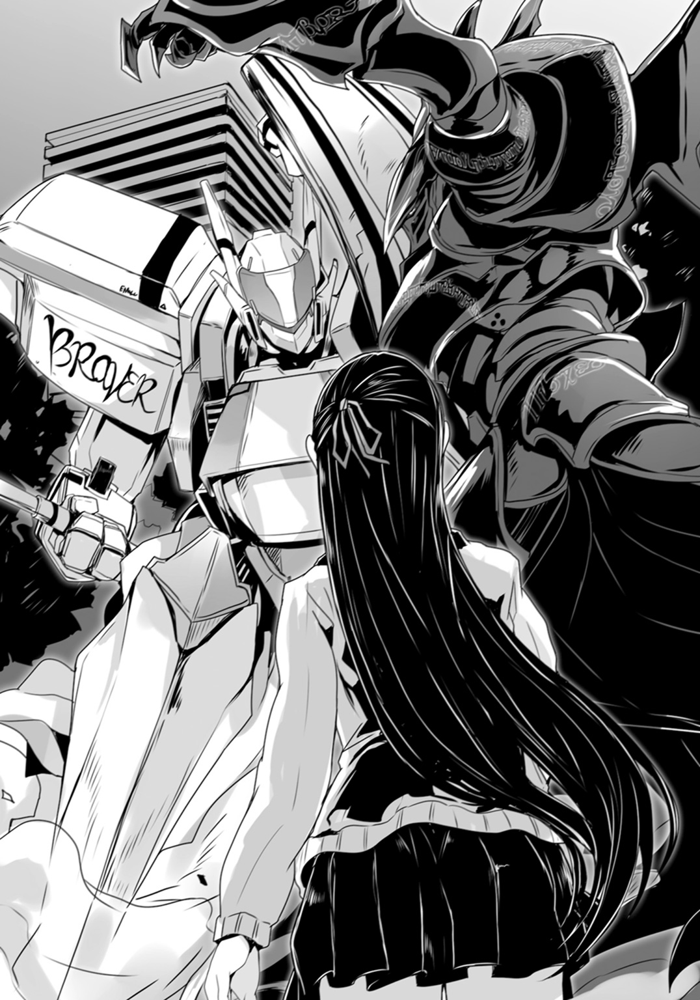
しかし......
「......？」
公園で激突する二体の巨人を見ていて――紫織は違和感を覚えた。
〈ブリガンド〉の動きがおかしい。
彼女が〈ブリガンド〉を見るのはこれで三度目だが、前の二回に比べて明らかに動きが鈍いのだ。いや。先の透明な〈悪魔憑き〉との戦いも紫織は少し見ていたが......その時と比べてすら、動きにキレがない。
何か不都合が生じているのか？ それとも――
（相手が......〈悪魔憑き〉じゃないから？）
あの〈ブレイバー〉と書かれた人型ロボット――だろう多分――が、有人なのか、それとも遠隔操作なのかは分からないが、相手は間違いなく〈悪魔憑き〉ではない。それどころか、先の透明な〈悪魔憑き〉との戦いを見る限り、〈ブリガンド〉に協力すらしてくれていた。
連志郎は〈悪魔憑き〉を相手に戦い続けてきた。〈悪魔憑き〉に対しては敵意を隠さないし容赦もしない。
しかし、そうでない相手には......？
「おおおおおおおおっっ!!」
どよめきが起こった。
戦況に変化が生じたからだ。〈ブレイバー〉が電撃警棒で〈ブリガンド〉に殴りかかり――今まではこれを避ける一方だった〈ブリガンド〉は、ぎりぎりのところで〈ブレイバー〉の右腕を摑んで攻撃を止めた。
力と力のぶつかり合いだ。
双方の装甲が耳障りな軋みを上げる。力は拮抗している様にも見えるが、体勢的には〈ブリガンド〉の方が不利である様に紫織には見えた。〈ブレイバー〉が振り下ろしてきた電撃警棒を、何とか〈ブリガンド〉が下から押し退けようとしている。
「斯波く――」
「やっちゃえ――〈ブレイバー〉！」
子供のものらしき声がどこかから上がった。
それは――それ自体は、ただそれだけの一声であったが、一つの切っ掛けとして、人々の間に連鎖的な反応を引き起こしていた。
「やれ、ぶっ倒せ！」
「〈ブレイバー〉！」
散発的に幾つもの声が上がり、それは瞬く間に他の声を呼んで、地鳴りの様な〈ブレイバー〉への声援へと変化していった。
実のところ......〈ブリガンド〉も〈ブレイバー〉も一般人にとって正体不明という点では同じだ。だが〈ブレイバー〉が人々を庇ったという事実、それに爽快感のある蒼と白の塗装、明らかに人工の人型機械だと分かる意匠......そういった点から人々は〈ブレイバー〉を『正義』だと認識したのだ。かつて人気を博した特撮番組の主人公と同じ名前というのも、あるいは影響していたかもしれない。
対して〈ブリガンド〉は、主に黒を基調とし、曲線主体の――やや生物的ともいえる輪郭をも備えている。見方によっては、その姿は、ひどく禍々しく映る。
しかも公園の施設に限っての事とはいえ......〈ブリガンド〉は先の〈悪魔憑き〉との戦闘で街を壊していた側の存在だ。その殆どは〈悪魔憑き〉の〈魔神態〉によるものか、さもなくば戦闘の余波によるもので、〈ブリガンド〉が意識的に破壊活動を行っていた訳ではないが......そんな事は、一般市民に区別などつくまい。
今――人々にとっては〈ブレイバー〉が正義であり〈ブリガンド〉が悪なのだ。
紫織はその事を思い知らされた。
今ここには......誰一人として連志郎の味方はいない。人々は〈ブレイバー〉越しにではあるが、連志郎に向けて敵意を剝き出しにしている。勿論、〈ブリガンド〉の正体を――連志郎の素性を知らないのだから、当然なのだが。
周りにいる全員が、連志郎の敗北を願っている。
連志郎を敵として認識し、憎悪や憤怒をぶつけている。
その事実に――紫織は慄然とした。
「――あっ！」
〈ブレイバー〉の動きが不意に鈍った。
何かの不調か。その推測を裏付ける様に、〈ブリガンド〉を押さえ込もうとしていた〈ブレイバー〉の力が緩む。
その一瞬を見逃さず〈ブレイバー〉を押し退ける〈ブリガンド〉。
「〈ブレイバー〉がんばれ！」
先の子供だろうか――そう応援する声が聞こえる。
〈ブリガンド〉は更に姿勢の傾いた〈ブレイバー〉に拳を叩き付ける。衝撃で〈ブレイバー〉の装甲が歪み――次の瞬間、そこから白煙が噴き出した。
猛烈な勢いで噴き出した煙が視界を遮り、人々の悲鳴を呼ぶ。
恐らくは煙幕なのだろう。〈ブレイバー〉側が故意に作動させたのか、それとも殴られた衝撃で誤作動したのかは分からない。だが――
「――！」
次の瞬間、ごぉう、と大気が唸った。
白煙を突き破る様にして上空に飛び上がるのは――巨鳥形態の〈ブリガンド〉である。
それは一直線に、既に夜色に染まった天に向かうと、遙か上空で軌道を折り曲げ......東の空へと飛び去っていた。
殆ど一瞬の出来事である。
そして......
「逃げた......？」
人々はゆっくりと薄れていく白煙の中に、片膝をついた状態で固着している人型ロボット〈ブレイバー〉を見る事になった。
「勝った！ 〈ブレイバー〉が勝った！」
人々の間から、歓声が上がる。
彼等は〈ブレイバー〉のところに駆け寄ろうとしては、非常線の警官に制止される、という行為を繰り返していた。人々の眼には、『正義の味方』が『悪者』を撃退した――という風にしか見えなかったのだろう。
興奮した人々が〈ブレイバー〉の名を連呼する。
しかし――
「............」
沸騰するかの様なそれらを背に――紫織は駆け出していた。
街の郊外にある、斯波家の屋敷に向けて。
●
草薙機関第三研究局――その出張所。
表向きは郊外の倉庫で、実際に一カ月前までは借り手を募集していた賃貸物件であるが、今現在、その内部には大量の機材が持ち込まれ、以前とは全く別の様相を呈している。壁際にはコンテナが積まれ、小型のクレーンまでが設置され、ある種の工場に似通った雰囲気になっているのだ。
だがその中でも一番目立つのは――
「おやっさん！」
大型トレーラーで運び込まれた〈アドバンスド・メイル〉壱号機――〈ブレイバー〉であった。仰向けに寝かされた状態で、倉庫の中央に設けられた空間にそれは収まり、整備員達が損傷した部品の交換や、冷却剤の交換等を開始していた。
「何とかあと三分――いや一分稼働出来るように出来ないんすか？」
二重に密閉された操縦席の蓋扉が開かれ、中から大悟が顔を出す。駆け寄った整備員二名が彼を左右から抱えて引っ張り出した。
「もうちょっとで〈悪魔狩り〉取り押さえられたのに！」
「阿呆。初の実戦でこんだけ動きゃ御の字だろ。贅沢言うな」
徹雄は手元のタブレットＰＣで〈ブレイバー〉の機能診断をしながら言った。
「予備の電池積むとか、有線で電力供給するとか......」
「単純に電力の問題じゃねえんだよ。人工筋が熱持って劣化する。冷却器載せたら載せたでデブっちまって、機体の運動性能落ちるしな」
「むぅ......」
説明をされても大悟は不満げである。
そこへ――
「大悟！」
支援車輌から降りた優羽が走ってきた。
整備員達や徹雄と同様に、作業用のツナギという格好だが――小柄な少女という事もあって、服に着られているかの様な、微妙に不自然な印象である。整備員達に抱きかかえられながら降ろされた大悟に駆け寄ると、彼女は手にした小さめのナイフを――
「――ていっ！」
いきなり大悟の肩に、突き刺した。
「痛っ――なにすんだよ!?」
「いいから黙って！ 身体動かないんでしょ？」
優羽はそのまま容赦なくナイフを動かして大悟の肩を、服ごと切り裂いていく。
傷口から血――ではなく蒸気が噴き出したのは、次の瞬間であった。
「熱ちっ！」
「熱いのはこっち！」
言いながら、優羽は皮手袋をはめた両手で切れ目を入れた大悟の皮膚を無理矢理引きはがす。いや。それは普通の意味での皮膚などではなく、その下から現れたのも、骨や筋肉などではなかった。
人工物なのだ。
強化合金製の骨格と形状記憶樹脂製の筋肉。やはり人工の皮膚の裏側には圧力感知の素子が格子状に配置され、刻印された回路によって繫がれていた。
人工物による人体の模倣。見方によってはひどく醜悪だ。
だが、優羽はまるで気にした様子もなく、ナイフをポケットに戻すと、代わりに取り出したドライバーを使い、金属骨格ごと大悟の右腕を取り外した。
手袋越しでもかなり熱い筈だが、彼女は大悟の右腕を放り出したりはせず、顔を近付けて子細に状態を調べていく。
「......また。ひどい負荷が掛かってるじゃないの」
「あー......いやそれは」
「人工筋肉も劣化してる。これは総取っ替えした方が早いわね」
「............ごめん」
大悟は頰を搔こうとしたのだろう。残った左腕をぎこちなく動かして――だがこちらも劣化が進んでいるのか、腕全体が痙攣しているだけの様にしか見えない。
大悟が自分で操縦席から出てくる事が出来なかったのは、これが理由だ。
彼の腕は義肢になっている。
いや。両手両足と内臓の幾つか、全身の皮膚の四割は、人工物なのである。
最先端技術で作られたそれは、本物と見分けがつかない程に精巧で......その気になれば各種運動もこなせる。実際、大悟は柔道と剣道の段位を持っているが、これは義肢と人工臓器を組み込まれてから取ったものである。
義肢や人工臓器は、いまだ改善の余地を多分に残した分野である。
試験的に大悟と同じ義肢や人工臓器を移植されている人間は他にもいるが、大悟程にこれに適応し、生身の肉体と同じかそれ以上に使いこなせている人間は他に例がない。
〈アドバンスド・メイル〉壱号機――試作機にして実験機である〈ブレイバー〉を、他の大人を差し置いて大悟が駆る理由もこれだった。
厳密な事を言えば、大悟は〈ブレイバー〉を『操縦』している訳ではない。少なくとも操縦桿だの何だのを握って動かして――などという事はしていない。〈ブレイバー〉の機体制御機構と大悟は義肢を介して繫がっており、自分の肉体を操る様な感覚で彼はこの鋼鉄の巨人を扱うのだ。
いわば〈ブレイバー〉は巨大な大悟の義体なのである。
当然......〈ブレイバー〉の機体にかかる負荷や、被る損傷とも、大悟本人は無縁でいられない。現に〈ブレイバー〉の人工筋肉の劣化と、大悟の義肢の人工筋肉の劣化が平行して生じてしまっている。操縦席内の温度上昇に加え、人工筋肉を動かす為の神経信号が回路上で漏洩――義肢の方にまで流れていたのだろう。
大悟の義肢も〈ブレイバー〉も試作品......動作上の問題が見つかれば適宜、対応策をとってはいるが、それでも次から次へと当然の様に不具合が生じる。むしろ後の改良機、量産型の為に、そうした不具合を出せるだけ出して一覧にしておくのが、試作機の使命でもあった。
「分かってるの？ 〈ブレイバー〉を動かすのは日常生活とは訳が違うの。無茶な動かし方も出来るけど、それだけ負荷がかかって壊れる――何度も言ったよね？」
「けど、直るんだろ？」
「ただで直る訳じゃないの！ 大悟の体にも負担が掛かってるんだからね！」
ここで優羽のいう『大悟の身体』とは、生身の肉体の事である。
当然ながら、こちらは『劣化したから予備と交換』という訳にはいかない。
「そういや、どうだったよ？ 大悟。例の〈悪魔狩り〉――いざやり合ってみた感想は」
「ああ、なかなか良い動きしてたッスね」
〈ブレイバー〉のすぐ横で、優羽や整備員達に応急処置をしてもらいながら、大悟は笑顔でそう言った。
「ええと――〈コベット・ファング〉だっけ？ 必殺技まであるなんて、分かってる感が半端ねえっていうか。正義の味方を名乗るだけはあるッスよ」
勿論〈悪魔狩り〉が自ら名乗っている訳ではないのだが、否定しないのならば同じ事だ......と大悟は考えていた。
「まああっちは戦闘経験も豊富みたいだしな。しかしどういう理屈で動いてるんだか。やっぱり〈具現体〉と同じなんだかな――」
「ま、次はねぇスよ」
自信たっぷりに大悟は言った。
「ヒーローの偽者は、本物のヒーローに倒されるのがお約束ってもんでしょ。ぶっ倒したあとなら、おやっさんもじっくりアレを調べ――」
「格好をつけるのはあとにしなさい！ 整備しにくいでしょ！」
優羽は大悟の頭を摑んで押さえ込みながら言った。
●
その姿は――いつもの彼とは、まるで別人の様だった。
「............アオ......イ......」
寝台の上で荒い呼吸を繰り返す連志郎。
その表情は苦悶に歪み、時折、譫言が口から漏れる事すらあった。
『アオイ』という言葉に何の意味があるのかは分からないが......それは繰り返し、彼の口からこぼれ落ちている。大事な何かなのだろう。あるいは大事な誰かの名か。
濡れたタオルを彼の額に置き、脈を測り、汗を拭い......これを繰り返しながら、ペルヴィカが甲斐甲斐しく彼の事を介抱している。だが――連志郎は帰ってきて倒れてから、ずっと目を覚まさないのだという。
和晃によれば、これは無理をして己の内の『悪魔』を使い続けた反動なのだそうだ。
本来、〈ブリガンド〉は連戦に耐えられる様には出来ていないという。あくまで〈悪魔憑き〉を見つけてはこれを襲う――いわば暗殺者の様な戦い方をしていた為、これまでは問題がなかったのだが、今回は予想外の乱入者のせいで、想定以上の時間を戦わざるを得なくなったのだ。
しばらくは目を覚まさないだろう――和晃はそう診断した。
「えらく消耗してんな」
壁際の椅子に座らされている縫いぐるみの熊が、首を傾げて言った。
「そんなに手強い相手だったか。その〈ブレイバー〉とやらは」
「手強いっていうか......」
紫織は自分の見た光景を脳裏に描き直す。
勿論、〈ブレイバー〉も強かったのだろうが、連志郎の方も動きが悪かった様に思う。
「〈悪魔憑き〉とは違うから、戸惑っていたみたいな......」
「ロボットみたいだったって？」
「はい。〈魔神態〉と違ってより機械的っていうか、兵器みたいっていうか」
「............草薙機関か」
和晃は呟く様に言った。
「草薙機関？」
「対〈悪魔憑き〉対策として、幾つかの省庁が予算と人員を出し合って運営している、非公開の――まあ平たく言や、政府の秘密組織だぁな」
「御存じなんですか？」
「一応、立ち上げの際に、宮内庁経由で勧誘が来た。知ってる連中の間じゃ、俺は〈人形使い〉なんて綽名で呼ばれてたからな。人型兵器の開発に嚙ませるつもりだったんだろ」
縫いぐるみの熊が肩を動かす。竦めてみせたつもりなのかもしれない。
「まあ、生前の――昔の話だがよ」
「............」
そういえば、詳しい話は聞かないままだが......この和晃を名乗る縫いぐるみも良く分からない部分が多々ある。断片的な話を総合すると、どうやら和晃自身は既に死亡していて、その霊魂みたいなものが、この熊の縫いぐるみに宿っている、という事らしいのだが。
「......シュン......ソ............シュン......」
連志郎は、未だ譫言を漏らしている。
ペルヴィカによれば、連志郎に特に目立った外傷はないそうだ。だが精神的な疲労が大きく......それが肉体にも悪影響を及ぼしているらしい。今の連志郎が見ているものは間違いなく悪夢であろう。
しかし――来てみたはいいものの、紫織に出来る事は何もない。連志郎を介抱するペルヴィカの手際は恐ろしく良く、紫織が手伝うような隙はなかった。結局、こうして横に座っている事しか出来ないのだ。
「......シュン......ソウ......！」
「シュンソウ？」
前にどこかで聞いた様な。
「ひょっとして『瞬装』？」
それは確か子供向け番組『天空騎士ブレイバー』において、主人公が変身する時に発する掛け声ではなかったか。旧いが有名な作品なので、その程度の事は紫織も知っている。
だが――連志郎は、あの作品を嫌っていたのではなかったか？
「――不器用な甥だぜ。まったくよ」
ぼそりと和晃が言った。
「引きずるなとは言わねぇが――引きずり方がな」
分かった様な分からない様な、妙な言い方である。
「あの......この『シュンソウ』って言葉、『天空騎士ブレイバー』の変身の掛け声ですよね。彼、あの番組見てたみたいですけど――」
見た事がないどころか、かなり詳しかった様な印象である。
なのに連志郎は真っ向から『天空騎士ブレイバー』を否定する。
一体何があったのか――
「紫織ちゃんよ。そもそもなんで嬢ちゃんはここにいる？」
和晃がそう問うてきた。
「――え？ なんでって」
「別に連志郎がどうなろうと関係ねえだろ、嬢ちゃんには？」
確かに今の紫織は、和晃の作った封印具を使わせてもらっている身だが......あくまでそれは和晃の温情とも言うべきもので、連志郎とは直接に関係がない。極論を言えば、和晃が封印具を貸し続けてくれるのならば、連志郎の生死すら気にする必要などない。
少なくとも連志郎の身を慮って、斯波邸に駆け込んでくる必要はない筈だ。
しかし――
「............」
黙り込んでしまった紫織を、和晃はボタンの目でしばらく眺めていたが。
「ペルヴィカ」
「――はい」
和晃に促されて、ペルヴィカが壁際の本棚に歩み寄ると――そこに伏せられていた写真立ての一つを持って戻ってきた。
「これは......」
ペルヴィカから渡された写真立てには、旧い情景が封じ込められていた。
映っているのは二人の子供だ。幼い男の子と女の子。
男の子の方には見覚えが――いや紫織の知る人物の面影があった。
連志郎である。恐らくは六歳か七歳の頃の。
ただしその髪は、今と異なり――黒かった。目鼻立ちは今と同様に整っているものの、当時の彼はごく普通の、日本人の標準とも言うべき黒髪をしていたのだ。
ではその隣にいる、やはり黒髪の少女は――
「俺の姪――連志郎にとっちゃ妹だ。確かその時は五歳だったか」
和晃が言った。
「妹さんがいたんですか？」
「ああ。いたな。確かに」
どこか意味ありげな口調である。
少し考えて――紫織はその意味に思い当たった。連志郎から妹の話は匂わされた事もないし、和晃もペルヴィカも言及しなかった。この家でその子の気配を感じる事もなかった。いや。そもそも連志郎の両親の話すら出てこない。
ならば――可能性は限られる。
「あの、すみません。もしかして......」
「............嬢ちゃん。昔話は好きかい？」
珍しく和晃の口調に、淀みの様なものが生じていた。
彼は常識外れの魔法使い、人間すら辞めた変人、社会通念の外側にいる非凡な存在ではあるが――彼とて、人並みの罪悪感を感じる夜も、あるのかもしれなかった。
「連志郎が〈悪魔憑き〉を追う様になった――俺が〈ブリガンド〉を造る切っ掛けにもなった話さ。ま、聞いて楽しい話じゃねえけどよ」
「......いいんですか？」
紫織は連志郎の方を一瞥して訊ねた。
部外者の自分が聞いて良い話なのかどうか。そもそも連志郎は自分の事をあまり話したがらない。本人が意識のない間に聞いてしまうのは、失礼なのではないかとも思った。
だが――
「ああ、言い方が悪かったか。すまねえな、嬢ちゃん、聞いてくれ」
和晃は短い縫いぐるみの手で後頭部を搔きながら言った。
「嬢ちゃんにこそ知っておいてもらうべきだ。そう思うんでな」
●
崩れゆく建物。噴き上がる火炎。
警報音は耳を聾する程の大きさで鳴り響き――そこに悲鳴が幾つも折り重なる。
煙に閉ざされる視界。鼻を突く異臭。歪む視界。止まらない耳鳴り。
意識は幾度も飛びそうになった。
だが気を失う事は許されなかった。
何故なら――
「............あ............あああああ............っ！」
嗄れた喉から声が漏れる。気管の奥がこすられて痛い。
破裂しそうな感情を押さえつけようと、両手で顔を強くつかんだ。指先を濡らすぬるりとした感触――これは汗か。涙か。それとも......血か。
（......これは夢だ）
何度も繰り返し見た遠い日の記憶。
だから分かっている。この先がどうなるのかも嫌という程に知っている。過去は変えられない。ただ追憶して嚙み締めるだけだ。
「......お......兄ちゃ......ん......」
今にも途切れそうなか細い声が連志郎を呼んだ。
あるいはここで振り向かなければ、違う未来が待っていたのかもしれない――そんな風にすら連志郎は思う。それは決して幸福でも何でもないだろうけれど、心の奥底に消えぬ烙印を刻み込まれる様な事もなかっただろう。
だがあの日の連志郎は振り向く。振り向かずになどいられない。
妹が呼んでいるのだから。
「葵......！」
まず目に入ったのは、崩れ落ちた瓦礫の山だ。
幼い連志郎の何倍も、何十倍もの大きさのコンクリートがうず高く積もっている。微妙な均衡によって成り立つ偶然の造形物。歪な瓦礫が互いに支え合う事で、あちこちに小さな隙間が生じていた。
その一つから......小さな手が出ているのが見えた。
駆け寄ると、その奥には泣き腫らした妹の顔も見えた。
「......痛い......よ......」
妹の顔は――その左半分は真っ赤だった。
恐らくは頭から流れ出た自身の血で染められて。コンクリートから突き出た鉄筋が妹の頰に容赦なく突き刺さっているのも、見えた。見えてしまった。
連志郎の頭の中で、何かが切れる音がした。
「葵、葵！ 今......今、兄ちゃんが助けてやる！ 助けてやるから！」
素手でコンクリートを摑む。
動かない。押した。引いた。だがびくともしない。手を放して蹴飛ばしてみたが同じだった。体当たりまでした。だが瓦礫は動かず連志郎が肩に傷を負っただけだった。
掌は、いつの間にか血で真っ赤に染まっていた。
まだ小学校に上がったばかりの連志郎は、あまりにも無力だった。ただ重く、ただ大きいだけの瓦礫を前に――為す術がない。これを動かして、妹を救い出す事が出来ない。
「......――！ ......――っ！」
どうすればいい？ どうすれば葵は救われる？
周りを見回しても、助けてくれそうな大人はいない。
絶望という言葉の意味を、連志郎はこの時、初めて知った。
ゆっくりと、しかし確実に光を失っていく妹の目。妹が死んでしまうのだと――今この瞬間にも死につつあるのだという事が、幼い連志郎にもはっきりと分かった。
何とかしなければ。
しっかりしろと、頑張れと、声をかければ良いのか？
大丈夫だと言ってやれば良いのか？
だが圧倒的で容赦ない現実を前に、そんな中身のない言葉が何の慰めにもならないのは、連志郎にも分かった。分かってしまった。
ならばどうすれば良い？ どうすれば――
（どうにも出来ない）
幼い頃の自分をひどく醒めた気持ちで眺めながら――連志郎はそう結論する。
過去は変えられない。冷厳たるその事実だけが、そこにはあった。
●
天井を淡い光が照らしているのが見えた。
「.........」
瞬きを二度ばかりして焦点を合わせる。
自分の部屋の見慣れた天井だった。
記憶に曖昧なところがあるが――どうやら自分は屋敷に帰ってきたらしい。気絶する程に消耗したのは久し振り、いや、二度目か。一度目は初めて『悪魔』を狩った時の事である。〈コベット・ファング〉を使用する時の『反動』を甘く見ていたのだ。
ともあれ――
「気がついた？」
「ああ。済まなかったな、ペルヴィ――」
そこまで言って――連志郎は固まった。
寝台の脇に置かれた椅子に座り、自分の顔を覗き込んでいたのが、ペルヴィカではなく同級生の少女だと気付いたからである。
「何故、君がいる？」
身を起こしながら、連志郎はそう問うた。
学校からの帰り道――彼女は先に帰らせた筈だった。勿論この場合の帰る先は、紫織自身の家であって、斯波の屋敷ではない。仮に帰らずどこかで連志郎の戦いを見ていたのだとしても......その後、屋敷までやってきて、しかも連志郎の部屋で彼が起きるのを待っている理由はない筈だ。
「オジサマにも聞かれた。何故かな。本当――何故なんだろう」
紫織は首を傾げる。
しばらく彼女は自分の中で言葉を探していた様だったが――
「そうね。心配――斯波くんが心配だったから」
「心配？」
「うん」
紫織は自身にも納得させるかの様に頷いて、付け加えた。
「斯波くんが......なんだか、皆に、悪者扱いされてたから」
紫織が語ったところによると、彼女はやはり〈ブリガンド〉の戦う姿を見ていたらしい。
〈輝かしき虚栄〉との戦いも、そしてその後の〈ブレイバー〉との戦いもだ。
そこで彼女は人々が〈ブレイバー〉を正義の味方と認識し、それと対峙する連志郎をいわゆる『悪者』だと決めつけてゆく――そんな様を目の当たりにしたという。
「......当然だな」
連志郎は言った。
「あの〈ブレイバー〉を名乗った奴が正義だというのなら、その敵は悪だろう。実に分かり易い。見た目にも、行動にもね」
〈ブレイバー〉が〈輝かしき虚栄〉の攻撃を防ぎ、一般市民に被害が出るのを防いだのは連志郎も見ている。実に『正義の味方』らしい行動だ。優先順位がはっきりしていて、そこには躊躇というものがない。
「でも斯波くんは、〈悪魔憑き〉を――〈魔神態〉を、倒して回っていたでしょう？ だったら斯波くんだって......」
「正義の味方だと？ よしてくれ。寒気がする」
連志郎は吐き捨てる様に言い――それから『らしくない』と気付いて溜息をついた。
「そもそも押さえ込んでいるだけで、僕も君も〈悪魔憑き〉だぞ。〈悪魔憑き〉を倒して回る行為そのものが正義だというのなら、僕は今すぐにでも君を殺して自分も死なねばならない。それとも良い〈悪魔憑き〉と悪い〈悪魔憑き〉がいて、それを見分ける事が出来るとでも？ 出来るとしたらその基準は何だ？」
「............」
紫織が言葉に詰まる。
言いすぎたか。連志郎は口調を若干緩めて付け加えた。
「他人にどう思われようと、僕はどうでもいい」
強がりでも何でもない。本当にどうでも良いのだ。最初に紫織にも告げた通り――あくまで連志郎は自分の満足の為に〈悪魔憑き〉を狩っているだけだ。
別に声援など要らない。罵られようが誹られようが構わない。放っておいてくれれば一番良いが――いずれにせよ、他人がどの様に思っていようと連志郎に影響はない。
「......斯波くんは〈悪魔憑き〉を恨んでいるの？」
紫織はふと思いついたかの様な口調でそう問うてきた。
「妹さんが、殺されたから？」
「............」
連志郎は眼を細めて紫織を睨む。
射貫く様な視線を避けて、紫織は眼を伏せ――しかし彼女は続けた。
「オジサマが話してくれたの。斯波くんと、妹さんの事。〈悪魔憑き〉が現れた最初の事件に巻き込まれたって」
「余計な事を......」
唸る様に連志郎は言った。
妹の――葵の死は、何の救いもない、ただ気分が悪くなるだけの話だ。そんなものを紫織に語って聞かせて何の意味があるのか。元々和晃は、酔狂が過ぎる部分がある変わり者だったが、他人の秘密を暴露して喜ぶ様な趣味はなかった筈なのだが。
「私が聞きたそうな顔をしてたんだと思う」
紫織はそう言った。
彼女の表情は静かなものだった。殆ど無表情と言って良い。憐れむでもなく、ましてや嘲るのでもなく、冷静に事実を事実として受け止める――そんな眼をしていた。
「何も知らないから、知りたくなったの」
「............」
連志郎は返すべき言葉が思い浮かばず、沈黙する。
紫織もまた――それ以上何かを言おうとする様子はなかった。殊更に何かを喋れと催促してくるでもない。二人の間に気怠い沈黙だけがわだかまった。
このまま黙り続けていれば、紫織も諦めて帰ってくれるかもしれない。
そんな考えも脳裏をかすめたが――
「『天空騎士ブレイバー』......」
連志郎は己の手元に視線を落とすと、呟く様に言った。
「......え？」
「僕も見ていた。子供の頃は夢中になったよ。妹と一緒に見てた」
懐かしい番組だ。
連志郎と同じ年代の男の子なら、必ずと言っていい程、見ていただろう。
例に漏れず、連志郎もまた毎週『ブレイバー』の放送される時間にはテレビにかぶりつきになり、変身ポーズの真似をした。決まり文句や名台詞の数々も全て暗記していた。
「誰かが泣いている時。誰かが苦しんでいる時。ブレイバーは颯爽とその場に駆け付け、変身して諸悪の根源を倒してくれる。弱きを助け、強きを挫く、まさしくヒーローそのものだよ。男の子なら誰しも憧れた――自分もいつかあんなヒーローになれるんじゃないか、そんな風に僕も夢想したものだ」
出来るだけ淡々とした口調を装っているつもりだが、上手くやれているかどうかの自信はなかった。記憶の瘡蓋をわざわざ自分で剝がそうとしているのだ。口の中に何か苦い味が溢れてくるのを、連志郎はどうする事も出来なかった。
どうして喋ろうという気になったのかは、自分でもよく分からない。
だが――
「――あの日。僕等の街に〈悪魔憑き〉が現れた。記録上、最初の〈魔神態〉だ。いきなりの事で、大人達は誰も――駆けつけた警察官達でさえも、その被害を防ぐ方法を持っていなかった。建物が幾つも、次から次へと崩れたよ。僕は――妹を連れて逃げていて、その崩落に巻き込まれた」
「............うん。聞いた」
紫織は小さく頷く。
彼女が、本当に何の表情も示さずただ聞き役に徹してくれているのが有り難かった。
今更誰かに慰めてほしい訳ではないのだ。そんな事をしても、葵は戻ってこない。絶望にまみれた妹の死がなかった事になる筈もない。ただ――
「僕は助かったけど、妹は瓦礫の下敷きになったよ」
まるで他人事の様な口調で連志郎は言った。
そうでなければ――突き放して考えねば彼自身が保ちそうにない。いまだにあの時の事は何度も夢を見て、その度に、汗をびっしょりかいて飛び起きるのだ。
「勿論、助けようとしたよ。でも瓦礫は重くて、子供の僕の力じゃどうにもならなかった。周りの大人も、僕達に構っている余裕なんてなかった。〈悪魔憑き〉が暴れ回っていたからね。警察ですらこれ以上の被害を出さないようにって――〈悪魔憑き〉に発砲するのに忙しくて、瓦礫の下敷きになった子供になんて、気付きもしなかった」
「......それは」
「葵が――妹がね......死んでいくのが分かったよ。血を流してさ。それが止まらなくて。僕の眼の前でさ。痛い痛いって言いながら、でも僕は何も出来なくて。何とか声をかけて、誰か助けてくれる大人が来るまで、妹を保たせたかった。だから――」
大丈夫とか。頑張れとか。
そんな中身のない言葉では、今眼の前にのしかかる圧倒的な現実を押し退けられない。子供心にそれが連志郎にも分かった。今必要なのは、具体的で、明確な、希望なのだと。
「だから、僕はさ......妹に言ったんだ。大丈夫だ、頑張れ、頑張れば、きっとブレイバーが助けに来てくれるって」
誰かが泣いている時。誰かが苦しんでいる時。
颯爽とその場に駆け付け、変身して諸悪の根源を倒してくれる皆のヒーロー。
弱きを助け、強きを挫く、万能の超人。
「本当......子供って愚かだ」
連志郎は苦笑した。
「妹はさ、それで笑ったんだ。死にかけてたのに、笑ってくれたよ。ブレイバーが来てくれるって信じてたんだろう。けれどそんなもの来る筈がない。ヒーローなんていやしないんだ。当たり前さ」
それは、あくまでもテレビ番組の中にしか存在しない。
「一度は笑った妹だけれど、それでもどんどん、血は流れていって。誰も助けに来てくれなくて。僕は焦った。このままじゃ妹が死んでしまう。とにかく、何とかして元気付けなきゃって――ただただ、僕は追い詰められてたんだろう」
今にして思えば、本当にそれは滑稽な話だった。
もしあの場に誰かがいれば、子供の浅知恵に呆れ果てた事だろう。
「僕は妹の前で叫んだ。『瞬装』......ってね」
「......！」
紫織が驚いた様に眼を瞬かせる。
「何度も何度も――叫んだよ。ひょっとしたら、そうする事で、僕自身がブレイバーになれるんじゃないか、そんな風にすら思っていた。ブレイバーになって、妹を助けてやるんだ、最後の方は、自分勝手にそんな事すら考えてた」
本当に愚かで、間の抜けた光景だったろう。
けれど当時の連志郎は本気だった。疑う事すら知らなかった――いやそんな余裕もなかったのだ。ブレイバーなら、瓦礫などものの数ではない。テレビの中で見たように華麗に、力強く、当たり前のように妹を助ける事が出来る筈だったのだ。
「でも何も起こらなかった。当然だよ。僕はヒーローではなかったし、ヒーローなんてそもそもどこにもいないんだ。そんなもの、存在し得ない」
連志郎は吐き捨てる様に言った。
「僕の時だけじゃない。今この瞬間も世界中で人が死んでる。戦争で。貧困で。病気で。事故で。災害で。犯罪で。助けを呼びながら死んでいく子供だっているだろう。世界はそういうもので、それをどうにかなんて出来ない。子供の危機に『必ず』やってきて救ってくれる、そんな都合の良い存在など、あり得ない」
どんな超能力があろうと。どんな超兵器があろうと。
世界中の助けを求める人々の全てを救う事は絶対に出来ない。ならばそれがまるで可能であるかの様に、都合の良い物語と都合の良い英雄像を子供達に刷り込むのは......無責任で罪深い行為ではないのか？
「妹は......最後に言ったよ」
あの時の一言は今も耳の奥にこびりついている。
それは永劫に消えない呪いの文句だ。
......おにいちゃんの......うそつき......
「――ってさ。まったくだ。ひどい噓つきだよ、僕は」
拳を握りしめて連志郎は言った。
自分は妹に、一度は空疎な希望を抱かせてから、改めて絶望の底に突き落としたのだ。
いもしないヒーローが、助けてくれるなどと言って。
実は自分がそのヒーローなのだと、噓までついて。
その全ては結局――無駄どころか、幼い妹を絶望塗れにさせて、逝かせただけだった。
「......〈悪魔憑き〉を皆殺しにしてやろうと思った」
その後、連志郎は当時まだ存命だった和晃のところに引き取られた。
一週間以上も、ろくに食事すらせず、ただぼんやりと部屋の片隅で膝を抱えているだけだった連志郎は――その後〈悪魔憑き〉である事が確認された。
「僕にも奴等と同じ『力』があるんだと分かった。だから僕は決めたんだ。奴等を全て滅ぼしてやると。葵の、妹の、復讐をしてやると。僕はその為に自分の中の『悪魔』を扱う方法が必要だった。そしてそれを、和晃おじさんが持っていたんだ」
「復讐――」
「言っただろう？ 僕は正義の味方じゃない。ただの復讐者だ。誰かを守るとか、正義を守るとか、そんな大層なお題目は僕にはない。僕はただ自分の為だけに――自分が満足する為に〈ブリガンド〉を使っている」
それが無駄な行為である事は、連志郎も自覚している。
復讐が何かを生み出すとも思えない。そんな事をしても妹は帰ってこない。全くもってその通りだ。
だが――そうせずにはいられない。
『敵』を見いだして。『敵』を心底から憎んで。そうでなければ正気を保っている事すら出来ない――そんな風に連志郎は思った。
だから連志郎は、自分が人々から敵視される事も予想のうちだった。あくまで個人の事情で――自分自身の満足の為に戦っているだけだ。そんな身勝手な人間をわざわざ賞賛する様な物好きはいないだろう。
しかし......
「私は――姉さんだったのよね」
ふと、今更思い出したかの様な口調で紫織が言った。
「......なに？」
「私も家族を――姉妹を亡くしてるんだ。〈悪魔憑き〉の事件ではないけど」
紫織は微苦笑を浮かべてそう言った。
「すごく良く出来た姉さんで、何でも出来たし、何でも知ってて、私にとっては姉さんがヒーローだったのかもしれない」
「............」
連志郎は改めて紫織を見つめた。
彼女は俯き加減で――膝の上で両の拳を握りしめていた。
彼女もまたわざわざ記憶の瘡蓋を剝がそうとしている――それが連志郎には分かった。
「姉さんが死んだあと、私は姉さんの代わりになろうとしたの」
「代わりに......？」
「髪型も、服装も、真似て――口調なんかも。成績も、頑張って姉さんと同じくらいになろうとしたの。きっと、姉さんがもうどこにもいないのが分かっていたから、自分が姉さんになる事で、姉さんが死んだっていう現実に、反抗しようとしてたんだと、思う」
それは一体......いつの話なのか。
小学生の時か。中学生の時か。
いずれにせよそれは――
「気持ち悪がられちゃった。友達にも。親にも。親は――出来の悪い方の娘が、出来の良かった方の娘を真似るのが、不愉快だったっていうか......死んだ人の思い出を穢す行為の様にも見えてたんじゃないかな。それとも単純に頭がおかしくなったって思われたのかな。きちんと聞いた訳じゃないから、よく分からないけど」
「............」
「結局、親とは殆ど会話とかしないままに、私は高校生になって。そこで発症した。姉さんになるどころか〈悪魔憑き〉になっちゃって、両親とはそれ以来、会ってない」
多分、これから一生、会う事はないだろう――と紫織は言った。
「しかしそれは――」
言いかけて、しかし連志郎は黙り込むしかなかった。
適切な言葉が見つからない。紫織の半生を、連志郎が評する事は出来ない。彼女もそれを望んではいないだろう。普通は誰にも明かす事のない心の傷だ。無粋に触れて勝手に評する資格など、誰にもない筈だった。
どうして紫織がこんな話をしたのかは、分からない。
あるいは自分が連志郎の過去を聞いてしまった――連志郎自身に過去を語らせた事への、彼女なりの詫び、もしくは償いなのかもしれない。
「私、病院で死ぬつもりだった。死ぬんだと思って、それを疑ってなかった」
入れば出られぬ〈悪魔憑き〉の『収容所』。
それは恐怖と絶望だけがわだかまる最果ての地だ。
「むしろちょっとは、『これでやっと終わるんだ』とか、そんな事も考えていたと思う。あんまり死ぬ事が怖くなかったんだ。でも――そんな時、斯波くんに出会った」
「あの夜の事か」
「そう。最初ね、私――斯波くんが、〈ブリガンド〉が私に手を伸ばしてきた時、このまま殺されるんだって思った。でも私は死ななかったし、それどころか、斯波くんには棄てた筈の命を......棄てる筈だった命を、拾ってもらっちゃった」
意図した事ではなかったが、連志郎の〈コベット・ファング〉の影響を受けた紫織は、体内の『悪魔』が休眠状態になる事で――生きては出られない筈の『収容所』から解放される事になった。
「......僕は、余計な事を、してしまったのか？」
「かもね」
また紫織は小さく笑った。
「でもさ、なんて言うか......〈ブリガンド〉を見た時にね。私、生きたいって思っちゃったの。あれ、ひょっとして私も生きていてもいいのか、私にも、生きている資格があるんじゃないのかなって――そんな事考えちゃった。昔のね、童話で、魔法使いの塔に囚われていたお姫様を、格好良い騎士が助けに来てくれる話――まるであんなお話みたいだって、柄にもなく、思っちゃった」
差し伸べられる――鋼鉄の手。
自分を助けてくれる人がいた。
自分に生きろと言ってくれる人がいた。
そしてそれを嬉しいと思った――思ってしまった自分がいた。
始まりが単なる勘違いであったとしても、一度、取り戻した生への欲求は......それまで強く押さえ込まれていたが故に、消える事なく、静かに燃え始める。
「ね、斯波くん。確かにあなたはヒーローじゃないかもしれない」
囁く様に言って紫織は椅子から立ち上がる。
彼女は連志郎の寝台に膝をつくと、ゆっくり腕を回して――彼の頭をかき抱いた。
「ただ、ここにあなたに助けられた命があるの。あなたがどう思っていようと――私の命はあなたに拾ってもらった。これは事実」
「............」
「これ、もう少し大事にしてみてもいいかな？ せっかくだし......ね？」
柔らかな乳房の感触と――その奥に脈打つ心臓の音。
それは実際に感じる事の出来る生命そのものだ。
「............」
意図せずして連志郎が拾った――命。
その意味や価値を評する立場に連志郎はない。それは結局、紫織自身のものであって、連志郎はその扱いに意見を差し挟める筈もない。『大切にしろ』と言うのは簡単だが、それこそ、何の責任も伴わない、空疎な理想論だろう。
そんな言葉を連志郎はかけない。かけられない。
自分はテレビ番組の中の主人公ではないのだから。
だから――
「............勝手にすればいい」
「......うん」
ぶっきらぼうに言う連志郎に――彼を抱き締めたまま、紫織は小さく頷いた。
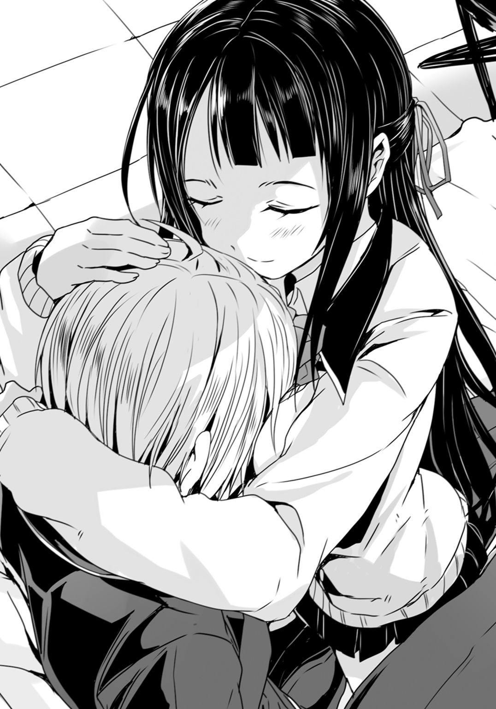
●
報告書の作成は困難を極めた。
一度ならず二度までも若槻紫織を見失ってしまった。
しかも見失った直後、その付近では〈黒騎士〉と〈具現体〉が出現し、衆人環視の中で戦闘を行っている。見失ったのはそうした現場の混乱も関係しているが――それは言い訳にならない。もし何らかの理由で紫織の病状が再び現れ、急激に進行した結果、〈具現体〉を構成していたのだとしたら、そもそも監視をしていた意味がない。
〈黒騎士〉と〈具現体〉の戦闘現場は比較的広めの公園だった事から、施設の被害や怪我人は多数出たが......いずれも軽傷で、幸い、死者は出ていない。
この結果には、現場に介入した大悟達の――特別対応班の働きもある。
大悟の駆る〈アドバンスド・メイル〉試作壱号機が、装備した電磁盾で〈具現体〉の攻撃を食い止めたのだ。彼等が出動していなければ、住宅街に広範囲の被害が出ていたのは間違いない。
だが美沙紀は現場責任者として、彼等に出動要請を出すのが遅れた。〈黒騎士〉と〈具現体〉の戦闘で混乱する現場に、人型機動兵器を投入する事は、火に油を注ぐ結果になるのではないかと危惧したからだ。
いずれにせよ......美沙紀は失態に失態を重ねる様な形になっている。
「――はぁ」
美沙紀はこめかみを揉みながら溜息をついた。
報告書の作成に手こずって、実は昨晩から寝ていないのだ。だが草薙機関の監視員と、養護教諭の二重生活をしている美沙紀としては、学校に出ない訳にもいかない。
「彼女に積極的な『協力』を求めた方が良いかも......」
美沙紀としては、出来るだけ若槻紫織には『普通の』学生生活を送らせてやりたかった。
だからこそ、普段は自分が監視されている事も意識せずに済む様にと、美沙紀の正体や周辺地域の監視装置については、知らせていない。
だが短期間に二度も彼女の位置を見失うとなると、監視態勢を強化するか、さもなくば紫織に自発的な『報告義務』を課すのが――もっと端的に言えば『自重』を求めるのが最も堅実な手段だ。
ただでさえ彼女は二度も外泊をしている。
携帯電話のＧＰＳ記録から、どうやら外泊先は同級生の――少年の家であるらしいと分かる。美沙紀としては十代の少女達の恋愛事情に殊更、首を突っ込みたくはないが、〈悪魔憑き〉が精神の病であるとされている以上、何が影響を及ぼすか分からない。例えば失恋で〈悪魔憑き〉が再発する可能性だってゼロではない筈だ。
だからこそ紫織の行動記録に関しては、可能な限り詳細である必要があった。彼女は貴重な症例であると同時に、〈悪魔憑き〉に関しては分からない事だらけなのだから。
だが――
「〈悪魔憑き〉――か」
本当にどうしようもなく今更だが。
あれは本当に一体何なのだろうか？
「テロだって誤魔化すにも限界があるだろうし」
病気としての〈悪魔憑き〉はともかく、事実として〈具現体〉の存在を、日本政府は認めてはいない。報道管制が敷かれている為、〈具現体〉のもたらす大規模破壊は、全て『過激派のテロ行為』という形で辻褄合わせが成される事になる。
しかし......
「............」
ふと美沙紀はノートパソコンのブラウザを開いて検索をかける。
〈悪魔憑き〉の一語を打ち込めば、電子の海上にばらまかれた大量の情報が引っかかってくる。呼び方は様々だが〈具現体〉に言及する文章もあるし、写真や動画も大量に見る事が出来る。政府は一律にそれらを『合成』で『捏造』と断じているが、だからこそそうした『隠された真実』を曝こうと躍起になっている者達の存在も、あちらこちらで見る事が出来る。
............
『政府は必死に隠しているが〈悪魔憑き〉はある日突然、怪物化するのだ』
『〈悪魔憑き〉はいつか完全に乗っ取られて〈悪魔〉そのものになってしまう』
『いつ誰が悪魔になるのか分からない。貴方の隣の誰かもある日突然――』
............
病気としての〈悪魔憑き〉について、その罹患、発症にまつわる因果関係は、今のところ、解明されていない。何が原因でその病気に罹るのか、分からないのだ。少なくとも単純なウイルスや微生物の類が原因ではない様だし、かといって遺伝病の類でもない様だ。全く同じ環境に置かれていても、発症する人間としない人間がいる。
では罹患者とそうでない者を分ける一線とは何か？
本当にそこには厳密な一線などなくて、単に『誰にでもあり得る』確率論でしかないのだろうか。それとも――例えば十九世紀に発見された放射線の様に――未だ知られていない未知の要因がその病状を引き起こしているのか。
この点については未だに草薙機関でも定説を確立するには至っていない。
しかし......
「......悪魔」
その単語をふと美沙紀は舌の上に載せてみる。
〈具現体〉を出すにまで至った〈悪魔憑き〉はもう『悪魔』そのものといっても過言ではないのかもしれない。多くの場合に、彼等は凶暴で、狡猾で、存在そのものが人々の脅威に他ならない。
だがそもそも彼等は何故、現代になって、唐突に現れた？
疾病だというのならば、もっと昔から何らかの兆候が――類似の病気なり何なりが存在していてもおかしくはないのだ。なのに、過去にそうした病気の記録はない。いや。あってもそれこそがオカルトの世界に分類されてしまい、真面目に議論されてこなかっただけなのだろうか。
そして――
「あれが悪魔なのだとしたら......」
病気ではなく。障害でもなく。現象でもなく。
〈悪魔憑き〉の原因が文字通りに悪意ある存在なのだとしたら。
そこには目的がある筈なのだ。
だがそれは――何か？
「............馬鹿馬鹿しい」
美沙紀は溜息をついた。
こんなところで美沙紀一人が考えてみても詮ない事だ。そもそも〈悪魔憑き〉という呼称は破壊現象が旧いオカルト映画を想起させるという事でつけられたものにすぎない。実際にそこに悪魔なり何なりの存在を認めた上での話ではないのだ。
「......とにかく昼までに報告書、上げてしまわないと」
再びパソコンの画面にエディターを呼び出すと、美沙紀は益体もない想像を頭から締め出して、書類の作成に集中する事にした。
あ と が き
どうも、軽小説屋の榊一郎です。
今回はスーパーダッシュ文庫改めダッシュエックス文庫のリニューアル創刊にお呼びが掛かり書かせていただく事になりました。集英社関係では以前、一度コラムのお仕事をした事はありましたが、小説の仕事としては初、我ながら相変わらずの傭兵っぷりであります（笑）。
私の場合、新規にお仕事させていただく際には、割と先方の希望されるタイプの作品を尋ねたり、手持ちのプロットを何本か提示して選んでいただいたりする（勿論、その後、編集さんの意見をいただいて設定や登場人物を調整したりもするので、そのまま書く事はあまりない）訳ですが。
正直、「多分これはなかろう」くらいに思っていたプロットが通って、私、大混乱であります。
巨大ロボで変身（？）ヒーローものとか、ライトノベルの世界では『売れない三ジャンル』といわれるうちの二つを兼ね備えるという二重苦の代物で（巨大ロボ、変身ヒーローもの、時代もの）、博打にも程がある、とか思った訳です。
とはいえ、業界的に『売れない』と言われているのも承知の上で、そういうのを書かせていただけると聞くと、俄然、書き手としてもやる気が出る訳で。
絵師さんも柴乃櫂人さんという売れっ子さんと組ませていただいた以上、条件としてはこれ以上望むべくもない。
がしがしと書かせていただきました。ええもう。
主人公の連志郎ですが、いわゆるヒーローものの主人公からは少しズレています。というかヒーローものでヒーロー全否定の主人公とか、物語的に自己否定も甚だしい訳ですが......そういう彼だからこそ、そして彼を見つめる紫織や、彼の影とも言うべき大悟、といった登場人物達だからこそ描ける、ヒーローの物語というのも、あるかと思いまする。
本作は単巻で終わる読み切りではなく、連志郎の物語はこのあとも勿論、続く訳ですが――
願わくば、最後まで読者の皆様に愉しんでいただける事を。
二〇一四年十月
榊 一郎
著者紹介
榊 一郎 さかき いちろう
１９９８年に『ドラゴンズ・ウィル』が第９回富士見ファンタジア長編小説大賞に準入選しデビュー。自称『軽小説屋』。速筆であり、多作なライトノベル作家であると同時に、アニメやゲームのシナリオライター、創作講座の講師としても活動中。
illustration
柴乃櫂人 しばの かいと
大阪出身、東京都在住。
巨大ロボものは初めて描きました。
今後ともよろしくお願いします。
ダッシュエックス文庫DIGITAL
神鎧猟機ブリガンド
著者 榊 一郎
(C) ICHIRO SAKAKI 2014
２０１４年12月31日発行
この電子書籍は、ダッシュエックス文庫「神鎧猟機ブリガンド」
２０１４年11月26日発行の第１刷を底本としています。
発行者 鈴木晴彦
発行所 株式会社 集英社
〒１０１－８０５０
東京都千代田区一ツ橋２丁目５番10号
０３－３２３０－６０８０（読者係）
制作所 株式会社デジタルディレクターズ
本作品の全部また一部を無断で複製、転載、改竄、インターネット上に掲載すること、および有償無償に関わらず、本データを第三者に譲渡することを禁じます。なお個人利用の目的であっても、コピーガードを解除しての複製は、法律で禁じられています。